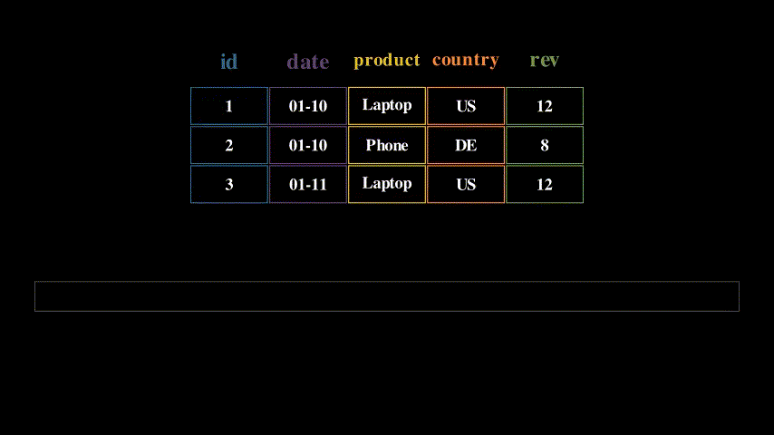
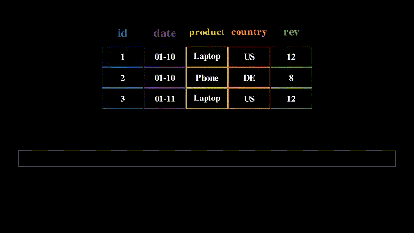

Архитектура Информационных Систем
Сборная страница со всеми лекциями курса. Доступна версия для печати (PDF).
Модуль 1. Архитектурные основы
Курс начинается с фундаментальных принципов построения приложений. Прежде чем говорить о конкретных технологиях (базах данных, очередях, кешах), нужно понять как вообще организовать код, чтобы система была понятной, расширяемой и тестируемой.
Модуль отвечает на вопросы:
- Как строятся приложения? — компоненты и слои как базовые единицы организации кода (класс, модуль, сервис)
- Как разделять ответственность? — архитектурные паттерны (чистая и др архитектуры)
- Как приложения общаются? — протоколы взаимодействия (REST, gRPC, GraphQL, WebSocket)
Введение. Принципы построения приложения
Первая лекция закладывает фундамент: что такое компонент и как компоненты зависят друг от друга?
Компонент — это базовая единица вычисления или хранения данных с чётким контрактом (интерфейсом) и набором зависимостей. Это может быть класс, модуль, библиотека или микросервис. Главное — у него есть чёткая граница: что он принимает на вход, что возвращает, от чего зависит.
Управление зависимостями — ключевая задача архитектуры. Если компонент A зависит от компонента B, то изменения в B могут сломать A. Когда в проекте сотни компонентов, неконтролируемые зависимости превращают код в «клубок спагетти», где невозможно понять, что от чего зависит.
Лекция вводит понятия слоя (множество компонентов с общей ответственностью) и правил межслойных зависимостей (например, «слой бизнес-логики не должен зависеть от слоя UI»). Эти правила помогают избежать циклических зависимостей и упрощают тестирование.
Компонент
Компоненты
Рассмотрим несколько примеров:
Компонент как класс
#include <iostream>
class NumberPrinter {
public:
void print(int x) {
std::cout << x << std::endl;
}
void printRange(int from, int to) {
for (int i = from; i <= to; ++i) {
std::cout << i << std::endl;
}
}
};| Единица вычисления: | форматирование и вывод чисел |
| Интерфейс: | сигнатуры публичных методов |
| Зависимость: | консоль ввод-вывод |
| Форма реализации: | класс (ООП-модель) |
- Компонент как функция (Elixir)
def send_message(host, port, message) do
{:ok, socket} = :gen_tcp.connect(host, port, [:binary, active: false])
:ok = :gen_tcp.send(socket, message)
:gen_tcp.close(socket)
end| Единица вычисления: | передача сообщения |
| Интерфейс: | сигнатура функции |
| Зависимость: | сеть (TCP stack) |
| Форма реализации: | функция (функциональная модель) |
- Компонент как функция (Go)
func LoadUserNames(db *sql.DB) ([]string, error) {
rows, err := db.Query("SELECT name FROM users")
if err != nil {
return nil, err
}
defer rows.Close()
var result []string
for rows.Next() {
var name string
if err := rows.Scan(&name); err != nil {
return nil, err
}
result = append(result, name)
}
return result, nil
}| Единица вычисления: | извлечение данных |
| Интерфейс: | сигнатура функции |
| Зависимость: | БД (SQL, соединение) |
| Форма реализации: | функция (процедурная / Go-модель) |
Слои и зависимости
Слой
Рассмотрим пример слоя персистентности, который сохраняет различные модели в CSV:
// domain/models.go - слой моделей данных
package domain
type User struct{ ID int; Name, Email string }
type Item struct{ ID int; Title string; Price float64 }
type Storage struct{ ID int; Location string; Capacity int }// persistence/csv_persistence.go - слой персистентности
package persistence
import (
"fmt"
"os"
"strings"
"example/domain" // Явная зависимость от слоя моделей
)
func SaveUsersToCSV(users []domain.User, filename string) error {
lines := make([]string, 0, len(users))
for _, u := range users {
lines = append(lines, fmt.Sprintf("%d,%s,%s", u.ID, u.Name, u.Email))
}
return write(filename, lines)
}
func SaveItemsToCSV(items []domain.Item, filename string) error {
lines := make([]string, 0, len(items))
for _, i := range items {
lines = append(lines, fmt.Sprintf("%d,%s,%v", i.ID, i.Title, i.Price))
}
return write(filename, lines)
}
func SaveStoragesToCSV(storages []domain.Storage, filename string) error {
lines := make([]string, 0, len(storages))
for _, s := range storages {
lines = append(lines, fmt.Sprintf("%d,%s,%d", s.ID, s.Location, s.Capacity))
}
return write(filename, lines)
}
func write(filename string, lines []string) error {
return os.WriteFile(filename, []byte(strings.Join(lines, "\n")), 0644)
}Анализ слоёв:
| Слой | Компонент | Контракт (интерфейс) | Зависимости |
|---|---|---|---|
domain |
User |
struct{ ID int; Name, Email string } |
— |
domain |
Item |
struct{ ID int; Title string; Price float64 } |
— |
domain |
Storage |
struct{ ID int; Location string; Capacity int } |
— |
persistence |
SaveUsersToCSV |
([]domain.User, string) error |
domain.User, ФС |
persistence |
SaveItemsToCSV |
([]domain.Item, string) error |
domain.Item, ФС |
persistence |
SaveStoragesToCSV |
([]domain.Storage, string) error |
domain.Storage, ФС |
persistence |
write |
(string, []string) error |
ФС |
Заметим: - Слой моделей (domain): три компонента-структуры без зависимостей - Слой персистентности (persistence): четыре компонента-функции, три из которых явно зависят от типов слоя моделей - Слой персистентности зависит от слоя моделей, но не наоборот
Принципы SOLID
SOLID — набор принципов проектирования, уменьшающих связанность кода и повышающих локальность изменений.
- Принцип единственной ответственности (SRP): у компонента должна быть одна причина для изменения.
- Принцип открытости/закрытости (OCP): поведение расширяется через новые реализации, а не через модификацию стабильного кода.
- Принцип подстановки Лисков (LSP): подтип должен корректно заменять базовый тип без изменения ожидаемого поведения.
- Принцип разделения интерфейсов (ISP): лучше несколько узких интерфейсов, чем один «толстый» универсальный.
- Принцип инверсии зависимостей (DIP): бизнес-логика зависит от абстракций, а не от конкретных деталей инфраструктуры.
В контексте SOLID интерфейс удобно понимать как контракт взаимодействия: он фиксирует, что компонент обязан предоставить, но не навязывает, как это реализовано. Форма интерфейса зависит от языка: - Go: отдельный тип interface с набором методов; - Java/C# — явная декларация interface и классы-реализации; - Python: обычно протокол поведения через абстрактные базовые классы (abc) или структурные протоколы (Protocol).
Практический эффект SOLID: изменение формата хранения данных или транспортного протокола затрагивает ограниченное число компонентов, а не всю систему.
Внедрение зависимостей
После того как в системе появляется много компонентов, ключевым становится вопрос управления зависимостями между ними. Внедрение зависимостей (Dependency Injection, DI) — это способ передачи компоненту его зависимостей извне, а не создания их внутри компонента.
DI-контейнер — инфраструктурный механизм, который: - регистрирует реализации компонентов; - строит и разрешает граф зависимостей; - создаёт экземпляры в правильном порядке (с учётом времени жизни объектов).
По способу разрешения зависимостей обычно различают два подхода: - На этапе компиляции (compile-time DI): граф зависимостей формируется заранее, ошибки связей обнаруживаются до запуска приложения. - Во время выполнения (run-time DI): контейнер разрешает зависимости при запуске, что даёт больше гибкости конфигурации, но переносит часть ошибок на момент старта/работы системы.
Без DI компонент жёстко связан с конкретными реализациями (например, конкретной СУБД или конкретным HTTP-клиентом), что усложняет тестирование и замену инфраструктурных модулей. С DI компонент работает через интерфейсы, а конкретные реализации подключаются в точке композиции приложения (composition root).
Простейший пример конструкторной инъекции:
type UserRepo interface {
FindByID(id int) (User, error)
}
type UserService struct {
repo UserRepo
}
func NewUserService(repo UserRepo) *UserService {
return &UserService{repo: repo}
}
func BuildApp() *UserService {
db := NewPostgresDB()
repo := NewPostgresUserRepo(db)
return NewUserService(repo) // сборка графа зависимостей
}На небольших проектах такой граф зависимостей часто собирают вручную. По мере роста системы это становится трудоёмко: увеличивается число компонентов, ветвлений конфигурации и рисков ошибиться в порядке инициализации. Поэтому на практике используют готовые библиотеки: - Go: uber-go/dig, google/wire; - Java/Kotlin: Spring Container, Guice, Dagger; - .NET: встроенный контейнер Microsoft.Extensions.DependencyInjection, Autofac; - Python: dependency-injector, Dishka; - Node.js/TypeScript: InversifyJS, NestJS DI.
Отдельный класс нюансов связан с временем жизни объектов. Обычно различают: - Singleton (один экземпляр на приложение), - Scoped (один экземпляр на запрос/операцию), - Transient (новый экземпляр при каждом запросе зависимости).
Точные правила объявления и разрешения времени жизни зависят от конкретной библиотеки контейнера.
Практические правила: - создавать зависимости на границе приложения, а не внутри бизнес-методов; - передавать зависимости через конструктор или параметры инициализации; - не превращать DI-контейнер в «глобальный сервис-локатор».
Результат: проще модульные тесты, дешевле замена инфраструктуры, прозрачнее граф зависимостей.
Архитектурные стили и оценка продуктивности слоёв
В предыдущем разделе были зафиксированы локальные правила проектирования компонентов и связей между ними. Теперь рассмотрим архитектуру на уровне всей системы: направление зависимостей, оценку продуктивности слоёв и альтернативные архитектурные подходы.
Чистая архитектура (Clean Architecture)
Чистая архитектура задаёт правило направленности зависимостей: внешние слои зависят от внутренних, но не наоборот.
Типичная структура: - Entities / Domain: бизнес-сущности и инварианты; - Use Cases / Application: сценарии применения и оркестрация бизнес-операций; - Interface Adapters: контроллеры, presenters, репозитории-адаптеры; - Frameworks & Drivers: веб-фреймворк, база данных, брокеры сообщений, внешние API.
(диаграмма опущена при переносе)
Ключевая идея: бизнес-правила должны оставаться работоспособными при смене базы данных, очереди или веб-фреймворка. Это не исключает использование фреймворков; это требует, чтобы фреймворк был деталью, а не центром архитектуры.
Связка с предыдущим материалом: - SOLID снижает связанность на уровне отдельных компонентов; - DI управляет связями между компонентами; - Clean Architecture фиксирует направление зависимостей на уровне всей системы.
Вместе они формируют практический каркас, позволяющий масштабировать кодовую базу без неконтролируемого роста архитектурного долга.
Продуктивность слоя
После фиксации принципов проектирования можно количественно оценить качество декомпозиции слоёв.
Прокси-компонент — компонент, не реализующий собственной вычислительной ответственности, а лишь делегирующий вызовы компонентам других слоёв.
Продуктивность слоя — количественная мера архитектурной самостоятельности слоя, определяемая долей компонентов, реализующих собственную вычислительную ответственность.
Формальное задание меры
Пусть: - \(N\) — общее количество компонентов в слое - \(P\) — количество прокси-компонентов в слое
Тогда коэффициент проксирования слоя определяется как:
\[K_{\text{proxy}} = \frac{P}{N}\]
а продуктивность слоя — как дополняющая величина:
\[K_{\text{prod}} = 1 - K_{\text{proxy}} = 1 - \frac{P}{N}\]
В стандартной литературе (например, Clean Architecture) слой считается продуктивным, если \(K_{\text{prod}} \ge 0.8\), то есть не менее 80% компонентов реализуют собственную вычислительную ответственность.
Пример непродуктивного проксирующего слоя:
Рассмотрим излишний слой сервисов, большинство компонентов которого только делегируют вызовы к слою персистентности:
// service/user_service.go - непродуктивный слой сервисов
package service
import (
"example/domain"
"example/persistence"
"strings"
)
func GetUser(id int) (*domain.User, error) {
return persistence.LoadUser(id)
}
func SaveUser(user *domain.User) error {
return persistence.SaveUser(user)
}
func DeleteUser(id int) error {
return persistence.DeleteUser(id)
}
func ListUsers() ([]*domain.User, error) {
return persistence.ListUsers()
}
func SearchUsersByName(query string) ([]*domain.User, error) {
users, err := persistence.ListUsers()
if err != nil {
return nil, err
}
var result []*domain.User
for _, u := range users {
if strings.Contains(strings.ToLower(u.Name), strings.ToLower(query)) {
result = append(result, u)
}
}
return result, nil
}Анализ слоя сервисов:
| Компонент | Контракт | Собственная ответственность |
|---|---|---|
GetUser |
(int) (*User, error) |
Нет — прямая делегация |
SaveUser |
(*User) error |
Нет — прямая делегация |
DeleteUser |
(int) error |
Нет — прямая делегация |
ListUsers |
() ([]*User, error) |
Нет — прямая делегация |
SearchUsersByName |
(string) ([]*User, error) |
Да — фильтрация и поиск |
Продуктивность слоя: \(K_{\text{prod}} = 1 - \frac{4}{5} = 0.2\) (20% — непродуктивный слой)
Такой слой не добавляет архитектурной ценности и лишь усложняет кодовую базу, увеличивая количество уровней косвенности без предоставления дополнительной функциональности.
Альтернативные архитектурные паттерны
После изучения классических подходов (слоистая архитектура, Clean Architecture, SOLID) важно понять, что нет единственно правильного способа организации кода. Разные задачи требуют разных подходов.
Раздел показывает альтернативные парадигмы: - Framework-based архитектура (Rails, Django) — фреймворк диктует структуру, вы заполняете пробелы. Быстро для типовых задач, но ограничивает гибкость. - Actor Model (Erlang, Akka) — вместо объектов и функций — изолированные процессы, обменивающиеся сообщениями. Идеально для высоконагруженных телекоммуникационных систем. - Data-Oriented Design — оптимизация под архитектуру процессора (кеш-линии, SIMD). Критично для игровых движков и симуляций, где производительность — главное.
Выбор архитектуры зависит от контекста: стартапу нужна скорость разработки (Rails), телеком-системе — отказоустойчивость (Erlang), игровому движку — производительность (DOD). Нет «лучшей» архитектуры — есть подходящая для конкретной задачи.
Архитектура на основе фреймворка (Rails, Django)
Фреймворк предполагает стандартную структуру папок, именование файлов и шаблоны проектирования (зачастую, MVC), что уменьшает количество принимаемых решений и ускоряет разработку. - “Мнения” фреймворка: Rails/Django имеют предустановленные “мнения” по работе с БД (ORM), маршрутизацией, шаблонизацией и аутентификацией.
Модель акторов (Erlang/Elixir/Akka)
- Революционная технология, созданная в Ericsson еще в 1986 году для телекоммуникационных систем с требованием “пяти девяток” доступности.
- Она на десятилетия опередила современные подходы: предоставляет
- встроенную распределенность (кластеры из коробки),
- философия “Let it Crash!” с автоматическим самовосстановлением
- горячее обновление кода без остановки системы
- невероятную параллельность (миллионы изолированных процессов)
- WhatsApp: Всего 50 инженеров обрабатывали 2 миллиарда сообщений в день на одном сервере!
- Discord
Проектирование, ориентированное на данные (Data-oriented design)
Подход, фокусирующийся на эффективной организации данных в памяти для оптимального использования кэша процессора. Используется где производительность упирается в скорость доступа к памяти. - игровые движки - обработки физики - AI - симуляции
Сетевая модель и контракты взаимодействия
Прежде чем выбирать конкретный прикладной протокол (REST, gRPC, GraphQL), необходимо понять как вообще устроена передача данных между двумя программами и что такое контракт взаимодействия.
Протокол — это договор
Протокол — это набор правил, по которым две стороны обмениваются данными. Без договорённости о формате, порядке и значении сообщений коммуникация невозможна.
Пример из университетской жизни: чтобы получить справку в деканате, студент должен следовать протоколу — заполнить заявление по установленной форме (формат сообщения), подать его в определённое окно в рабочие часы (канал и адресация), дождаться обработки и получить ответ с печатью (формат ответа и подтверждение). Если студент напишет заявление в свободной форме, придёт не в тот кабинет или забудет номер студенческого — протокол нарушен и результата не будет. Между компьютерами происходит то же самое, только договорённости формализованы и многоуровневы.
Ключевое свойство: каждый уровень коммуникации опирается на свой протокол, и верхние уровни не обязаны знать, как именно работают нижние. Это называется инкапсуляцией уровней.
Модель OSI: семь уровней договорённостей
Модель OSI (Open Systems Interconnection) описывает сетевое взаимодействие как стек из семи уровней. Каждый уровень решает свою задачу и предоставляет сервис уровню выше.
Как уровни строятся друг на друге
Каждый следующий уровень — это новый договор, который опирается на возможности предыдущего. Построим стек снизу вверх:
Есть провод (L1 — физический). Два компьютера соединены медным кабелем. Договариваемся: напряжение выше +0.5 В — это «1», ниже −0.5 В — это «0»; передаём с частотой 100 МГц.
Вход: электрический сигнал+V −V −V +V +V −V −V +V. Выход: поток битов10011001.Разбиваем биты на кадры (L2 — канальный). Непрерывный поток битов бесполезен — неясно, где начало сообщения и кому оно адресовано. Договариваемся разбивать поток на кадры (frames): в начале каждого кадра — преамбула (фиксированная последовательность битов для синхронизации), затем MAC-адрес получателя (
AA:BB:CC:DD:EE:FF), MAC-адрес отправителя, длина, полезная нагрузка и контрольная сумма. Сетевая карта читает MAC-адрес — если это её адрес, принимает кадр, иначе игнорирует.
Вход: поток битов10011001.... Выход: кадр[преамбула][dst: AA:BB:CC:DD:EE:FF][src: 11:22:33:44:55:66][данные][CRC], доставленный конкретному устройству в локальной сети.Добавляем маршрутизацию между сетями (L3 — сетевой). MAC-адреса работают только в пределах одного сегмента сети. Чтобы связать сети, оборачиваем данные в IP-пакет: заголовок содержит IP-адрес отправителя (
192.168.1.10) и получателя (93.184.216.34). Маршрутизатор на границе сети читает IP-адрес назначения, находит следующий узел в таблице маршрутизации и пересылает пакет дальше — и так по цепочке до целевой сети.
Вход: кадр с данными. Выход: IP-пакет[src: 192.168.1.10][dst: 93.184.216.34][данные], доставленный на нужный компьютер через произвольное количество промежуточных сетей.Доставляем данные конкретной программе (L4 — транспортный). На одном компьютере работают десятки процессов: веб-сервер, база данных, почтовый клиент. IP доставил пакет на машину, но кому именно? Договариваемся о портах — числовых идентификаторах (0–65535). TCP добавляет к каждому сегменту порт отправителя и получателя (например,
:443), а также порядковый номер, подтверждение доставки и контрольную сумму. Если сегмент потерялся — TCP замечает пропуск в номерах и запрашивает повторную отправку.
Вход: IP-пакет, доставленный на машину. Выход: TCP-сегмент[src port: 51234][dst port: 443][seq: 1][ack: 1][данные], надёжно доставленный конкретному процессу.Шифруем и форматируем (L5/L6 — сеансовый и представления). Данные доставляются, но в открытом виде — любой промежуточный узел может их прочитать. Договариваемся о TLS: клиент и сервер выполняют handshake (обмениваются сертификатами и ключами), после чего весь поток шифруется. Также на этом уровне фиксируется кодировка (UTF-8) и формат сериализации (JSON, XML, бинарный).
Вход: поток байтовGET /users/42...в открытом виде. Выход: зашифрованный поток17 03 03 00 1A 8b 4e ...— без ключа содержимое нечитаемо.Определяем смысл сообщений (L7 — прикладной). Все нижние уровни обеспечивают доставку, но не определяют что означает переданное сообщение. На прикладном уровне фиксируем протокол — например, HTTP: клиент отправляет
GET /users/42 HTTP/1.1, сервер отвечает200 OKс телом{"id": 42, "name": "Alice"}. Метод, путь, заголовки и код статуса — всё это договорённости прикладного протокола.
Каждый уровень оборачивает данные в свой «конверт» (заголовок) при отправке — это инкапсуляция. На принимающей стороне каждый уровень снимает свой заголовок и передаёт содержимое выше — это декапсуляция.
Практическое упрощение: TCP/IP
На практике чаще используют четырёхуровневую модель TCP/IP, которая объединяет уровни OSI:
| Уровень TCP/IP | Задача | Соответствие OSI |
|---|---|---|
| Прикладной | Протокол приложения (HTTP, DNS, …) | L5–L7 |
| Транспортный | Доставка данных процессу (TCP/UDP) | L4 |
| Сетевой | Маршрутизация между сетями (IP) | L3 |
| Канальный | Доставка в локальной сети | L1–L2 |
Для разработчика ключевые уровни — транспортный и прикладной. Именно здесь принимаются архитектурные решения: выбор между TCP и UDP, между HTTP/1.1 и HTTP/2, между текстовым и бинарным форматом сообщений.
TCP vs UDP: два подхода к доставке
TCP (Transmission Control Protocol) — надёжный, упорядоченный, с контролем потока. Гарантирует доставку и порядок. Используется для HTTP, gRPC, баз данных — везде, где потеря данных недопустима.
UDP (User Datagram Protocol) — минимальный, без гарантий доставки и порядка. Используется для видеозвонков, онлайн-игр, DNS — там, где скорость важнее полноты.
Выбор транспорта определяется требованиями прикладного протокола: HTTP требует TCP, а потоковое видео допускает потери и выбирает UDP.
HTTP — прикладной протокол веба
TCP умеет надёжно доставлять поток байтов между двумя процессами. Но он ничего не знает о смысле этих байтов — для TCP строка GET /users/42 и случайный набор символов одинаковы. Нужен следующий договор: как именно клиент формулирует запрос и как сервер отвечает.
Этот договор — HTTP (HyperText Transfer Protocol). Он фиксирует текстовый формат сообщений поверх TCP-соединения.
Структура HTTP-запроса
Клиент отправляет текстовое сообщение строго определённой структуры:
GET /users/42 HTTP/1.1
Host: api.example.com
Accept: application/json
Authorization: Bearer eyJhbGciOi...Компоненты запроса: - Стартовая строка: метод (GET), путь (/users/42), версия протокола (HTTP/1.1) - Заголовки: пары ключ-значение с метаинформацией — куда обращаемся (Host), какой формат ответа ожидаем (Accept), как авторизуемся (Authorization) - Пустая строка: разделитель между заголовками и телом - Тело (опционально): полезная нагрузка — например, JSON при создании ресурса
Структура HTTP-ответа
Сервер отвечает в аналогичном формате:
HTTP/1.1 200 OK
Content-Type: application/json
Content-Length: 42
{"id": 42, "name": "Alice", "email": "alice@example.com"}Компоненты ответа: - Статусная строка: версия протокола, код статуса (200), текстовое пояснение (OK) - Заголовки: тип содержимого (Content-Type), размер тела (Content-Length) - Тело: полезная нагрузка ответа
HTTP-методы
HTTP определяет методы — глаголы, описывающие намерение клиента:
| Метод | Семантика | Тело запроса |
|---|---|---|
GET |
Получить ресурс. Не изменяет состояние сервера. | Нет |
POST |
Создать новый ресурс или выполнить операцию. | Да |
PUT |
Полностью заменить ресурс. | Да |
PATCH |
Частично обновить ресурс. | Да |
DELETE |
Удалить ресурс. | Обычно нет |
Методы — это именно договорённость о намерении. Технически через GET можно удалять данные, но это нарушает протокол и ломает кеширование, прокси и поведение браузера.
Коды статуса
Код статуса сообщает клиенту результат обработки запроса. Коды сгруппированы по сотням:
| Диапазон | Значение | Примеры |
|---|---|---|
1xx |
Информационный — запрос принят, обработка продолжается | 101 Switching Protocols |
2xx |
Успех — запрос обработан корректно | 200 OK, 201 Created, 204 No Content |
3xx |
Перенаправление — ресурс доступен по другому адресу | 301 Moved Permanently, 304 Not Modified |
4xx |
Ошибка клиента — запрос некорректен | 400 Bad Request, 401 Unauthorized, 404 Not Found |
5xx |
Ошибка сервера — запрос корректен, но сервер не смог обработать | 500 Internal Server Error, 503 Service Unavailable |
От HTTP к REST
HTTP сам по себе — это протокол передачи сообщений. Он не навязывает, как организовать API: можно сделать единственный эндпоинт POST /api и передавать всё в теле, а можно использовать десятки путей без какой-либо системы.
REST (Representational State Transfer) — это архитектурный стиль, который задаёт правила организации API поверх HTTP:
- Ресурсы: каждая сущность (пользователь, заказ, товар) адресуется собственным URI:
/users/42,/orders/7. - Методы = операции: HTTP-методы отражают действие над ресурсом —
GET /users/42читает,DELETE /users/42удаляет. - Коды статуса = результат:
201 Createdпри создании,404 Not Foundесли ресурс не существует,409 Conflictпри конфликте. - Stateless: каждый запрос содержит всю информацию для обработки — сервер не хранит состояние между запросами.
Пример CRUD-операций над ресурсом «пользователи»:
| Операция | Запрос | Тело | Ответ |
|---|---|---|---|
| Список | GET /users |
— | 200 OK + массив JSON |
| Чтение | GET /users/42 |
— | 200 OK + объект JSON |
| Создание | POST /users |
{"name": "Bob"} |
201 Created + объект с id |
| Обновление | PUT /users/42 |
{"name": "Bob2"} |
200 OK + обновлённый объект |
| Удаление | DELETE /users/42 |
— | 204 No Content |
REST — не стандарт и не спецификация, а набор принципов. Конкретный API может следовать им строго или частично. Именно поэтому существует потребность в формальных спецификациях, которые фиксируют контракт однозначно.
Контракт API: от договорённости к спецификации
Протокол определяет как передаются данные. Но для взаимодействия двух сервисов этого недостаточно — нужен контракт: формальное описание того, какие операции доступны, какие данные они принимают и возвращают.
Без контракта разработчики двух сервисов вынуждены договариваться устно или читать чужой код. Это не масштабируется: при десятках сервисов и нескольких командах устные договорённости ломаются.
Поэтому существуют формальные спецификации API — машиночитаемые описания контрактов.
OpenAPI (Swagger) — спецификация REST API
OpenAPI описывает REST API в формате YAML или JSON: эндпоинты, методы, параметры, тела запросов и ответов, коды ошибок.
openapi: "3.0.3"
info:
title: User Service
version: "1.0"
paths:
/users/{id}:
get:
summary: Получить пользователя по ID
parameters:
- name: id
in: path
required: true
schema:
type: integer
responses:
"200":
description: Пользователь найден
content:
application/json:
schema:
$ref: "#/components/schemas/User"
"404":
description: Пользователь не найден
components:
schemas:
User:
type: object
properties:
id:
type: integer
name:
type: string
email:
type: string
format: emailИз OpenAPI-спецификации автоматически генерируются: документация (Swagger UI), клиентские SDK, серверные заглушки (stubs) и валидаторы запросов.
Protocol Buffers — спецификация gRPC
gRPC использует .proto-файлы для описания сервисов и сообщений. Формат строго типизирован и компилируется в код на целевом языке.
syntax = "proto3";
service UserService {
rpc GetUser (GetUserRequest) returns (User);
rpc ListUsers (ListUsersRequest) returns (stream User);
}
message GetUserRequest {
int32 id = 1;
}
message ListUsersRequest {
int32 page_size = 1;
string page_token = 2;
}
message User {
int32 id = 1;
string name = 2;
string email = 3;
}Из .proto-файла генерируются клиент и сервер — разработчику остаётся реализовать бизнес-логику. Контракт гарантирует совместимость: если поле добавлено корректно (новый номер), старые клиенты продолжат работать.
GraphQL SDL — спецификация GraphQL API
GraphQL описывает API через схему (Schema Definition Language), которая определяет типы данных и доступные запросы.
type User {
id: ID!
name: String!
email: String!
posts: [Post!]!
}
type Post {
id: ID!
title: String!
content: String!
}
type Query {
user(id: ID!): User
users(limit: Int = 10): [User!]!
}Схема является и документацией, и контрактом, и инструментом валидации: сервер отклонит запрос, который не соответствует схеме.
Общий принцип: спецификация = единый источник правды
Во всех трёх подходах формальная спецификация служит единым источником правды (single source of truth) для всех участников:
| Свойство | OpenAPI | Proto (gRPC) | GraphQL SDL |
|---|---|---|---|
| Формат | YAML / JSON | .proto |
SDL (текст) |
| Типизация | JSON Schema | Строгая, бинарная | Строгая, граф |
| Кодогенерация | Клиент, документация | Клиент + сервер | Клиент, валидация |
| Версионирование | URL (/v1, /v2) |
Номера полей | Эволюция схемы |
| Транспорт | HTTP/1.1+ | HTTP/2 | HTTP (обычно) |
Связь уровней OSI и контрактов
Спецификации API работают на прикладном уровне (L7), но опираются на весь стек:
- L4 (TCP) обеспечивает надёжную доставку — без этого ни один API-вызов не завершится.
- L6/L5 (TLS) обеспечивают шифрование — без этого контракт выполняется, но данные видны третьим лицам.
- L7 (HTTP/HTTP2) задаёт правила обмена сообщениями — заголовки, методы, коды статуса.
- Спецификация API (OpenAPI, proto, SDL) фиксирует бизнес-семантику поверх HTTP: какие операции существуют, что принимают и возвращают.
Таким образом, каждый уровень — это свой договор, и прикладной контракт является верхним слоем этой пирамиды договорённостей.
Протоколы взаимодействия: HTTP, REST, gRPC, GraphQL, WebSocket
В предыдущей лекции мы разобрали модель OSI, понятие протокола как договора и форматы спецификаций API (OpenAPI, Proto, GraphQL SDL). Теперь рассмотрим конкретные прикладные протоколы и их практическое применение.
Прикладные протоколы взаимодействия
Лекция рассматривает четыре прикладных протокола: REST, gRPC, GraphQL и WebSocket. Они решают разные классы задач: классический обмен «запрос-ответ», высокопроизводительные межсервисные удалённые вызовы процедур (RPC), гибкие выборки данных и двустороннюю коммуникацию в реальном времени. Выбор протокола определяется требованиями к производительности, удобству интеграции, гибкости модели данных и характеру пользовательского сценария.
REST
- Модель взаимодействия: запрос-ответ на основе HTTP-методов (
GET,POST,PUT,DELETE) и кодов статуса. - Формат и транспорт: обычно HTTP + JSON; ресурсы адресуются URI (например,
/api/users/123). - Преимущества: простота, широкая совместимость, удобная диагностика и развитая экосистема (Swagger/OpenAPI).
- Ограничения: избыточный объём данных и необходимость множества конечных точек API для разных сценариев представления.
- Нюансы внедрения: важно строго соблюдать семантику HTTP-методов, корректно использовать коды ответов, а также проектировать версионирование API (например,
/v1) и политику обратной совместимости.
gRPC
- Модель взаимодействия: удалённые вызовы процедур (RPC), включая одиночные и потоковые вызовы.
- Формат и транспорт: Protocol Buffers как схема данных, HTTP/2 как транспорт.
- Преимущества: высокая производительность, компактная бинарная сериализация, строгая типизация контракта.
- Ограничения: более сложная отладка, обязательная кодогенерация и ограничения прямого использования в браузере (обычно через gRPC-Web).
- Нюансы внедрения: необходима дисциплина эволюции
.proto-контрактов (зарезервированные поля и совместимость схем), настройка дедлайнов и метаданных, а также понимание инфраструктурных ограничений (балансировщики, прокси, наблюдаемость HTTP/2-трафика).
GraphQL
- Модель взаимодействия: клиент формулирует запрос как дерево полей и получает только требуемые данные.
- Формат и транспорт: чаще всего HTTP с единой точкой входа (
/graphql); ответы обычно в JSON. - Преимущества: уменьшение избыточной и недостаточной выборки данных (over-fetching/under-fetching) и удобная поддержка разных экранов и клиентских сценариев.
- Ограничения: более сложная эксплуатация (контроль сложности запросов, кэширование, авторизация на уровне полей).
- Нюансы внедрения: критично ограничивать глубину и вычислительную сложность запросов, предотвращать проблему N+1 через пакетирование запросов (batching/DataLoader) и явно проектировать границы ответственности слоя резолверов.
WebSocket
- Модель взаимодействия: постоянное двустороннее соединение между клиентом и сервером.
- Формат и транспорт: устанавливается через
HTTP Upgrade, далее обмен сообщениями идёт по WebSocket-каналу. - Преимущества: низкая задержка и серверные push-обновления без постоянного опроса.
- Ограничения: более сложное управление соединениями (повторное подключение, контроль активности соединения, регулирование входящего потока) и хранение состояния соединений на сервере.
- Нюансы внедрения: требуются протокол прикладных сообщений (типы событий, версии), механизмы восстановления соединения, защита от «медленных» клиентов и план масштабирования соединений с состоянием (маршрутизация с привязкой к узлу или внешний канал публикации/подписки).
Синхронные и асинхронные модели взаимодействия сервисов
В синхронной модели взаимодействия клиент отправляет запрос и ожидает ответ в рамках того же пользовательского действия. Для REST, gRPC и GraphQL это базовый режим работы; WebSocket обычно используется для постоянного двустороннего обмена, но также требует управления таймингами и отказами. Синхронная модель удобна, когда нужен мгновенный результат, но именно здесь появляются основные эксплуатационные риски распределённых систем.
Цена синхронного взаимодействия и альтернатива
Когда сервис делает синхронный вызов по схеме «запрос-ответ» и ждёт результат, он напрямую зависит от доступности и скорости downstream-сервиса. Практически это означает три базовых класса отказов:
- Тайм-аут: зависимость отвечает слишком долго, и вызывающая сторона прерывает ожидание.
- Неопределённый результат операции: вызывающая сторона не получила ответ и не знает, была ли операция выполнена на стороне зависимости.
- Каскадная деградация: медленный или недоступный downstream удерживает ресурсы upstream-сервисов (пулы соединений, воркеры, потоки), снижая общую пропускную способность системы.
В синхронной модели именно вызывающая сторона (клиент запроса) обычно задаёт timeout и стратегию повторов (retry), потому что только она знает допустимое время ожидания в рамках пользовательского сценария и может принять решение: ждать дальше, повторить вызов или вернуть ошибку наверх. Если эти параметры не заданы, зависший downstream начинает удерживать поток/воркер, и при росте нагрузки это быстро приводит к исчерпанию ресурсов.
Упрощённо это выглядит так:
// Клиент управляет временем и повторами вызова.
ctx, cancel := context.WithTimeout(parentCtx, 300*time.Millisecond)
defer cancel()
for attempt := 1; attempt <= 3; attempt++ {
resp, err := paymentsClient.Charge(ctx, req) // синхронный RPC/HTTP-вызов
if err == nil {
return resp, nil
}
if !isTemporary(err) {
return nil, err // логическую ошибку не ретраим
}
sleep(backoffWithJitter(attempt))
}
return nil, ErrUpstreamUnavailableТакая логика необходима, но сама по себе создаёт дополнительные риски, которые нужно проектировать заранее.
Повторные попытки (Retries)
Проблема. Повторы без ограничений и без случайного разброса задержки (jitter) во время инцидента создают «шторм повторов». Следствие. Зависимость получает ещё больше трафика в момент деградации, а время восстановления увеличивается. Что делать. Повторять только временные ошибки, ограничивать число попыток, применять экспоненциальную задержку (backoff) и jitter, а также общий бюджет времени на операцию.
Идемпотентность (Idempotency)
Проблема. Повтор неидемпотентного запроса может выполнить бизнес-действие повторно. Следствие. Появляются дубликаты операций (например, двойное списание или двойная отправка заказа). Что делать. Использовать ключ идемпотентности (idempotency key) для операций с побочным эффектом и возвращать результат первой успешной обработки при повторе.
Автоматическое размыкание цепи (Circuit Breaker)
Проблема. Даже при наличии таймаутов трафик продолжает идти в недоступную зависимость. Следствие. Возникает каскадная деградация: upstream теряет ресурсы на заведомо безуспешные вызовы. Что делать. При превышении порога ошибок размыкать цепь, временно отклонять вызовы или переключаться на резервный сценарий (fallback), затем выполнять ограниченные пробные запросы в промежуточном состоянии восстановления.
Передача дедлайна (Deadline Propagation)
Проблема. В цепочке сервисов внутренние таймауты часто не согласованы с исходным SLA запроса. Следствие. Внутренний вызов может ждать дольше, чем разрешено клиентом, и результат становится бесполезным. Что делать. Передавать единый дедлайн по всей цепочке, рассчитывать таймауты от оставшегося бюджета и логировать остаток времени в трассировке.
Практически это означает, что timeout, retry, idempotency, circuit breaker и deadline propagation следует рассматривать как единый контур устойчивости, а не как независимые опции.
Альтернатива — асинхронное взаимодействие: сервис не блокируется в ожидании ответа, а публикует событие или задачу в брокер/очередь. Это снижает связность по времени и лучше переживает пики нагрузки, но добавляет модель согласования состояния со временем (eventual consistency), необходимость дедупликации и контроль отставания потребителей очереди.
Во многих практических сценариях (обработка видео, генерация отчётов, интеграции с внешними системами, массовые рассылки) мгновенный ответ не нужен, поэтому асинхронная модель оказывается устойчивее и дешевле в эксплуатации.
Зачем асинхронность
- Развязка сервисов: отправитель не ждёт, пока получатель завершит обработку
- Устойчивость к пикам нагрузки: очередь буферизует всплески
- Повышение надёжности: повторная доставка, управляемые повторы и очередь проблемных сообщений (DLQ)
- Улучшение UX: пользователь получает быстрый
202 Accepted, тяжёлая работа уходит в фон
Брокеры сообщений и очереди
- Kafka — журнал событий (event log), высокая пропускная способность, партиции, группы потребителей
- RabbitMQ — классические очереди задач, гибкая маршрутизация, подтверждения доставки
- Pub/Sub — одно событие читают несколько подписчиков (аналитика, уведомления, антифрод)
- Task Queue — одно задание исполняет один воркер (рендер PDF, отправка email)
Обмен файлами как асинхронный контракт
- Подходит для batch-интеграций между системами и организациями
- Примеры: S3/shared folder/SFTP, форматы CSV/Parquet/JSONL
- Важные практики: версионирование схемы, checksum, идемпотентная загрузка, дедупликация
- Риски: задержки, частичная загрузка, конфликт версий; нужны валидаторы и правила ретраев
Надёжность и согласованность
- Гарантии доставки: не более одного раза (at-most-once), не менее одного раза (at-least-once), практически однократно (effectively-once, через идемпотентность)
- Согласование состояния со временем (eventual consistency): состояние сходится не мгновенно, а через поток событий
- Подход Saga: длинные бизнес-процессы с компенсирующими действиями
Постскриптум: критерий архитектурного выбора
Итог первого модуля: большинство инструментов «работают» и действительно способны решить задачу. REST, gRPC, GraphQL, WebSocket, очереди и файловые интеграции — каждый подход может дать рабочий результат в правильном контексте.
Поэтому хороший архитектор не выбирает «любимый» инструмент заранее. Он выбирает инструмент под задачу, учитывая ограничения:
- требования к задержке и пропускной способности;
- характер пользовательского сценария (синхронный ответ или фоновая обработка);
- стоимость сопровождения и наблюдаемости;
- требования к надёжности, безопасности и эволюции контракта.
Рассмотренные в модуле принципы нужны именно для этого: принимать инженерные решения не по привычке, а по критериям конкретной системы.
TL;DR: архитектурные решения — это выбор под задачу
За модуль мы разобрали:
- Компоненты, слои, SOLID, DI — как физически организован код и кто от кого зависит, почему без внедрения зависимостей тесты превращаются в мучение, а замена инфраструктуры — в переписывание половины системы.
- Архитектурные стили — Clean Architecture, framework-based (Rails, Django), Actor Model (Erlang, Akka), Data-Oriented Design. Каждый оптимизирован под свой класс задач: стартап, телеком с пятью девятками, игровой движок.
- Сетевая модель OSI и контракты API — от напряжения на проводе до OpenAPI/proto/GraphQL SDL. Каждый уровень — отдельный договор; верхние не знают, как работают нижние.
- Прикладные протоколы — REST, gRPC, GraphQL, WebSocket. Разные по модели (запрос-ответ, RPC, графовая выборка, двусторонний поток), производительности и цене эксплуатации.
- Синхронные и асинхронные модели — прямой вызов с ожиданием против публикации в брокер. У синхронного вызова есть свой контур устойчивости:
timeout,retrycbackoff/jitter,idempotency,circuit breaker,deadline propagation.
Зачем это прикладному инженеру
Модуль — про выбор под ограничения, а не про «правильный способ». REST не лучше gRPC, Clean Architecture не лучше Rails, синхронный вызов не лучше асинхронного. У каждого — свой класс задач и своя цена.
Полезно ли зубрить все семь уровней OSI? Сомнительно. Но понимать, что TLS отвечает за шифрование, TCP — за надёжную доставку, а HTTP — за прикладной смысл, бесценно: когда API «не работает», вы сузите причину за минуту, а не за час.
Типовые возражения
«Все вокруг пишут микросервисы, давайте порежем монолит» звучит современно, но каждый новый синхронный вызов приносит с собой timeout, retry, идемпотентность, circuit breaker и передачу дедлайна. Поэтому перед дроблением сначала проверяют, действительно ли нужны командная автономия, независимый деплой и изоляция отказов, или достаточно нормальной модульности внутри монолита.
«Возьмём REST, потому что все так делают» так же плох как любой выбор по привычке. Для публичного API обычно удобен REST с OpenAPI, для плотного внутреннего трафика часто лучше gRPC, для гибкой выборки полей клиентом может подойти GraphQL; критерий здесь один и тот же: требования к латентности, трафику, отладке и эволюции контракта.
«Пусть пользователь подождёт тридцать секунд в синхронном запросе» обычно заканчивается зависшим UI и обрывами на балансировщике. Такие операции выносят в фон: POST /reports возвращает 202 Accepted и job_id, задача уходит в брокер, результат приходит через polling или WebSocket-push.
Итог
Модуль 1 — про то, как не привыкать к одному инструменту. Протоколы, архитектурные стили, синхронные и асинхронные модели — это шкала вариантов, из которой выбирают под задачу. Без этой шкалы инженер решает по привычке; с ней — по критериям конкретной системы.
Модуль 2. Базовые структуры хранения и доступа
Мы познакомились с архитектурными паттернами построения приложений и протоколами обмена данными между компонентами. Теперь возникает следующий вопрос: где и как хранить данные?
Задача выбора хранилища нетривиальна. На рынке сотни решений: реляционные базы, документные хранилища, key-value stores, графовые базы, временны́е ряды. Каждое решение оптимизировано под определённый паттерн нагрузки, и неправильный выбор приводит к проблемам производительности, которые сложно исправить без миграции.
Чтобы осознанно выбирать между PostgreSQL и MongoDB, нужно понимать внутреннее устройство этих систем. В этом модуле мы разберём базовые структуры хранения и доступа: как данные лежат на диске, как индекс помогает читать быстрее и почему ускорение чтения почти всегда имеет цену на записи.
Классификация нагрузки
Прежде чем выбирать базу данных или структуру хранения, нужно понять какая нагрузка будет на систему. База данных для интернет-магазина (миллионы мелких транзакций) и база данных для аналитики (сканирование миллиардов строк) требуют совершенно разных подходов.
Эта лекция вводит классификацию нагрузок: - OLTP (Online Transaction Processing) — много коротких транзакций, чтение/запись отдельных строк (интернет-магазин, банковские переводы, бронирование билетов) - OLAP (Online Analytical Processing) — редкие, но тяжелые запросы, сканирование миллионов строк для агрегации (отчёты, бизнес-аналитика, data science)
Для OLTP критично время отклика одной транзакции (миллисекунды), для OLAP — пропускная способность (миллионы строк в секунду). Отсюда разные структуры хранения: OLTP использует строковое хранение (B-tree), OLAP — колоночное (Parquet, ClickHouse).
Лекция показывает, как оценить нагрузку через метрики (RPS, размер данных, паттерны доступа) и на основе этого выбрать подходящее хранилище.
Типы операций
Зачастую взаимодействие с хранилищем сводится к ограниченному набору операций:
| Тип | Операция | Пример |
|---|---|---|
| Чтение | Point lookup | SELECT * FROM users WHERE id = 123 |
| Чтение | Multi-get | SELECT * FROM users WHERE id IN (1, 2, 3) |
| Чтение | Range scan | SELECT * FROM orders WHERE date BETWEEN '...' AND '...' |
| Чтение | Prefix scan | SELECT * FROM logs WHERE key LIKE 'user:123:%' |
| Чтение | Full scan | SELECT AVG(price) FROM products |
| Запись | Insert | вставка новой записи (ошибка при дубликате) |
| Запись | Update | изменение существующей записи |
| Запись | Upsert | INSERT ... ON CONFLICT DO UPDATE |
| Запись | Delete | удаление записи |
| Запись | Batch write | запись нескольких записей |
| Комб. | Read-modify-write | UPDATE accounts SET balance = balance + 100 |
| Комб. | Increment | INCR views:page:123 (атомарный счётчик) |
Метрики нагрузки
| Метрика | Расшифровка | Описание |
|---|---|---|
| DAU | Daily Active Users | уникальные пользователи за сутки |
| MAU | Monthly Active Users | уникальные пользователи за месяц |
| RPS | Requests Per Second | пользовательских запросов (например HTTP) в секунду |
| QPS | Queries Per Second | запросов к БД в секунду |
| TPS | Transactions Per Second | транзакций БД в секунду |
| IOPS | I/O Operations Per Second | операций ввода-вывода в секунду |
Характеристики нагрузки
Read/Write ratio: - 90/10 — преобладание чтения: кэширование, CDN, статический контент - 50/50 — сбалансированная: социальные сети, интернет-магазины - 10/90 — преобладание записи: логирование, IoT, метрики
Размер записи: - < 1 KB — Метаданные, Сессия, счётчики - 1-100 KB — JSON-документы, профили пользователей - 100 KB - 1 MB — статьи, посты с изображениями - > 1 MB — медиафайлы, бинарные данные
Паттерн доступа: - random — point lookup по ключу, случайные запросы - sequential — последовательное чтение, временные ряды, логи
Требования к латентности: - p50 < 50 мс — медиана, типичный пользовательский опыт - p99 < 200 мс — 1% худших запросов, важно для SLA - p999 < 1 с — 0.1% худших, критично для финтеха
Почему p99 важнее среднего: если p99 = 500 мс при 10000 QPS, то 100 запросов в секунду будут медленными — это 8.6 млн медленных запросов в сутки.
Связь метрик: от DAU к QPS
Ключевая задача — перевести бизнес-метрики (DAU) в технические (QPS, IOPS).
Полезные константы: секунд в сутках \(\approx 10^5\) (точно: 86400), в месяце \(\approx 2.5 \times 10^6\), в году \(\approx 3 \times 10^7\).
Формула DAU → RPS: \[\text{RPS}_\text{средний} = \frac{\text{DAU} \times \text{действий на пользователя}}{10^5}\]
Пример: 100K DAU, 20 действий/день → \(100000 \times 20 / 100000 = 20\) RPS (средний).
Учёт пиков: нагрузка распределена неравномерно. Активные часы — 12 из 24, пиковые — 4 часа с нагрузкой в 3× от среднего.
\[\text{RPS}_\text{пиковый} \approx \text{RPS}_\text{средний} \times 3\]
RPS → QPS: один HTTP-запрос может порождать несколько запросов к БД. - GET /products/:id → 1 SELECT (QPS = RPS) - POST /orders → BEGIN + 3 INSERT + 2 UPDATE + COMMIT (QPS ≈ 6 × RPS)
Иерархия памяти
| Уровень | Латентность | Пропускная способность |
|---|---|---|
| L1 cache | ~1 нс | ~1 ТБ/с |
| L2 cache | ~4 нс | ~500 ГБ/с |
| L3 cache | ~12 нс | ~200 ГБ/с |
| RAM | ~100 нс | ~50 ГБ/с |
| SSD (random) | ~100 мкс | ~500 МБ/с |
| SSD (seq) | ~50 мкс | ~3 ГБ/с |
| HDD (random) | ~10 мс | ~1 МБ/с |
| HDD (seq) | ~5 мс | ~200 МБ/с |
Случайный доступ на HDD в 200 раз дороже последовательного. На SSD разница меньше (~5-10x), но всё ещё значительна.
Источник: таблица основана на данных Jeff Dean (Google) и Peter Norvig, актуализированных Colin Scott. См. Latency Numbers Every Programmer Should Know и Interactive Latency.
Оценка производительности: Little’s Law
Как связать время запроса с пропускной способностью? Little’s Law — фундаментальный закон теории очередей:
\[L = \lambda \times W\]
Где \(L\) — среднее число запросов в системе (concurrency), \(\lambda\) — throughput (RPS), \(W\) — среднее время обработки.
Применение для планирования пропускной способности: - Знаем \(W\) (время запроса) и \(L\) (число ядер) → находим \(\lambda\) (max RPS) - Знаем \(\lambda\) (целевой RPS) и \(L\) → находим требуемое \(W\)
Пример: сервер с 28 ядрами, время запроса 1 мс: \[\lambda = L / W = 28 / 0.001 = 28000 \text{ RPS (теоретический максимум)}\]
Реальность: накладные расходы (context switching, lock contention, GC) снижают эффективность. Коэффициент полезной работы — 0.3–0.5: \[\lambda_\text{реальный} = 28000 \times 0.4 \approx 11000 \text{ RPS}\]
Фундаментальные компромиссы
Read vs Write: оптимизация под чтение замедляет запись и наоборот.
Space vs Time: - Компрессия — тратим CPU за уменьшение места на диске - Денормализация — тратим место за скорость чтения - Индексы — тратим место и замедляем запись за ускорение чтения
B-дерево: индексирование на диске
После классификации нагрузки переходим к первой базовой структуре доступа: B-дереву. Оно используется там, где нужна предсказуемая выборка по ключу, диапазону или порядку сортировки: PostgreSQL, MySQL, Oracle, SQLite.
Главная идея: B-дерево хранит изменяемые страницы, а не поток иммутабельных файлов. Чтение всегда спускается по короткому пути от корня к листу — фиксированное число страниц, независимо от объёма данных и истории записей. Платим за это записью: чтобы поменять один ключ, база проходит путь от корня к листу, правит нужную страницу и пишет её обратно.
Структура и коэффициент ветвления
Коэффициент ветвления B — максимальное число потомков внутреннего узла; сам узел хранит до B-1 ключей и B ссылок. Один узел = одна страница = одно дисковое обращение. Листы лежат на одной глубине, внутренний узел заполнен не меньше чем на половину.
B подбирают под размер страницы и размер одной внутренней записи: чем больше ключей влезает на страницу, тем шире узел. На типичной странице в 8 KB внутренняя запись весит 24-32 байта, поэтому на одну страницу помещаются сотни ключей — и B выходит в сотни. Дерево остаётся мелким даже на миллиардах ключей:
\[ \log_{500}(10^9) \approx 3{-}4 \text{ обращения к диску} \]
На практике диск трогается ещё реже. У базы есть буферный пул — кеш страниц в RAM. Корень и верхние уровни дерева занимают единицы мегабайт даже на миллиардах ключей, поэтому почти всегда остаются в памяти. Реальное чтение по индексу делает 0–1 физическое обращение к диску: верхушка дерева — из RAM, на диск уходит только за листом. Это и есть ответ, почему B-дерево даёт стабильный p99 там, где LSM плавает.

B = 4.Вставка и балансировка
Это место, где I/O дорожает. Пример роста дерева при максимуме 3 ключей на узел и вставке 8, 21, 34, 55, 63, 77, 84, 96:

Когда целевой лист ещё не заполнен, база читает путь и переписывает одну страницу. Когда лист переполнен — срабатывает split:
- узел делится на два, медианный ключ поднимается в родителя;
- если родитель тоже переполнен, split распространяется вверх, вплоть до корня;
- корень может вырасти, и тогда высота дерева увеличивается на единицу.
I/O одной такой вставки: прочитать путь от корня, записать переполненную страницу, записать новую страницу и обновить родителя. В редком случае — все страницы до корня. Поэтому B-дерево платит за запись случайным I/O по нескольким страницам. Но это локальная реорганизация пути, а не пересборка индекса.
Сложность операций
Все оценки — в числе дисковых обращений, n — число ключей, R — размер результата диапазонного запроса.
| Операция | I/O | Комментарий |
|---|---|---|
| Поиск / обновление | \(O(\log_B n)\) | спуск по дереву; обновление пишет одну страницу |
| Вставка | \(O(\log_B n)\) | плюс возможные splits вверх по пути |
| Удаление | \(O(\log_B n)\) | при недозаполнении — слияние или перераспределение |
| Диапазон | \(O(\log_B n + R/B)\) | спуск к левой границе, затем последовательный скан листьев |
Для архитектуры важно удерживать две цифры: глубина дерева — единицы (3-4), а каждая запись стоит нескольких случайных страниц, и эта цена растёт при splits.
LSM-дерево: индексирование под запись
В B-дереве запись меняет страницы на месте: база спускается к листу, правит страницу, иногда расщепляет узлы. Это даёт предсказуемое чтение, но делает запись дороже.
LSM-дерево (Log-Structured Merge Tree) выбирает другой компромисс: оно оптимизировано под высокую скорость записи. Это критично для систем, где запись доминирует над чтением: логи, метрики, IoT-телеметрия, временны́е ряды.
Идея в трёх шагах:
- Записи сначала попадают в память в структуру Memtable.
- При заполнении Memtable замораживается и сбрасывается на диск как отсортированный файл SSTable.
- Периодически файлы сливаются фоновой компакцией, чтобы избежать фрагментации и удалить устаревшие версии.
LSM используется в Cassandra, RocksDB, LevelDB, HBase, Google Bigtable. Компромисс понятен: быстрая запись, но чтение может потребовать проверки нескольких файлов (read amplification).
Строительные блоки
SSTable
SSTable (Sorted String Table) это иммутабельный файл с парами (ключ, значение), отсортированными по ключу.
Идея: данные пишутся крупными отсортированными блоками, что делает последовательное чтение быстрым и удобным для диапазонных запросов.
Что даёт:
- дешёвая запись на диск большими порциями;
- быстрые диапазонные чтения благодаря сортировке;
- предсказуемый I/O за счёт последовательного доступа.
Что внутри:
- набор отсортированных блоков данных;
- лёгкий индекс на блоки, чтобы не читать весь файл.
Go-псевдоинтерфейс и оценки:
// SSTable: иммутабельное чтение по ключу и диапазону.
type SSTable interface {
// Get: бинарный поиск по индексу + чтение блока.
// O(log b + k), b — число блоков, k — размер блока.
Get(key []byte) (value []byte, ok bool)
// RangeScan: последовательное чтение по диапазону.
// O(log b + r), r — число записей в диапазоне.
RangeScan(start, end []byte, fn func(k, v []byte))
}Memtable
Memtable это изменяемая структура в памяти для накопления записей перед сбросом в SSTable.
Смысл: быстрые записи в память, а на диск данные уходят порциями уже отсортированными.
Что внутри:
- упорядоченная структура в памяти, обычно skip list или RB-дерево;
- быстрая поддержка вставки и поиска по ключу.
Go-псевдоинтерфейс и оценки:
// Memtable: изменяемые записи, сортировка в памяти.
type Memtable interface {
// Put: вставка или обновление.
// O(log m), m — число ключей.
Put(key, value []byte)
// Get: поиск по ключу.
// O(log m).
Get(key []byte) (value []byte, ok bool)
// RangeScan: диапазонный проход.
// O(log m + r).
RangeScan(start, end []byte, fn func(k, v []byte))
// Flush: упорядоченный сброс в новый SSTable.
// O(m) на последовательную запись.
Flush(builder SSTableBuilder)
}Bloom Filter
Bloom Filter это компактная вероятностная структура, которая отвечает на один вопрос: «может ли ключ \(x\) лежать в этом множестве?». Ответа два: точно нет или возможно, да. Ложноположительные срабатывания возможны, ложноотрицательных не бывает никогда.
Для LSM это точно то, что нужно: у нас десятки SSTable на диске, и перед чтением каждого хочется быстро отсечь те, где искомого ключа заведомо нет, чтобы не тратить дисковые обращения.
Как устроен
Внутри фильтра всего две вещи:
- битовый массив \(B\) размера \(m\), изначально весь нулевой — это и есть всё «хранилище» фильтра;
- \(k\) независимых хеш-функций \(h_1, h_2, \ldots, h_k\). Каждая принимает ключ \(x\) и возвращает позицию (целое число) в диапазоне \([0, m)\) — то есть индекс в массиве \(B\).
Самих ключей, ссылок на SSTable, счётчиков — ничего этого фильтр не хранит. Всё его «знание» о множестве закодировано в том, какие биты в \(B\) стоят в единицу.
На что именно возвращает хеш-функция. Обычно берут быструю 64-битную хеш-функцию (MurmurHash3, xxHash) и сводят её выход в нужный диапазон:
\[ h_i(x) = \mathrm{hash}_i(x) \bmod m \]
или, если \(m\) это степень двойки, через дешёвую маску:
\[ h_i(x) = \mathrm{hash}_i(x) \,\&\, (m - 1) \]
То есть одна хеш-функция → одна позиция → один бит в \(B\), который она «задевает».
Вставка Add(x)
Алгоритм буквально из трёх шагов:
- посчитать \(k\) позиций \(p_1 = h_1(x), \ldots, p_k = h_k(x)\);
- выставить
B[p_i] = 1для каждого \(i\); - готово — ключ \(x\) «добавлен».
Заметим: если какой-то из этих битов уже был \(1\) (его раньше выставил другой ключ), мы просто оставляем его \(1\). Фильтр никак не различает «этот бит мой» и «этот бит выставил кто-то ещё» — именно отсюда в дальнейшем возьмутся ложные срабатывания.
Проверка MightContain(x)
Тоже три шага:
- посчитать те же \(k\) позиций \(p_1, \ldots, p_k\) (используя ровно те же хеш-функции, что и при вставке);
- прочитать биты
B[p_1], ..., B[p_k]; - вернуть ответ по правилу:
- если хотя бы один из этих битов равен \(0\) → ключа точно нет в множестве;
- если все \(k\) битов равны \(1\) → ключ возможно есть (может быть ложным срабатыванием).
Маленький пример на пальцах
Возьмём \(m = 16\) (то есть битовый массив длины \(16\)) и \(k = 3\) хеш-функции. Начальное состояние:
index: 0 1 2 3 4 5 6 7 8 9 10 11 12 13 14 15
B: 0 0 0 0 0 0 0 0 0 0 0 0 0 0 0 0Добавляем ключ "apple". Пусть хеши вернули позиции \(h_1 = 2\), \(h_2 = 7\), \(h_3 = 13\). Выставляем биты 2, 7, 13:
B: 0 0 1 0 0 0 0 1 0 0 0 0 0 1 0 0Добавляем ключ "banana". Пусть хеши дали \(h_1 = 4\), \(h_2 = 7\), \(h_3 = 11\). Позиция 7 уже была \(1\) — и это нормально:
B: 0 0 1 0 1 0 0 1 0 0 0 1 0 1 0 0Теперь проверяем:
MightContain("apple")→ смотрим позиции 2, 7, 13 →1, 1, 1→ «возможно, есть». И это правда, мыappleдобавляли.MightContain("cherry")→ пусть хеши дали 1, 5, 9 → смотримB[1]=0→ точно нет. Останавливаемся на первом же нуле, дальше можно не проверять.MightContain("grape")→ пусть хеши дали 2, 4, 11 → смотрим1, 1, 1→ «возможно, есть». Ноgrapeмы никогда не добавляли — это классическое ложное срабатывание: все нужные биты случайно выставили другие ключи (appleпоставил бит 2,bananaпоставила биты 4 и 11).
Почему нет ложных отрицаний
Если ключ \(x\) был добавлен, то Add(x) точно выставил B[h_1(x)] = ... = B[h_k(x)] = 1. Никто эти биты обратно в \(0\) не снимает (фильтр иммутабельный, как и SSTable над которой он построен). Значит позже MightContain(x) увидит все \(k\) битов единицами и вернёт «возможно, есть». То есть «забыть» уже добавленный ключ фильтр не может.
Почему бывают ложные положительные
MightContain(y) для незнакомого ключа \(y\) вернёт «возможно, есть», если все \(k\) его битов случайно оказались выставленными другими ключами (как в примере с grape). Чем больше ключей мы уже запихнули в фильтр, тем больше в \(B\) единиц, и тем выше шанс такого совпадения.
Практический смысл
Для этой лекции достаточно трёх инженерных правил:
- Чем больше битов на ключ, тем реже ложные срабатывания.
- Чем больше ключей запихнули в тот же фильтр, тем он менее полезен: всё больше битов становятся единицами.
- Слишком мало хешей плохо, но и слишком много тоже плохо: фильтр быстрее «забивается».
В реальных LSM-движках обычно не выводят параметры вручную на собеседовании у доски. Важно помнить порядок величин:
- около
10бит на ключ это типичная практическая настройка; - такой фильтр даёт примерно
1%ложных срабатываний; - ложное срабатывание не ломает корректность, а лишь приводит к одному лишнему чтению SSTable.
Оценка памяти тоже простая: 10 бит на ключ это примерно 1.25 байта на ключ. Значит SSTable с \(10^{6}\) ключей потребует около 1.25 МБ под Bloom Filter, и поэтому такие фильтры обычно держат в RAM.
Место в чтении LSM
Когда приходит Get(key), LSM идёт по SSTable сверху вниз (от свежих уровней к старым). Перед тем как лезть в индекс и блоки данных конкретной SSTable:
- считаются \(k\) хешей от
key; - проверяются \(k\) битов в bloom-фильтре, который уже лежит в памяти;
- если хоть один \(0\) — SSTable пропускается без единого дискового обращения;
- если все \(1\) — делается обычное чтение индекса и блока, и это может быть ложная тревога.
Особенно сильно фильтр помогает на запросах по несуществующим ключам (типично в кэш-сценариях: «есть ли сессия с таким id?»). Без фильтра такой запрос спускается по всем уровням и делает \(L\) лишних чтений.
Тонкие места и ограничения
- Нет удаления отдельных ключей. Обычный bloom-фильтр не умеет «забывать». В LSM это не проблема: каждая SSTable иммутабельна, а при компакции создаётся новая SSTable и новый фильтр.
- Нет поддержки range-запросов. Фильтр отвечает только про точное равенство. Для диапазонных чтений используют отдельные структуры, например prefix Bloom или SuRF.
- Независимость хешей. На практике используют один быстрый хеш (MurmurHash, xxHash) и получают \(k\) функций через формулу \(h_i(x) = h_a(x) + i \cdot h_b(x)\). Это корректно при больших \(m\).
- Стоимость ложного срабатывания. Одно ложное срабатывание стоит одно «лишнее» чтение блока из SSTable. Поэтому \(1\%\) ложных срабатываний — это примерно \(1\%\) лишних чтений, что обычно терпимо.
Go-псевдоинтерфейс и оценки:
// BloomFilter: вероятностная проверка наличия.
type BloomFilter interface {
// Add: выставляет k битов, по одному на каждую хеш-функцию.
// O(k).
Add(key []byte)
// MightContain: проверяет k битов.
// Возвращает false → точно нет;
// возвращает true → возможно, есть (возможен ложный положительный ответ).
// O(k).
MightContain(key []byte) bool
}WAL
WAL (Write-Ahead Log) это append-only журнал на диске. Каждая запись сначала фиксируется в WAL и только потом применяется к Memtable. При крахе процесса Memtable восстанавливается из WAL, так что подтверждённые записи не теряются.
Полная структура
LSM-дерево это конвейер: запись идёт быстро сверху вниз, а порядок поддерживается фоновыми слияниями.

Основные части:
- WAL — журнал для надёжности, каждая запись сначала фиксируется последовательно.
- Memtable — быстрая запись и сортировка в памяти.
- Immutable Memtable — замороженная память, ожидающая сброса.
- Набор SSTable на диске — отсортированные файлы, каждый с Bloom Filter.
Как работает запись:
- клиент пишет
(ключ, значение); - запись попадает в WAL и Memtable (быстро, в памяти);
- при переполнении Memtable замораживается и сбрасывается в новый SSTable (последовательный I/O).
Как работает чтение:
- поиск идёт от самых свежих структур к старым: Memtable → Immutable Memtable → SSTable L0 → SSTable L1, …;
- перед чтением SSTable проверяется Bloom Filter, чтобы не читать лишнее с диска;
- результат берётся из первой найденной версии.
Как поддерживается порядок и место:
- на диске постепенно накапливаются SSTable с пересекающимися ключами;
- фоновая компакция сливает их в более крупные и упорядоченные файлы;
- при слиянии старые версии и tombstone-записи выкидываются, освобождая место.
Пайплайн в движении
Анимация показывает две последовательные Memtable-пачки, которые сбрасываются в два SSTable на L0, после чего компакция сливает их в один отсортированный SSTable на L1.

Сложность операций
Create / Update
\[ O(\log m) \]
- запись в WAL: \(O(1)\) последовательная;
- вставка в Memtable: \(O(\log m)\), где \(m\) это число ключей в Memtable;
- periodic flush: \(O(m)\) последовательной записи, амортизируется по всем вставкам.
Read
\[ O(\log m + L \cdot \log b) \]
- поиск в Memtable: \(O(\log m)\);
- по каждому уровню из \(L\) Bloom Filter отсекает ненужные SSTable;
- в оставшемся SSTable бинарный поиск по индексу блоков: \(O(\log b)\).
Delete
\[ O(\log m) \]
- удаление это вставка специальной tombstone-записи в Memtable;
- физическое удаление случится во время ближайшей компакции, которая пройдёт по соответствующему уровню.
Range Query
\[ O(\log m + R) \]
- находим левые границы во всех актуальных структурах;
- сливаем отсортированные потоки на лету, получая \(R\) записей в результате.
Сравнение с B-tree и Hash
LSM vs B-tree
- Чтение: B-tree за \(O(\log_B n)\) попадает в нужный лист; LSM может обойти Memtable и несколько SSTable (Bloom Filter ускоряет, но не гарантирует).
- Запись: LSM обычно быстрее — append-only в Memtable и последовательный flush, без read-modify-write узлов.
- Стабильность: B-tree даёт предсказуемую задержку; у LSM бывают всплески из-за компакции.
- Итого: B-tree для OLTP и чтений с низкой задержкой; LSM для нагрузок с преобладанием записи и временных рядов.
LSM vs Hash
- hash даёт \(O(1)\) по ключу, но теряет сортировку и не поддерживает range-сканы;
- LSM хорош для диапазонных запросов и потоков событий.
Практическое применение
Хорошо подходит:
- частые вставки и обновления по ключу (нагрузки с преобладанием записи);
- пакетные записи и стриминг событий;
- диапазонные запросы по ключу;
- чтение свежих данных, где важна скорость записи и допустима амортизированная задержка.
Плохо подходит:
- случайные чтения по множеству ключей без кэша (много SSTable);
- низкая и стабильная задержка чтения в p99 (компакция и пересечения);
- частые операции удаления, если критично немедленно освободить место.
Типичные системы на этой идее:
| Система | Зачем LSM |
|---|---|
| RocksDB / LevelDB | базовый KV-движок от Google/Meta, встраивается в десятки систем |
| Cassandra | нагрузки с преобладанием записи, временные ряды, распределённые логи |
| HBase | Hadoop-экосистема, аналитика поверх HDFS |
| Google Bigtable | семинальная система, откуда LSM пошёл в prod |
| InfluxDB | временные ряды: постоянный поток метрик, редкие обновления |
Хранение строк и индексы
Мы уже разобрали деревья: B-tree и LSM показали, как на диске живёт путь ключ → значение. Но реальная таблица хранит не один ключ, а полные строки из многих колонок. Поэтому следующий вопрос такой: где физически лежит строка целиком и как индекс до неё добирается.
Эта лекция про строковое хранение: heap, clustered и отдельные индексы, которые указывают на строки, а не заменяют их.
Heap: строки лежат в отдельном файле
Самый простой способ: завести файл под таблицу и складывать строки туда в том порядке, в котором они пришли. Такой файл называют heap. Не в смысле кучи-структуры данных, а в смысле «нет общего порядка». Так работает PostgreSQL по умолчанию.
Файл разбит на страницы по 8 KB. Внутри страницы лежат сами строки и каталог слотов:
┌────────────────────────────────┐
│ page header │
│ slot[0] → offset A │
│ slot[1] → offset B │
│ ... │
│ (свободное место) │
│ ... │
│ [tuple B: row bytes] │
│ [tuple A: row bytes] │
└────────────────────────────────┘У строки есть физический адрес ctid = (page_id, slot) — где именно она лежит на диске сейчас.
Если поверх heap-таблицы построен индекс, то этот индекс обычно хранит не полную строку, а ссылку на строку в heap. Например, PRIMARY KEY или индекс по email в PostgreSQL — это отдельный B-tree, и в листьях у него лежат пары (key, ctid).
Любой поиск по индексу выглядит так:
- спустились по индексу и нашли
ctid; - сходили в heap по этому адресу и прочитали полную строку.
Цена heap-схемы — лишний прыжок индекс → heap на чтении. Выигрыш — дешёвый INSERT: строку можно положить почти в любую страницу со свободным местом.
Clustered: таблица сама лежит в B-tree
Вторая схема: раз по первичному ключу всё равно нужен B-tree, можно хранить в листьях дерева сразу полные строки. Так устроены MySQL InnoDB, SQLite, Oracle IOT.
Такую таблицу называют clustered index или index-organized table. Таблица физически упорядочена по первичному ключу.
На чтении это удобно: поиск по PK делает один спуск по дереву и сразу получает строку. Отдельного heap-файла нет.
На записи дороже:
INSERTдолжен найти точное место в отсортированном дереве;- при переполнении лист надо расщепить;
- случайный
PKвродеUUIDv4даёт более болезненные вставки, чем монотонный ключ.
Из-за этого clustered-хранение обычно любит растущие ключи лучше, чем случайные.
Вторичные индексы всё равно живут отдельно
Даже если таблица clustered, вторичный индекс не становится таблицей. Он по-прежнему отдельная структура доступа.
В PostgreSQL вторичный индекс хранит что-то вроде:
\[ \text{search key} \rightarrow \text{ctid} \]
В InnoDB физический адрес строки ненадёжен: строки могут переехать между листьями дерева. Поэтому вторичный индекс хранит не адрес, а PK:
\[ \text{secondary key} \rightarrow \text{primary key} \rightarrow \text{row} \]
Отсюда двойной спуск: сначала по вторичному индексу, потом по кластерному.
То же относится и к hash index: он тоже хранится отдельно от таблицы. Разница только в способе поиска:
\[ \text{hash}(key) \rightarrow \text{bucket} \rightarrow \text{row locator} \]
Hash index хорош для поиска по точному равенству, но он не хранит строки «внутри себя» и не умеет диапазоны. Поэтому его полезно воспринимать не как другой способ хранения таблицы, а как ещё один отдельный путь доступа к тем же строкам.
Практический вывод простой: каждый индекс — это отдельная структура, которую надо поддерживать при записи.
Heap vs clustered: цена по операциям
| Операция | Heap (PostgreSQL) |
Clustered (InnoDB) |
|---|---|---|
Поиск по PK |
индекс → heap | один спуск до листа |
| Поиск по вторичному индексу | индекс → heap | вторичный → PK → кластерный |
INSERT |
в любую страницу со свободным местом | в точное место в сортировке, возможно расщепление |
Диапазон по PK |
случайный I/O по heap |
последовательный проход по листьям |
Чувствительность к форме PK |
низкая | высокая |
Грубо: heap удобнее для записи, clustered — для чтения по первичному ключу и диапазонам.
Почему этого недостаточно для аналитики
И heap, и clustered хранят строку целиком: все поля пользователя, заказа или события лежат рядом. Это идеальная раскладка для запроса вида:
SELECT * FROM users WHERE id = 123;Но у аналитических запросов другая форма: они часто читают мало колонок из очень многих строк. Там строковая раскладка начинает тянуть с диска лишние данные.
Дальше отделим физическую организацию таблицы от типа индекса: B-tree, hash и bitmap отвечают на разные формы запросов, но каждый из них всё равно остаётся отдельным путём доступа к строкам.
Индексы: B-tree, hash и bitmap
После лекций про B-дерево, LSM и физическое хранение строк полезно отделить два уровня разговора:
- структура хранения и цена I/O: immutable SSTable против mutable страниц;
- тип индекса как способ доступа: B-tree, hash, bitmap и их пригодность под разные запросы.
Эта лекция про второй уровень: что вообще делает индекс и почему у разных индексов разные сильные стороны.
Что такое индекс
Индекс в базе данных это отдельная структура, которая помогает найти нужные строки без полного сканирования таблицы.
Без индекса запрос вида
select * from users where email = 'a@b.c';часто означает:
- прочитать много страниц таблицы;
- проверить условие для каждой строки;
- выбрать подходящие строки.
С индексом база сначала идёт в компактную вспомогательную структуру, находит нужный ключ, а уже потом переходит к данным. Обычно индекс хранит что-то вроде:
\[ \text{search key} \rightarrow \text{row id / page id / primary key} \]
То есть индекс это не “таблица поменьше”, а дополнительный путь доступа к данным.
Почему индекс ускоряет чтение, но замедляет запись
Индекс экономит I/O на чтении, если запрос достаточно селективен: вместо чтения многих страниц таблицы можно прочитать несколько страниц индекса и затем перейти только к нужным строкам.
Но за это приходится платить:
- при
insertнадо добавить запись и в таблицу, и в индекс; - при
updateиндекс может потребовать перестройки, если изменился индексируемый столбец; - при
deleteзапись нужно убрать или пометить удалённой и в таблице, и в индексе; - чем больше индексов на таблице, тем дороже каждая запись.
Поэтому индекс это всегда обмен: ускоряем часть чтений ценой памяти, диска и более дорогих записей.
B-tree как индекс по умолчанию
B-tree это самый универсальный индекс. Он хранит ключи в отсортированном порядке и поэтому умеет не только точечный поиск, но и работу с порядком ключей.
Что B-tree делает хорошо:
- поиск по равенству:
=,IN; - диапазоны:
<,<=,>,between; - префиксные условия;
order by,min,max;- предсказуемое поведение на смешанной OLTP-нагрузке.
Почему он универсален:
- ключи упорядочены;
- высота дерева мала из-за большого branching factor;
- чтение сводится к короткому пути по страницам;
- цена записи понятна: локальные split/merge страниц.
Если нет специальной причины выбрать что-то ещё, на практике чаще всего начинают именно с B-tree.
Hash-индекс
Hash-индекс пропускает ключ через хеш-функцию и кладёт его в корзину:
\[ h(k) \rightarrow \text{bucket} \]
Сильная сторона hash-индекса:
- очень быстрый поиск по точному равенству;
- хорош, когда запросы почти всегда выглядят как
where id = ....
Ограничения:
- он не хранит ключи в сортированном порядке;
- не умеет диапазоны;
- не помогает для
order by; - плохо подходит для префиксного поиска.
Именно поэтому hash-индекс уже, чем B-tree. Он может быть быстрее в своей узкой задаче, но как индекс “по умолчанию” почти всегда проигрывает B-tree по универсальности.
Bitmap-индекс
Bitmap-индекс особенно полезен там, где столбец принимает не очень много разных значений. Для каждого значения хранится битовая маска: в каком наборе строк это значение встречается.
Пример для столбца gender:
- bitmap для
M; - bitmap для
F.
Для столбца status:
- bitmap для
new; - bitmap для
paid; - bitmap для
cancelled.
Почему это мощно в аналитике:
- фильтры можно быстро объединять через
AND,OR,NOT; - получается очень дешёвая работа с несколькими низкокардинальными предикатами;
- хорошо сжимается и хорошо подходит под DWH-нагрузки.
Почему bitmap плох в OLTP:
- частые обновления заставляют постоянно править битовые векторы;
- при высокой кардинальности bitmap разрастается и теряет смысл;
- индекс менее удобен для точечных обновлений и горячих записей.
Проще всего запомнить так: bitmap любит аналитику и редкие изменения, B-tree любит универсальность, hash любит точное равенство.
Как выбирать индекс
| Тип запроса или нагрузки | Что обычно выбирать |
|---|---|
id = x, точечный поиск |
B-tree, иногда hash |
created_at between ..., диапазоны |
B-tree |
order by, min, max |
B-tree |
| несколько фильтров по низкокардинальным полям в аналитике | bitmap |
| много записей, мало обновлений, OLAP/DWH | bitmap часто уместен |
| смешанная транзакционная нагрузка | B-tree |
Связь с предыдущими лекциями
Теперь различие можно формулировать чище:
- B-tree и LSM это прежде всего разговор о том, как структура живёт на диске и как она платит за I/O;
- heap и clustered это разговор о том, где физически лежит полная строка таблицы;
- B-tree, hash и bitmap это разговор о типах индексов и о том, какие запросы они ускоряют;
- при этом B-tree одновременно попадает в обе категории: это и дисковая структура, и самый распространённый тип индекса.
Именно поэтому логично держать эти темы отдельно:
B-дерево: mutable страницы, branching factor, split/merge, чтение с диска.LSM-дерево: immutable файлы, flush, compaction, write amplification.Хранение строк и индексы: heap, clustered и переход от индекса к полной строке.Индексы: что такое индекс вообще, и когда выбирать B-tree, hash или bitmap.
TL;DR: базовые структуры определяют цену чтения и записи
За модуль мы разобрали:
- B-дерево — движок, оптимизированный под предсказуемое чтение: сбалансированное дерево на диске, точечный и диапазонный поиск за \(O(\log n)\).
- LSM-дерево — движок, оптимизированный под запись: append в memtable, sealed SSTable, фоновая compaction.
- Bloom filter — вероятностный фильтр, который за байты памяти отсекает заведомо отсутствующие ключи.
- Хранение строк и индексы — где лежат полные строки таблицы, чем heap отличается от clustered и почему каждый индекс живёт как отдельная структура.
- Классические индексы — чем отличаются B-tree, hash и bitmap, и почему индекс ускоряет одни запросы, но удорожает изменения данных.
Зачем это прикладному инженеру
Полезно ли до мельчайших деталей понимать, как при вставке перебалансируется B-дерево? Сомнительно.
Но когда читаешь документацию по БД или выбираешь между PostgreSQL и MongoDB, важно видеть, на какие компромиссы система идет под капотом, и не удивляться, когда «всё внезапно замедлилось».
А знание того, что каждый дополнительный индекс — это отдельное дерево, которое нужно обновлять при каждом INSERT, и вовсе бесценно.
Типовые возражения
«Массовая загрузка тормозит, давайте добавим ещё индексов» ведёт ровно не туда: в PostgreSQL каждый вторичный B-tree обновляется на каждом INSERT, и поэтому массовая загрузка с индексами почти всегда дороже. При массовой загрузке вторичные индексы обычно создают после загрузки; если таблица не обслуживает живой трафик, обычный CREATE INDEX обычно быстрее, а CREATE INDEX CONCURRENTLY нужен именно для неблокирующего сценария.
Итог
Знание устройства — не для того, чтобы написать свою БД. Оно для того, чтобы понимать цену каждого CREATE TABLE, каждого CREATE INDEX и самого выбора БД под задачу.
Модуль 3. Специализированные модели хранения и поиска
Предыдущий модуль был про базовые структуры хранения и доступа: строки, B-tree, LSM-tree и классические индексы. Дальше начинаются нагрузки, где одной универсальной построчной модели мало.
Примеры таких задач:
- Аналитика по большим таблицам — агрегировать несколько колонок без чтения всей строки
- Горячие данные в памяти — отвечать за миллисекунды, когда диск становится лишним уровнем задержки
- Полнотекстовый поиск — найти карточки товаров по словам «игровой ноутбук», а не по точному значению поля
- Префиксные подсказки —
name LIKE 'iph%', быстрые варианты по мере ввода и префиксные словари - Категориальные фильтры —
status IN (...) AND country IN (...)на миллионах строк, где один индекс часто сужает только часть условия - Гео-запросы — «рестораны внутри прямоугольника на карте», 2D не ложится в линейный B-tree
- Поиск по смыслу — запрос «ноутбук для учёбы» должен находить карточку «лёгкий ультрабук для студента», даже если слова не совпали
Здесь структура хранения или индекс рассматриваются как способ заранее подготовить данные под конкретную форму нагрузки. Система либо читает меньше данных, либо держит их ближе к процессору, либо сужает область поиска и затем проверяет кандидатов точнее.
Лекции модуля разбирают структуры, которые выбираются под специальные задачи:
- Колоночное хранение — чтение отдельных колонок, компрессия и аналитические запросы
- Хранилища в оперативной памяти — быстрый доступ, упрощённые структуры и цена ограниченного объёма памяти
- Неклассические индексы по явным признакам — инвертированный индекс, фильтр Блума, trie/radix, bitmap, R-tree/QuadTree/KD-tree
- Эмбеддинги и векторный поиск — векторное представление объекта, метрики близости, полный перебор и приближённый поиск ближайших соседей, гибридный поиск
Колоночное хранение
В модуле про базовые структуры мы разобрали строковое хранение: heap и clustered держат всю строку целиком рядом. Это удобно для точечных операций по ключу. Но у аналитических запросов другая форма: им нужно пройти миллионы строк и из каждой взять одну-две колонки.
На такой нагрузке строковая раскладка начинает тратить I/O впустую.
Когда строковая раскладка мешает
Возьмём запрос:
SELECT AVG(revenue) FROM sales;База должна пройти все строки таблицы, но из каждой ей нужно ровно одно поле. Если sales весит 200 GB и содержит 20 колонок, построчное хранение заставит прочитать все 200 GB — хотя колонка revenue может занимать только 15 GB.
Для таких запросов хочется разложить данные не по строкам, а по колонкам: все значения revenue подряд, все значения country подряд, и так далее.
Как выглядит колоночная раскладка
Возьмём маленькую таблицу sales:
| id | date | product | country | revenue |
|----|------------|----------|---------|---------|
| 1 | 2024-01-10 | Laptop | USA | 1200 |
| 2 | 2024-01-10 | Phone | Germany | 800 |
| 3 | 2024-01-11 | Laptop | USA | 1200 |
| 4 | 2024-01-11 | Tablet | France | 600 |
| 5 | 2024-01-12 | Phone | Germany | 800 |Построчное хранение — как в PostgreSQL и InnoDB:
страница: [1, 2024-01-10, Laptop, USA, 1200][2, 2024-01-10, Phone, Germany, 800]...Поколоночное хранение — как в ClickHouse, Vertica, Snowflake, форматах Parquet и ORC:
id: [1, 2, 3, 4, 5]
date: [2024-01-10, 2024-01-10, 2024-01-11, 2024-01-11, 2024-01-12]
product: [Laptop, Phone, Laptop, Tablet, Phone]
country: [USA, Germany, USA, France, Germany]
revenue: [1200, 800, 1200, 600, 800]Разница на двух типичных запросах:
SELECT SUM(revenue) FROM sales— строковая база читает всю таблицу; колоночная читает одну колонкуrevenue.SELECT * FROM sales WHERE id = 3— строковая база читает одну строку почти сразу; колоночная должна собрать её из нескольких колонок.
Отсюда главный обмен: строковое хранение дешево отдаёт полную строку, колоночное дешево сканирует отдельные поля.
На одной и той же таблице это видно и в памяти.
Сначала построчно:

Теперь поколоночно:

Почему колонки хорошо сжимаются
Когда значения одной колонки лежат подряд, они однотипны и часто похожи друг на друга. Поэтому колоночный формат почти всегда идёт вместе с компрессией.
Типичные приёмы:
- Run-Length Encoding (
RLE) — серии повторяющихся значений. - Dictionary Encoding — словарь уникальных значений плюс короткие коды.
- Bit Packing — хранить число в минимальном числе бит.
- Delta Encoding — хранить не сами значения, а разности.
- Frame of Reference (
FOR) — вычесть общий базовый уровень и упаковать остатки.
На длинных однородных колонках типичная степень сжатия — от 3x до 10x. Это важно не только для диска: чем меньше данных надо читать, тем быстрее сканирование.
Цена записи
У колоночной раскладки зеркальная проблема. Одна строка размазана по нескольким колонкам, поэтому точечные изменения получаются нелокальными:
INSERTодной строки превращается в несколько записей;UPDATEодной ячейки затрагивает отдельный сегмент колонки;- транзакция на одну строку перестаёт быть дешёвой и локальной.
Поэтому колоночные системы редко любят классический OLTP-стиль. Обычно они пишут батчами, используют append-only части и фоновые merge/compaction. В ClickHouse MergeTree это особенно видно: по духу это LSM, только над колонками.
OLTP vs OLAP
OLTP (online transaction processing):
- много коротких операций;
- чтение и запись отдельных строк;
- поддержка транзакций;
- поддержка constraints (FK, PK, UNIQUE итд);
- важна латентность одной транзакции;
- строковое хранение +
heapилиclustered+ индексы.
Примеры систем: PostgreSQL, MySQL, Oracle.
OLAP (online analytical processing):
- редкие, но тяжёлые запросы;
- сканирование миллионов строк;
- агрегации по нескольким колонкам;
- важна пропускная способность скана;
- типичная физика: колоночное хранение + компрессия + запись батчами.
Примеры систем: ClickHouse, Vertica, Snowflake, DuckDB; форматы: Parquet, ORC.
Ключевая мысль: OLTP и OLAP различаются не только по API и сценариям, а по физической раскладке данных. Строковая раскладка делает дешёвыми точечные операции. Колоночная — большие сканы и агрегации.
Пример: маркетплейс
Один и тот же продукт почти всегда использует обе стороны.
OLTP-часть живёт в PostgreSQL или MySQL:
- добавить товар в корзину;
- оформить заказ;
- проверить остаток товара;
- обновить профиль пользователя.
OLAP-часть живёт в ClickHouse, Snowflake или DuckDB:
- посчитать конверсию по экранам;
- узнать, сколько пользователей iOS заходило в категорию за неделю;
- построить отчёт по выручке по странам;
- посчитать retention и воронки.
Типичный аналитический запрос:
SELECT COUNT(DISTINCT user_id)
FROM events
WHERE screen = 'category_electronics'
AND os = 'iOS'
AND timestamp > NOW() - INTERVAL '7 days'При строковом хранении такой запрос тащит лишние поля каждой записи. При колоночном — читает в основном screen, os, timestamp, user_id, и поэтому живёт намного дешевле.
Хранилища в оперативной памяти
Колоночное хранение ускоряет аналитику за счёт физической раскладки данных: система читает меньше лишних байт. Есть другой способ специализации — убрать диск из горячего пути и держать рабочие данные в оперативной памяти.
RAM на порядки быстрее диска для случайного доступа. Это радикально меняет дизайн: не нужно минимизировать дисковые обращения, можно использовать более простые структуры (хеш-таблицы вместо B-tree), а оптимизация смещается к локальности данных, CPU-кешам и сетевым задержкам.
Лекция охватывает два класса систем, работающих в оперативной памяти: - OLTP (Redis, Memcached) — хранилища «ключ-значение» для кеша, сессий и ограничения частоты запросов. Простые структуры данных (хеш-таблицы, списки, множества), миллионы операций в секунду. - OLAP (DuckDB) — аналитическая база данных прямо в процессе приложения. Векторизованное выполнение (SIMD), колоночный формат в памяти, встроенная в Python/R/Node.js.
Базы в оперативной памяти критичны для сценариев с низкой латентностью: торги в рекламе в реальном времени (решение за менее 10 мс), финансовый трейдинг, игровые лидерборды. Также DuckDB сильно упростил анализ данных: вместо Pandas (медленный на больших данных) можно делать SQL-запросы прямо к Parquet-файлам с производительностью, близкой к ClickHouse.
Аналитика: DuckDB и векторизация
Векторизованное выполнение — обработка данных батчами (обычно 1–10 тыс. строк) вместо «строка‑за‑строкой»: - Один оператор работает сразу по вектору значений - SIMD/AVX инструкции CPU и меньшие ветвления - Лучшая локальность: кэш‑линии и предвыборка памяти - Меньше интерпретационных накладных расходов и виртуальных вызовов
Почему это важно для аналитики: - Колоночное хранение держит данные одного типа подряд, удобно для векторов - Сжатие (RLE/Dictionary/Delta, описанные выше) распаковывается пачками и дает быстрые сканы - Поздняя материализация: фильтрация по колонкам до сборки строк
DuckDB — встраиваемая аналитическая СУБД с векторизованным движком:
duckdb.sql("SELECT * FROM 'data.parquet' WHERE price > 100")Архитектура: - Встраивается в процесс (как SQLite), без сервера - Zero-copy чтение из Parquet/CSV/JSON напрямую - Морселизация: данные обрабатываются кусками ~1024 строки - Адаптивное выполнение запроса: план корректируется по статистике во время выполнения
Когда DuckDB vs альтернативы: - DuckDB: локальная аналитика на ноутбуке, 10 ГБ–1 ТБ данных, нужен SQL - ClickHouse: серверная OLAP, петабайты, распределённые запросы - Pandas: императивный код, < 10 ГБ, Python-экосистема
Где используют на практике: - BI-дашборды и Ad-hoc анализ (быстрые сканы больших таблиц) - ETL/ELT и проверка качества данных - Feature engineering в ML и аналитика экспериментов - Встраиваемая аналитика в приложениях и аналитических продуктах - Интерактивный анализ логов/метрик на ноутбуках и edge-узлах
Кэширование: Redis
Хранилище типа «ключ-значение» в оперативной памяти.
Архитектура: - Однопоточная модель + event-driven I/O (epoll/kqueue) - Нет накладных расходов на синхронизацию
Структуры данных: - Skip List (sorted sets) — упорядоченная структура в памяти; ZADD leaderboard 100 "player1" - Incremental Rehashing — постепенное перехеширование без блокировки - HyperLogLog — вероятностный подсчёт уникальных; 12 КБ для миллиардов элементов - Strings, Lists, Sets, Hashes, Bitmaps, Streams
Применение: кэширование, сессии, очереди, аналитика в реальном времени
Что в итоге
Хранилища в памяти выигрывают не новым типом запроса, а тем, что убирают самый дорогой уровень задержки из горячего пути. Это хорошо работает для кешей, сессий, счётчиков, лидербордов и локальной аналитики.
Но память не отменяет задачу поиска. Если запрос не сводится к точному ключу, всё равно нужна структура, которая заранее сузит кандидатов: по словам, префиксам, категориям, координатам или близости. Дальше переходим к таким специализированным индексам.
Неклассические индексы: текст, bitmap, prefix и гео
B-tree и hash хорошо работают, когда запрос похож на точное равенство, диапазон или сортировку по одному ключу. В информационных системах часто встречаются другие формы запроса:
where text contains words
where status in (...) and country in (...)
where name starts with 'iph'
where point inside area
where nearest objects to pointДля них нужен другой способ сократить кандидатов и не читать все строки, документы или объекты. Лекция собирает каталог структур, которые строятся заранее под конкретную форму запроса.
Полный перебор как базовая цена
Полный перебор — базовая цена запроса без подходящего индекса. Если в таблице или коллекции N объектов, система проверяет каждый:
for object in all_objects:
if matches(query, object):
emit(object)Схема универсальна и всегда корректна, потому что каждый объект проверяется напрямую. Но работа растёт линейно от размера данных: O(N) проверок, O(N) чтений или оба фактора сразу.
Индекс меняет форму работы:
candidates = index.lookup(query)
for object in candidates:
if exact_check(query, object):
emit_or_rank(object)Кандидаты и финальный ответ — разные вещи. Индекс обычно говорит: эти объекты стоит проверить. После него может потребоваться точная проверка, вычисление расстояния, проверка позиций слов, фильтрация удалённых записей или ранжирование.
Цена индекса появляется заранее:
- хранение дополнительной структуры, поэтому растёт расход памяти или диска;
- обновление индекса при записи, поэтому вставка и удаление становятся дороже;
- иногда индекс возвращает лишних кандидатов, поэтому остаётся этап точной проверки;
- иногда индекс вероятностный, и тогда мы платим точностью ответа на промежуточном шаге.
Почему B-tree/hash не всегда помогают
B-tree упорядочивает ключи в одномерном порядке. Hash распределяет ключи по значениям hash-функции.
| Индекс | Хорошо работает для | Плохо работает для |
|---|---|---|
| B-tree | точное равенство, диапазон, сортировка | поиск по словам, по смыслу, по области в 2D |
| Hash | точное равенство | диапазон, префикс, сортировка |
| Bitmap | фильтры по полям с небольшим набором значений | частые одиночные обновления, уникальные значения |
Если запрос where id = 42, hash или B-tree быстро находят одну запись, потому что ключ известен целиком. Если запрос where created_at between ..., B-tree быстро проходит диапазон, потому что ключи отсортированы.
А запрос where text contains 'refund' уже не диапазон по тексту. Слово может оказаться в начале, середине или конце строки, и обычный B-tree по колонке text помогает только для порядка целых строк, а не для поиска токена внутри них.
Запрос where name starts with 'iph' ближе к диапазону, но только при подходящей нормализации и порядке строк. Для автодополнения обычно нужно быстро пройти дерево префикса и вернуть много продолжений, поэтому trie или radix trie дают более прямую модель доступа.
Запрос where point inside area двумерен. B-tree по x отберёт диапазон по одной оси, а потом всё равно придётся проверять почти все точки по y. B-tree по (x, y) тоже задаёт лексикографический порядок, а не геометрическую близость.
Когда форма запроса другая, меняется и структура доступа. Дальше идут индексы, которые сокращают область поиска по токенам, битовым векторам, префиксам и пространственным областям.
Инвертированный индекс
Инвертированный индекс нужен для запросов вида «найти документы, где встречаются заданные слова», для фразовых запросов и ранжирования документов по словам. Обычная таблица хранит связь документ -> текст. Инвертированный индекс разворачивает её в связь термин -> список документов.
Такое разворачивание убирает полный просмотр текстов. Поиск слова больше не читает все документы, а сразу открывает список тех, где термин встретился.

В промышленном индексе список документов хранит не только docID. Минимальная запись выглядит так:
термин -> [(id документа, частота, позиции)]id документа нужен, чтобы найти исходный текст. Частота показывает, сколько раз термин встретился в документе. Позиции нужны для фразовых запросов и подсветки фрагментов.
Первый этап построения — токенизация. Текст разбивается на токены: слова, числа, иногда части слов или n-граммы.
"Вернуть беспроводные наушники"
-> ["вернуть", "беспроводные", "наушники"]Затем применяются нормализация и фильтры:
- приведение к нижнему регистру, потому что
Ноутбукиноутбукобычно должны совпадать; - удаление стоп-слов:
и,в,наслишком частотны и плохо помогают отбору; - нормализация словоформ, потому что
наушник,наушникиинаушникамидолжны находиться по одному запросу; - настройка под язык, потому что правила нормализации зависят от языка.
После токенизации документ превращается в набор терминов с позициями. Для карточки товара это могут быть леммы из названия, описания, бренда и характеристик. Позиции позволяют потом отличить фразу беспроводные наушники от двух слов, которые случайно встретились в разных частях описания.
Добавление документа обновляет только списки тех терминов, которые встретились в этом документе. Получается дешевле полной перестройки индекса, потому что число терминов одного документа обычно намного меньше размера корпуса.
Удаление часто делается логически. Документ помечается как удалённый, а старые записи в списках убираются позже при слиянии сегментов. Так делают, чтобы не переписывать большие блоки на диске ради одной строки.
Запрос ноутбук AND игровой превращается в пересечение списков. Если они отсортированы по id документа, пройти их можно двумя указателями:
ноутбук -> [1, 4, 5, 9]
игровой -> [2, 4, 9]
AND -> [4, 9]Работа зависит от длины выбранных списков, а не от числа всех документов. Частые слова дают длинные списки и стоят дороже. Редкие слова дают короткие списки и резко сокращают кандидатов.
Запрос ноутбук OR ультрабук превращается в объединение:
ноутбук -> [1, 4, 5, 9]
ультрабук -> [3, 8]
OR -> [1, 3, 4, 5, 8, 9]OR обычно возвращает больше кандидатов, потому что достаточно совпадения хотя бы одного термина. После OR особенно важны ранжирование и ограничение выдачи.
Фразовый запрос "игровой ноутбук" выполняется в два шага. Сначала индекс пересекает списки игровой и ноутбук. Затем для каждого найденного документа проверяет позиции:
игровой in Doc4 -> [3]
ноутбук in Doc4 -> [4]
"игровой ноутбук" -> есть, потому что 4 = 3 + 1Позиции увеличивают размер индекса, зато без них фразовый запрос пришлось бы проверять чтением исходного текста каждого кандидата.
TF-IDF и BM25 ранжируют найденных кандидатов: какой документ лучше показать выше. Идея без глубокой математики:
tfповышает вес документа, если термин часто встречается в нём;idfповышает вес редких терминов, потому что они лучше различают документы;- BM25 добавляет нормализацию длины, потому что в длинном тексте почти любое слово встречается хотя бы раз.
Ранжирование работает после отбора кандидатов: индекс находит документы с нужными терминами, а функция оценки сортирует их.
Где встречается:
- Lucene и Elasticsearch используют инвертированный индекс как базовую структуру полнотекстового поиска;
- PostgreSQL GIN с
tsvectorхранит соответствие лексем и строк таблицы; - поисковые движки для логов и документации тоже строятся на инвертированном индексе, потому что читать все сообщения слишком дорого.
Фильтр Блума
Фильтр Блума уже встречался в лекции про LSM-tree. Здесь он нужен как пример индекса, который не ищет объект напрямую.
Фильтр Блума быстро отвечает: такого ключа точно нет. Структура из битового массива и нескольких hash-функций иногда даёт ложное совпадение, но не пропускает существующий ключ. Поэтому им отсекают дорогие чтения там, где отрицательных проверок много: страницы SSTable в LSM-хранилищах, сегменты лог-файлов, кеши.

Trie / Radix trie
Trie нужен для запросов по префиксу: starts with, автодополнение, словари, маршрутизация по префиксу. Идея простая: хранить ключи посимвольно, а общий префикс держать один раз.
car
cat
cart
dogОбычный trie разделяет путь c -> a, а затем расходится в r и t. Поиск префикса ca доходит до узла a, после чего обходит только его поддерево.

Обычный trie расходует много памяти, потому что каждый символ становится отдельным узлом с набором переходов. Radix trie сокращает этот расход: цепочки узлов с одним ребёнком склеиваются в одну метку ребра.
trie:
root -> c -> a -> r -> t
radix trie:
root -> "car" -> "t"Памяти меньше, потому что исчезают промежуточные узлы. Операции становятся чуть сложнее: при вставке приходится сравнивать не один символ, а общий префикс строки на ребре.
Trie хорошо подходит для автодополнения: сначала быстро находится узел префикса, а затем возвращаются лучшие продолжения. Если нужны не все слова, а только самые подходящие, в узлах можно хранить заранее посчитанные популярные продолжения. Памяти получится больше, потому что данные дублируются в узлах префиксов, зато ответ быстрее.
Где встречается:
- автодополнение в поиске по товарам, контактам и командам;
- IP-маршрутизация использует префиксные структуры, чтобы найти самый длинный совпадающий префикс адреса;
- словари и проверка орфографии используют trie-подобные структуры;
- в RocksDB есть префиксный фильтр Блума: если приложение умеет выделять префикс из ключа, такой фильтр быстро отсекает SSTable, в которых нужного префикса точно нет.
Bitmap-индекс
Bitmap-индекс хранит для каждого значения битовый вектор строк. Бит 1 означает, что строка имеет это значение.
Пример для поля status:
rowID: 1 2 3 4 5 6 7 8
status=paid: 1 0 1 1 0 0 1 0
status=new: 0 1 0 0 1 0 0 1Фильтры становятся битовыми операциями:
bitmap(status=paid) AND bitmap(country=RU)
Bitmap особенно хорош для аналитики. Если строк много, а фильтры — по категориальным полям, CPU выполняет AND/OR/NOT сразу над машинными словами. Один шаг обрабатывает 32, 64 или больше строк, поэтому фильтр работает быстрее построчной проверки.
Лучше всего работает на полях с небольшим набором значений: status, country, device_type, is_active. Для user_id с миллионами разных значений bitmap станет дорогим, потому что придётся хранить слишком много разреженных векторов.
Частые обновления ухудшают картину. При смене значения строки нужно сбросить бит в одном векторе и выставить в другом. В колоночных и аналитических системах это терпимо, потому что данные часто пишутся пачками. В OLTP-системе с частыми одиночными обновлениями становится дороже: индексные структуры приходится менять постоянно.
Сжатые bitmap уменьшают память. Roaring bitmap хранит плотные и разреженные участки разными внутренними представлениями, что выгодно: реальные битовые векторы часто состоят из больших пустых или плотных диапазонов.
Где встречается:
- ClickHouse поддерживает Roaring bitmap для аналитических задач;
- Druid и Pinot используют bitmap indexes для быстрых фильтров по измерениям;
- PostgreSQL умеет объединять результаты нескольких обычных индексов через битовые векторы как промежуточный шаг плана выполнения.
Геопространственные индексы
B-tree работает по одной оси, а геозапросы — в 2D/3D: область, пересечение, ближайшие объекты. Если хранить только lat или только lon, вторая координата остаётся почти без индекса.
Пространственный индекс хранит разбиение пространства. Он быстро отбрасывает области, которые не могут пересечь запрос. Почти всегда после него нужна точная проверка, потому что ограничивающие прямоугольники и ячейки дают кандидатов, а не окончательный ответ.
R-tree
R-tree — основная структура для прямоугольников, полигонов и пространственных объектов с площадью. Объекты группируются в ограничивающие прямоугольники. Для узла дерева хранится MBR (minimum bounding rectangle) — минимальный прямоугольник, который покрывает все объекты или дочерние MBR внутри узла.
Если область запроса не пересекает MBR, всё поддерево пропускается. В этом и есть выигрыш: одно сравнение прямоугольников отбрасывает много объектов.

Пошаговое отсечение:
Запрос: прямоугольник Q вокруг видимой области карты.
1) В корне есть MBR A, B, C.
2) Q пересекает A и C, но не пересекает B.
3) Поддерево B не читается вообще.
4) Внутри A проверяются дочерние MBR A1, A2, A3.
5) Q пересекает только A2.
6) Листья A2 дают кандидатов.
7) Для кандидатов выполняется точная геометрическая проверка.Последний шаг обязателен, потому что MBR — это прямоугольное приближение. Полигон бывает сложной формы, и его ограничивающий прямоугольник может пересекать запрос даже тогда, когда сам полигон не пересекает область. R-tree платит ложными кандидатами, но экономит чтение больших частей дерева.
Запись тоже дороже, чем в простом B-tree. При вставке нужно выбрать лист, расширить MBR предков, а иногда разделить переполненный узел. Качество разбиения влияет на скорость чтения: сильно пересекающиеся MBR хуже поддаются отсечению.
Где встречается:
- PostGIS использует GiST-индексы для геометрии и географии;
- SQLite R-Tree предоставляет виртуальную таблицу для пространственного индексирования;
- MongoDB 2dsphere индексирует геоданные на сфере;
- геоинформационные системы используют R-tree-подобные структуры для
intersects,within,nearest.
QuadTree
QuadTree регулярно делит пространство на четыре квадранта. Если в ячейке слишком много объектов, она снова делится на четыре части.
root
├── NW
├── NE
├── SW
└── SE
QuadTree удобен для карт, игр, запросов по видимой области и тайлов. Запрос по области проходит только те квадранты, которые пересекают область экрана. Остальные пропускаются, потому что геометрически не могут содержать результат.
Цена QuadTree — чувствительность к распределению данных. Если объекты сильно скучены в одной части пространства, дерево становится глубоким именно там. Памяти и времени обхода больше, потому что приходится хранить много мелких ячеек.
Где встречается:
- тайловые карты, включая схемы разбиения вокруг OSM-тайлов;
- игровые движки для отбора объектов в видимой области;
- пространственное разбиение в системах, где важны быстрые диапазонные запросы по прямоугольным областям.
KD-tree
KD-tree хранит точки и попеременно делит пространство по осям. В 2D один уровень делит по x, следующий по y, затем снова по x. Обычно делят по медиане, чтобы дерево было ближе к сбалансированному.

KD-tree подходит для поиска ближайшего соседа по точкам в малой размерности. При поиске ближайшей точки дерево сначала идёт в половину пространства, где лежит запрос, а потом проверяет, может ли другая половина содержать точку ближе текущего лучшего расстояния.
Выигрыш появляется потому, что многие поддеревья отбрасываются по расстоянию до разделяющей области. На плохих данных или в высокой размерности отсечение ослабевает. Тогда приходится посещать много узлов, и работа приближается к полному перебору.
Где встречается:
- библиотеки вычислительной геометрии и машинного обучения для поиска ближайших соседей в малой размерности;
- игровые и графические системы для точечных объектов;
- геосервисы могут использовать KD-tree для вспомогательных задач, когда данные представлены точками, а не полигонами.
Что в итоге
У каждого выбора есть цена. Инвертированный индекс требует нормального анализатора языка и хранит большие списки документов. Trie быстро отвечает на префикс, но ест память. Bitmap хорош для аналитических фильтров, но плохо любит частые одиночные обновления. Фильтр Блума экономит чтения, но иногда отдаёт лишнего кандидата. Пространственные деревья режут карту на области, а затем всё равно требуют точной геометрической проверки.
Все эти индексы работают, пока есть явный ключ, токен, значение фильтра, префикс или координата. Если запрос про похожее по смыслу, а слова могут не совпадать, нужна другая модель: сначала переводим объект в вектор, затем ищем соседей в этом пространстве. Об этом следующая лекция.
Эмбеддинги и векторный поиск
В прошлой лекции были индексы по явным ключам, токенам и координатам: инвертированный индекс, фильтр Блума, trie, bitmap, R-tree, QuadTree, KD-tree. Все они заранее готовят данные так, чтобы запрос не проверял всю коллекцию.
Теперь форма запроса меняется. Пользователь ищет товар, документ или изображение, похожие по смыслу. Для слов помогал инвертированный индекс. Для таких запросов нужен векторный индекс.
1. Почему инвертированный индекс не решает смысл
Инвертированный индекс строит отображение:
токен -> список документовЭто хорошо работает, когда запрос и документ используют одни и те же слова. Запрос смартфон найдёт карточку, где есть токен смартфон.
Но в каталоге маркетплейса этот же товар может называться по-разному:
"смартфон samsung"
"телефон galaxy"
"сотовый с большим экраном"По словам пересечения с запросом смартфон нет. По смыслу всё это про один класс товаров.
Инвертированный индекс видит токены, но не знает, что смартфон, телефон и сотовый могут обозначать один тип товара.
Можно добавлять словари синонимов, нормализацию словоформ, ручные правила. Это помогает, но плохо масштабируется: язык меняется, доменные термины появляются быстрее словарей, пользователи формулируют запросы непредсказуемо.
Есть и обратная задача: одинаковые слова с разным смыслом. Запрос apple может быть про смартфон, ноутбук, бренд или фрукт. Единица работы инвертированного индекса — токен, поэтому смысл он сам не различает.
Нужна структура для объектов, похожих по смыслу. Запросы, документы, товары или пользователи переводятся в числовое пространство так, чтобы близкие объекты лежали рядом. Тогда смартфон и телефон galaxy окажутся близко даже без полного совпадения слов.
Связь с прошлой лекцией:
- раньше индекс ускорял поиск по явным ключам и токенам;
- теперь индекс ускоряет поиск по близости в пространстве признаков;
- в обоих случаях индекс нужен, чтобы не сканировать всю коллекцию.
2. Что такое эмбеддинг
Эмбеддинг — векторное представление объекта фиксированной размерности.
Формально:
модель(объект) -> вектор ∈ R^dРазмерность d задаёт модель, и она не меняется от объекта к объекту. Типичные значения: 128, 256, 384, 768, 1024, 1536. Если модель выдаёт 768 чисел, каждый объект становится точкой в 768-мерном пространстве.
Объектом может быть:
- текст: sentence-transformers, BERT, encoder-модели;
- изображение: CLIP, ResNet, vision transformer;
- товар: описание, категория, цена, поведенческие признаки;
- пользователь: история просмотров, покупок, кликов, оценок;
- аудио: голос, музыка, шумовые и семантические признаки.
Главное свойство эмбеддинга:
похожие объекты -> близкие векторыСоздаёт это свойство модель, а не индекс.
Если модель училась сближать похожие тексты, то фразы как вернуть товар, оформление возврата покупки и правила возврата заказа получат близкие векторы.
Если модель училась на изображениях, две фотографии похожих товаров могут попасть в одну область пространства.
Если модель училась для рекомендаций, вектор пользователя может быть близок к векторам товаров, которые он с высокой вероятностью выберет.
Здесь две разные задачи:
- построить качественные эмбеддинги;
- быстро искать ближайшие эмбеддинги.
Первая относится к машинному обучению. Вторая относится к индексам, структурам данных и архитектуре хранения. Дальше говорим именно про быстрый поиск.

3. Метрики близости
Когда объекты стали векторами, нужно определить, что значит «близко».
| Метрика | Что измеряет | Когда использовать |
|---|---|---|
| косинусная близость | направление | семантическая близость |
| L2 | расстояние | числовые признаки, геометрия |
| скалярное произведение | направление + длина | рекомендации, сила сигнала |
Косинусная близость сравнивает направление векторов. Удобно для семантического поиска: короткий вопрос и длинная статья могут быть про одно и то же, хотя длина текста разная.
L2 измеряет геометрическое расстояние между точками. Удобно, когда координаты имеют числовой смысл и абсолютная разница важна. Товар с весом 2 кг ближе к товару 2,5 кг, чем к товару 20 кг.
Скалярное произведение учитывает направление и длину. Оно полезно, когда длина вектора несёт смысл.
На маркетплейсе это можно использовать так: направление вектора товара кодирует тип товара, бренд и аудиторию, а длина растёт у позиций, по которым модель видит сильный сигнал спроса: много покупок, добавлений в корзину и успешных переходов из поиска. Если два товара одинаково похожи по направлению, скалярное произведение поднимет выше товар с более сильным поведенческим сигналом. Косинусная близость этот сигнал отбросит, потому что сравнивает только направление.
Нормализация
Нормализация приводит вектор к длине 1:
v_norm = v / ||v||У нормализованных векторов косинусная близость, скалярное произведение и L2 дают одинаковый порядок ранжирования. Связь в одну строку:
\[\cos(u, v) = u \cdot v = 1 - \|u-v\|^2/2\]
Практический вывод: для нормализованных эмбеддингов можно искать максимум косинусной близости, максимум скалярного произведения или минимум L2 — порядок соседей будет тем же. Этим часто пользуются в текстовом поиске: векторы нормализуют заранее, а индекс настраивают под удобную метрику.
Если длина несёт смысл, нормализация его уничтожит. В примере выше популярная и редкая карточки маркетплейса с одинаковым направлением станут неотличимыми. Сигнал спроса пропадёт.
Поэтому выбор метрики — архитектурное решение. Нужно понимать, что модель кодирует в направлении, а что в длине.

4. Полный перебор векторов
Самый простой векторный поиск — сравнить вектор запроса со всеми векторами в коллекции. По сути это тот же полный перебор, только единицей проверки становится вектор.
Если в базе n объектов, а размерность эмбеддинга равна d, один запрос стоит примерно:
O(n * d)Для коллекции:
10 млн векторов × 768 измерений ≈ 7,7 млрд операцийИ это только подсчёт близости. Сверху ложатся чтение памяти, поддержание первых k результатов, фильтры, сетевые задержки и накладные расходы сервиса.
На маленькой коллекции полный перебор может быть нормальным решением. Он точный, простой и удобен как эталон для проверки качества ANN. На миллионах и миллиардах векторов обычно становится слишком дорогим.
Индекс нужен, чтобы заменить полный перебор быстрым отбором кандидатов. Для векторного поиска такой структурой чаще всего становится ANN-индекс.
5. ANN как компромисс
ANN — приближённый поиск ближайших соседей. Такой индекс возвращает достаточно хороших кандидатов быстрее, чем полный перебор, но не всегда находит строго точный топ.
В проде обычно смотрят на три метрики:
- полнота — какую долю настоящих ближайших соседей индекс нашёл. Если точная первая десятка содержит 10 объектов, а ANN вернул 8 из них, полнота@10 равна 0,8;
- задержка — время ответа на запрос, обычно с контролем p95 и p99;
- память — сколько занимает сам индекс поверх векторов.
Правило обмена:
- хотим больше полноты — индекс проверяет больше кандидатов, растёт задержка или память;
- хотим меньше задержки — индекс смотрит меньше кандидатов, теряем часть полноты;
- хотим меньше памяти — храним меньше связей или сжимаем векторы, платим качеством поиска.
ANN нужен ровно для этого компромисса: сколько точности можно отдать ради времени ответа и стоимости хранения. Правильный вопрос при выборе — какая полнота достаточна для продукта при заданной задержке и бюджете памяти.
Для поиска по документации можно жить с полнота@20 ниже 1,0, если сверху работает реранкер. Для поиска дубликатов документов полнота должна быть выше, потому что пропущенный дубль стоит дорого. Для рекомендаций допустимая полнота зависит от того, сколько кандидатов потом отфильтрует бизнес-логика.
6. HNSW
HNSW — один из самых популярных ANN-индексов для векторного поиска. Полное название: Hierarchical Navigable Small World graph.
HNSW строит многослойный граф близости. Вершины графа — векторы, рёбра соединяют близкие вершины. Верхние слои разреженные и содержат длинные навигационные рёбра. Нижние слои плотнее и отвечают за локальное уточнение.
Поиск начинается с точки входа на верхнем слое. Алгоритм жадно переходит к вершинам, которые ближе к запросу. Когда улучшений на текущем слое больше нет, поиск спускается ниже. На нижнем слое HNSW рассматривает больше локальных кандидатов и возвращает первые k соседей.
Эмпирически сложность поиска часто близка к O(log n). Это не строгая гарантия для любых данных, но на эмбеддинг-коллекциях HNSW обычно даёт хороший баланс задержки и полноты.
Схема слоёв:
layer 2: A ----------- H
\ /
layer 1: A --- C --- F --- H
\ \ / /
layer 0: A - B - C - D - E - F - G - HВерхние рёбра быстро приводят поиск в нужную область. Нижний слой уточняет ближайших соседей.

Параметры HNSW
В документации pgvector, Qdrant, Milvus и Elasticsearch быстро встретятся три настройки HNSW. Их не нужно запоминать как формулы. Достаточно понимать, какую ручку крутить, когда поиск стал дорогим или неточным.
M — сколько соседей хранится у одной вершины. Это плотность графа. Больше M — больше памяти, зато выше шанс найти хороший маршрут к похожим товарам.
efConstruction — насколько тщательно индекс ищет соседей при добавлении нового вектора. Чем больше значение, тем дольше строится индекс, зато связи получаются качественнее. Это разовая плата при загрузке каталога.
efSearch — ширина поиска во время запроса. Больше efSearch — медленнее, потому что проверяется больше вершин, зато точнее. Эту настройку часто меняют в проде: например, поднять полноту похожих товаров ценой нескольких миллисекунд.
Главное, что нужно запомнить про параметры:
Mкрутят при выборе бюджета памяти;efConstructionкрутят один раз при построении индекса;efSearchкрутят в проде, когда нужно подвинуть точку на оси «полнота против задержки», не перестраивая индекс.
HNSW хорошо подходит для миллионов и десятков миллионов векторов, когда важны низкая задержка и высокая полнота. Индекс может занимать заметно больше памяти, чем сами векторы. Для очень больших коллекций приходится добавлять сжатие, шардирование или другие ANN-подходы.
7. LSH
LSH — locality-sensitive hashing, хеширование с учётом близости. Идея простая: похожие векторы с высокой вероятностью попадают в одну корзину.
Для косинусной близости часто используют случайные гиперплоскости. Каждая гиперплоскость задаёт один бит подписи:
скалярное_произведение(вектор, случайная_плоскость) >= 0 -> 1
скалярное_произведение(вектор, случайная_плоскость) < 0 -> 0Несколько битов образуют хеш-подпись. Подпись указывает корзину. Если два вектора часто оказываются по одну сторону от случайных гиперплоскостей, их подписи будут похожими.
Поиск:
- считаем подпись запроса;
- находим соответствующие корзины;
- сканируем только векторы внутри них;
- пересчитываем точную метрику для найденных кандидатов.
Параметры:
L— число таблиц;k— число хешей на таблицу.
Больше L повышает шанс найти похожий объект, но память растёт, потому что объект записывается в несколько таблиц. Больше k делает корзины мельче. Поиск ускоряется, потому что кандидатов меньше, но полнота падает: похожие объекты легче разнести по разным корзинам.
LSH проще HNSW по устройству: его легче реализовать, объяснить и распределить по корзинам. На современных задачах с эмбеддингами он часто проигрывает HNSW по полноте при той же задержке. Хеш-подписи грубо режут пространство, а граф HNSW лучше использует локальную структуру данных. LSH остаётся полезным, когда нужна простая вероятностная схема или быстрый прототип.

8. IVF / PQ / квантизация
HNSW ускоряет поиск за счёт графа. Другой подход — сначала грубо разделить пространство, а потом просматривать только нужные области. Так работает IVF.
IVF — инвертированный файловый индекс (inverted file index). Название напоминает инвертированный индекс из текстового поиска. Только списки здесь устроены иначе: кластер указывает на векторы, которые к нему попали.
Сначала выполняется кластеризация, обычно k-means. Получаются центроиды, и каждый вектор назначается ближайшему центроиду. Во время запроса вектор запроса сравнивается с центроидами. Система выбирает nprobe ближайших кластеров и просматривает только их.
Маленький nprobe — запрос быстрый, но можно пропустить правильного соседа в соседнем кластере. Большой nprobe — полнота растёт, но задержка тоже растёт, потому что сканируется больше векторов.
IVF полезен, когда коллекция большая и графовый индекс становится дорогим по памяти. Но сам по себе IVF всё ещё хранит исходные векторы; для миллиардов векторов этого может быть слишком много.
Тогда применяют квантизацию — сжатие числового представления.
PQ (product quantization) разбивает вектор на m подвекторов. Каждая часть заменяется на ID ближайшего центроида, часто 8 бит на подвектор. Вектор из сотен float32-чисел превращается в короткий набор байтов, сжатие может быть в 10–100 раз.
Поиск работает по таблицам расстояний: для запроса заранее считаются расстояния до центроидов каждой подчасти, а расстояние до сжатого вектора приближённо складывается из таблиц. Плата — точность: запрос сравнивается с приближённым кодом вектора.
Поэтому IVF/PQ часто используют в два этапа: быстро получить широких кандидатов, затем пересчитать лучшие N точной метрикой или реранкером.

Реальные системы: FAISS, Milvus, pgvector, Qdrant, Elasticsearch Vector Search, Weaviate. Они отличаются API, режимами хранения, фильтрами, распределением и поддержкой HNSW/IVF/PQ, но архитектурная ось одна:
точность поиска <-> задержка <-> память <-> сложность эксплуатации9. Архитектурный выбор
Выбор индекса начинается с формы запроса, размера данных, требований к полноте и бюджета ресурсов.
| Сценарий | Представление | Индекс | Почему |
|---|---|---|---|
| поиск по документации | эмбеддинги текстов | HNSW | хорошая задержка и полнота |
| рекомендации | векторы пользователей и товаров | HNSW или индекс по скалярному произведению | близость + сила сигнала |
| поиск дубликатов | нормализованные эмбеддинги | HNSW по косинусной близости | ищем почти одинаковые |
| миллиард векторов | эмбеддинги + IVF/PQ | IVF/PQ | память и масштаб |
| маленькая коллекция | эмбеддинги | полный перебор | индекс может быть лишним |
Для поиска по каталогу важны переформулировки: пользователь пишет «ноутбук для монтажа», а в карточке может быть «мощная рабочая станция для видео». Эмбеддинги текста и HNSW дают хорошую стартовую связку.
Для рекомендаций важны смысл и сила сигнала. Если длина вектора кодирует спрос или уверенность модели, скалярное произведение может быть правильнее косинусной близости.
Для поиска дубликатов нужны почти одинаковые объекты. Нормализованные эмбеддинги и косинусная близость дают понятную геометрию, а efSearch обычно поднимают повыше, потому что пропустить дубль дорого.
Для миллиарда векторов первое ограничение — память: один float32-вектор размерности 768 занимает примерно 3 КБ, а миллиард таких векторов — около 3 ТБ только на сырые координаты. Поэтому появляются IVF, PQ, квантизация, шардирование и многоступенчатый поиск.
Для маленькой коллекции индекс может быть лишним: если объектов десять тысяч, полный перебор может быть быстрее в разработке, проще в эксплуатации и при этом достаточно быстрым в проде.
Практический порядок выбора:
- измерить полный перебор как эталон;
- определить целевые полноту@k и задержку;
- выбрать метрику и решить, нужна ли нормализация;
- подобрать индекс;
- настроить параметры на реальных запросах;
- проверять качество после фильтров и переранжирования, а не только на отдельном ANN-индексе.
Индекс имеет смысл, когда окупает память, построение, обновление, мониторинг качества и сложность интеграции.
10. Гибридный поиск
В реальных системах векторный поиск редко работает один. Поиск обычно комбинирует фильтры по метаданным, полнотекстовый поиск, векторный индекс и переранжирование.
Здесь две лекции модуля соединяются: в прошлой были индексы по явным ограничениям и токенам, теперь добавился индекс по близости смысла.
Пример SQL-подобного запроса:
category = 'ноутбуки' AND price < 100000
AND text matches 'игровой'
ORDER BY embedding <=> query_vector
LIMIT 100
-> rerankerСмысл этапов:
- bitmap/B-tree отсекает по метаданным;
- инвертированный индекс ищет слова;
- векторный индекс ищет смысл;
- реранкер (часто на cross-encoder, который оценивает пару
запрос, документсовместно) сортирует финальных кандидатов.
Фильтр по метаданным нужен, потому что цена, регион, права доступа и категория — это явные условия, и их лучше обрабатывать индексами по структурированным данным.
Полнотекстовый поиск нужен, потому что слова тоже важны: RTX 4070 может быть обязательным термином, названием видеокарты или частью SKU.
Векторный индекс нужен, потому что пользователь может описать смысл другими словами. Запрос ноутбук для современных игр должен находить карточки, где написано игровой ноутбук, даже если буквального пересечения по словам нет.
Реранкер получает пару запрос, документ и оценивает их вместе. Это дороже, чем поиск по эмбеддингам, поэтому реранкер применяют не ко всей базе, а к десяткам или сотням кандидатов.
Типичная схема:
1. фильтры по метаданным -> уменьшают область поиска
2. инвертированный индекс -> добавляет точные текстовые совпадения
3. векторный индекс -> добавляет смысловых кандидатов
4. слияние -> объединяет и убирает дубли
5. реранкер -> сортирует финальный список
Порядок стадий важен. Слишком жёсткий ранний фильтр может потерять хороших смысловых кандидатов, а ANN по всей базе потратит ресурсы на объекты, которые потом всё равно отсеются по цене, региону или правам доступа.
Если полагаться только на полнотекстовый поиск, переформулировки и перевод будут пропускаться. Если полагаться только на векторный поиск, теряются точные ограничения и важные ключевые слова.
Гибридный поиск работает потому, что разные индексы отвечают на разные формы запроса: B-tree и bitmap — на структурные условия, инвертированный индекс — на токены, векторный индекс — на близость смысла, реранкер — на точное финальное сравнение кандидата и запроса.
Общая схема:
форма запроса -> представление данных -> индекс -> кандидаты -> финальное ранжированиеВекторный поиск не заменяет остальные индексы. Он добавляет ещё один способ быстро получить кандидатов там, где явного ключа нет. Поэтому эмбеддинги и ANN стали важной частью современных поисковых, рекомендательных и RAG-систем.
TL;DR: специализированные структуры выбираются под тип запроса
За модуль мы разобрали:
- Колоночное хранение — почему аналитика читает только нужные колонки, откуда берутся компрессия и разделение на
OLTPиOLAP. - Хранилища в оперативной памяти — что меняется, если диск вообще убрать: структуры упрощаются, а задержка доступа становится ниже.
- Неклассические индексы — как инвертированный индекс, trie/radix, bitmap и гео-структуры заранее готовят данные под конкретную форму запроса.
- Эмбеддинги и векторный поиск — как искать не по точному совпадению, а по близости смысла или признаков.
Зачем это прикладному инженеру
Базовые структуры помогают понять цену чтения и записи. Специализированные структуры нужны, когда запрос перестаёт быть простым поиском по ключу: отчёт читает миллионы строк, пользователь вводит префикс, фильтр пересекает несколько категорий, карта работает в двух измерениях, а поиск должен учитывать смысл.
В таких случаях важен не только сам индекс, но и форма нагрузки. Одни структуры выигрывают за счёт последовательного чтения, другие — за счёт памяти, третьи — за счёт предварительно построенного словаря или графа ближайших соседей.
Итог
Специализированная структура хороша не сама по себе, а когда она совпадает с типом запроса. Поэтому перед выбором ClickHouse, Redis, полнотекстового индекса или векторной базы нужно сначала описать, какие данные читаются, как часто они меняются и какой результат пользователь ждёт на выходе.
Модуль 4. Операционные компоненты
Структуры хранения и поиска мы разобрали. Дальше начинается всё, что живёт вокруг приложения и помогает ему работать в продакшене.
В модуле три темы:
- Прокси и балансировка — как распределять трафик между инстансами и не позволить случайному всплеску положить сервис.
- Безопасность — как проверять, кто прислал запрос, что ему можно, и как передавать права между системами без передачи пароля.
- Observability — как понять, что происходит внутри сервиса по логам, метрикам и трейсам, и куда отправлять фоновые задачи.
На ноутбуке всё это можно игнорировать. В проде без них первый же бот, утёкший токен или непонятная ошибка превращаются в инцидент.
Прокси и ограничение частоты запросов
Как только за приложением начинает стоять не один процесс, появляются два вопроса: куда направлять входящий запрос и как не дать кому-нибудь положить сервис. Пока сервер один, клиенты ходят напрямую. Запустили несколько копий ради масштабирования или резервирования — нужен кто-то впереди, кто решает, на какой инстанс отправить очередной запрос. С этим работают прокси-серверы, а правила распределения задают алгоритмы балансировки.
Ограничение частоты запросов закрывает вторую сторону: от перегрузок. Бот с тысячей запросов в секунду, внезапный всплеск трафика, пользователь со случайным бесконечным циклом — всё это останавливается на уровне прокси, не доходя до приложения.
Дальше разберём, как nginx, HAProxy и Envoy работают шлюзом перед сервисом и какие алгоритмы стоят за их настройками.
Прямой и обратный прокси
Прямой прокси (Forward Proxy):
Клиент → прямой прокси → Интернет
Прокси выступает от имени клиентов и скрывает их от внешних серверов.
Сценарии использования: - Корпоративные сети: контроль доступа сотрудников к интернету - VPN и обход блокировок (клиент подключается через прокси в другой стране) - Кеширование контента (прокси сохраняет часто запрашиваемые ресурсы) - Анонимизация (сервер видит IP прокси, а не клиента)
Пример:
Сотрудник компании → Корпоративный прокси → youtube.com
↓
Логирует запросы
Блокирует запрещенные сайты
Кеширует статикуОбратный прокси (Reverse Proxy):
Клиенты → обратный прокси → серверы приложения
Здесь прокси работает от имени серверов и прячет внутреннюю инфраструктуру от клиентов.
Сценарии использования: - Load balancing (распределение запросов по серверам) - SSL termination (расшифровка HTTPS на прокси, внутри — HTTP) - Кеширование статики и API-ответов - Защита от DDoS (ограничение частоты запросов, фильтрация) - Единая точка входа для микросервисов
Пример: nginx как обратный прокси
upstream backend {
server app1.internal:3000;
server app2.internal:3000;
server app3.internal:3000;
}
server {
listen 80;
location / {
proxy_pass http://backend;
proxy_set_header Host $host;
}
}Популярные решения: - nginx — лёгкий и быстрый, до 10K req/s на одном инстансе - HAProxy — специализированный балансировщик, TCP+HTTP - Envoy — современный cloud-native proxy (используется в Istio, service mesh) - Traefik — автоматическая конфигурация из Docker/Kubernetes labels
Алгоритмы распределения нагрузки
1. Round Robin (по кругу)
Запросы раздаются по серверам по очереди.
Пример:
Серверы: S1, S2, S3
Запросы: R1→S1, R2→S2, R3→S3, R4→S1, R5→S2, R6→S3...Преимущества: - Простота реализации - Равномерное распределение запросов
Недостатки: - Не учитывает загрузку серверов (если S1 обрабатывает тяжелые запросы, он перегружен) - Не учитывает мощность серверов (S1 может быть слабее S2)
Когда использовать: все серверы одинаковые, запросы примерно одинаковой сложности.
2. Weighted Round Robin (взвешенный)
То же самое, но серверам выдаются веса: чем мощнее, тем больше запросов прилетает.
Пример:
Серверы: S1 (вес 1), S2 (вес 2), S3 (вес 1)
Запросы: R1→S2, R2→S2, R3→S1, R4→S3, R5→S2, R6→S2, R7→S1...
↑ S2 получает в 2 раза больше запросовКогда использовать: серверы разной мощности (например, 2 мощных + 1 слабый для резервирования).
3. Least Connections (минимум соединений)
Новый запрос уходит на сервер, у которого сейчас меньше всего активных соединений.
Пример:
Состояние:
S1: 5 активных соединений
S2: 3 активных соединения
S3: 7 активных соединений
Новый запрос → S2 (минимум соединений)Преимущества: - Учитывает реальную загрузку серверов - Подходит для долгоживущих соединений (WebSocket, gRPC streaming)
Недостатки: - Прокси должен отслеживать состояние соединений - Чуть сложнее, чем Round Robin
Когда использовать: запросы разной длительности, WebSocket, потоковые соединения.
4. IP Hash (хеширование по IP)
IP клиента хешируется, и все его запросы идут на один и тот же сервер.
Пример:
hash(IP клиента) % количество_серверов = номер сервера
Клиент 192.168.1.10 → hash → 2 → всегда S2
Клиент 192.168.1.20 → hash → 1 → всегда S1Преимущества: - Привязка сессии к одному серверу - Не нужно внешнее хранилище сессий
Недостатки: - Неравномерное распределение, если мало уникальных IP - При добавлении/удалении сервера — перераспределение клиентов
Когда использовать: нужна привязка сессии к серверу, нет централизованного хранилища сессий.
5. Consistent Hashing (консистентное хеширование)
Серверы и ключи (например, user ID) раскладываются на виртуальном кольце, а ключ уходит на ближайший сервер по часовой стрелке.
Пример:
Кольцо хеш-значений [0...2^32-1]:
S1 (hash=100)
↓
●──────● S2 (hash=200)
/ \
● ● S3 (hash=300)
\ /
●──────●
↑
User1 (hash=150) → идёт на S2 (ближайший по часовой)
User2 (hash=250) → идёт на S3Преимущества: - Минимальное перераспределение при добавлении/удалении сервера - Только ~1/N ключей перераспределяются (N — число серверов) - Используется в распределенных кешах (Redis Cluster, Memcached)
Недостатки: - Сложнее реализация - Может быть неравномерное распределение (решается виртуальными узлами)
Когда использовать: - Распределенные кеши (Redis, Memcached) - Sharding баз данных - CDN (маршрутизация к ближайшему серверу)
Сравнение алгоритмов балансировки:
| Алгоритм | Состояние | Привязка сессии | Масштабируемость | Когда использовать |
|---|---|---|---|---|
| Round Robin | Нет | Нет | Отлично (простое добавление серверов) | API без состояния, одинаковые серверы |
| Weighted RR | Нет | Нет | Отлично | Серверы разной мощности |
| Least Connections | Да (счётчики) | Нет | Хорошо | Долгоживущие соединения, WebSocket |
| IP Hash | Нет | Да | Среднее (перераспределение при масштабировании) | Привязка сессии без внешнего хранилища |
| Consistent Hashing | Нет | Да | Отлично (минимум перераспределения) | Распределенные кеши, sharding БД |
Ограничение частоты запросов
Зачем нужно: - Защита от DDoS и злоупотреблений - Контроль использования API (бесплатный план: 100 req/час, платный: 10K req/час) - Предотвращение перегрузки приложения
1. Token Bucket (ведро токенов)
Идея: у клиента есть ведро на B токенов, в которое каждые 1/R секунд добавляется ещё один токен. Каждый запрос забирает один токен; если ведро пустое — запрос отклоняется с 429 Too Many Requests.
Пример: лимит 10 req/s, запас 20 токенов
Начальное состояние: 20 токенов (ведро полное)
t=0.0s: 15 запросов → токены: 20 - 15 = 5
t=0.5s: пополнение 5 токенов (10 req/s × 0.5s) → токены: 5 + 5 = 10
t=1.0s: 3 запроса → токены: 10 - 3 = 7
t=1.5s: пополнение 5 токенов → токены: 7 + 5 = 12
t=2.0s: 25 запросов → доступно только 12 → принято 12, отклонено 13 ❌Преимущества: - Разрешает кратковременные всплески - Простая реализация
Недостатки: - Если клиент долго не ходил в API, у него копится полное ведро и потом он может выстрелить всем лимитом сразу
Реализация (псевдокод):
type TokenBucket struct {
tokens float64 // текущее число токенов
capacity int // максимум токенов
rate float64 // токенов в секунду
lastRefill time.Time
}
func (b *TokenBucket) Allow() bool {
now := time.Now()
elapsed := now.Sub(b.lastRefill).Seconds()
// Пополняем токены
b.tokens = min(b.capacity, b.tokens + elapsed * b.rate)
b.lastRefill = now
if b.tokens >= 1.0 {
b.tokens -= 1.0
return true // Разрешено
}
return false // Отклонено
}2. Sliding Window Log (скользящее окно с логом)
Храним timestamp каждого запроса в пределах окна (скажем, за последний час). Когда приходит новый запрос, выкидываем устаревшие записи и смотрим, сколько осталось. Меньше лимита — пропускаем.
Пример: лимит 5 req/час
Текущее время: 14:30
Лог запросов: [12:50, 13:20, 13:45, 14:10, 14:25]
Новый запрос в 14:30:
- Удаляем 12:50, 13:20 (старше 13:30, то есть старше часа)
- Остаётся: [13:45, 14:10, 14:25]
- 3 < 5 → разрешаем, добавляем 14:30
- Лог: [13:45, 14:10, 14:25, 14:30]Преимущества: - Точный лимит (ровно N запросов в окне)
Недостатки: - Требует хранить все timestamps → O(N) памяти - Дорого для высокого лимита (100K req/час)
3. Sliding Window Counter (скользящее окно со счетчиками)
Время режется на фиксированные окна (например, по минуте), и для текущего момента берётся взвешенная сумма счётчиков текущего и предыдущего окна.
Пример: лимит 10 req/мин
Окна по 1 минуте:
14:29:00-14:30:00 (прошлое): 8 запросов
14:30:00-14:31:00 (текущее): 4 запроса
Запрос в 14:30:30 (50% в текущем окне):
Оценка = 8 × (1 - 0.5) + 4 = 4 + 4 = 8 запросов
8 < 10 → разрешаемПреимущества: - Компактно: храним только 2 счетчика - Приблизительно точный лимит
Недостатки: - Небольшая погрешность на границах окон
Популярные реализации: - Redis — INCR + EXPIRE для счетчиков - nginx — limit_req_zone (leaky bucket) - Kong / API Gateway — встроенные плагины ограничения частоты запросов
Безопасность и управление доступом
С нагрузкой разобрались, теперь про безопасность. Без неё продакшен жить не может: любой запрос придётся проверять, кто его прислал и что ему позволено делать.
Базовые вопросы простые. Кто стучится в API? Точно ли он тот, за кого себя выдаёт? Что ему разрешено читать и менять? Если на эти вопросы нет ответа, посторонний пользователь спокойно удаляет чужие записи или подменяет личность.
Разберём три уровня защиты:
- Аутентификация и авторизация (RBAC, ABAC) — проверка личности и прав.
- Токены и федеративная аутентификация (JWT, OAuth 2.0) — как передавать права между системами.
- Single Sign-On (SSO) — один логин на много сервисов (SAML, OpenID Connect).
В Google или Microsoft сотрудник не вводит пароль для каждого внутреннего сервиса: он логинится в корпоративный SSO и получает доступ ко всему сразу. Соцсети используют OAuth, чтобы сторонние приложения работали с данными пользователя без передачи пароля. Дальше разбираем, как такие схемы устроены изнутри.
Аутентификация vs Авторизация
Два слова легко путают, но отвечают они на разные вопросы.
Аутентификация (Authentication): кто вы?
- Проверка личности пользователя.
- Методы: пароль, OAuth, биометрия, 2FA.
Авторизация (Authorization): что вам разрешено делать?
- Проверка прав доступа.
- Методы: RBAC, ABAC, ACL.
Пример:
1. Аутентификация: пользователь alice@company.com вводит пароль → система проверяет → выдаёт токен
2. Авторизация: alice запрашивает DELETE /api/users/123
→ система проверяет: у alice есть роль admin?
→ если да → разрешить, иначе → 403 ForbiddenRBAC (Role-Based Access Control)
Идея простая: права назначаются ролям, а пользователи получают роли. Никаких индивидуальных разрешений, всё через прослойку.
Пользователи → Роли → Права (Permissions)
Пример:
Alice → Role: Editor → Permissions: [read_posts, write_posts, delete_own_posts]
Bob → Role: Admin → Permissions: [read_posts, write_posts, delete_any_posts, manage_users]
Carol → Role: Viewer → Permissions: [read_posts]Покажем на системе управления контентом. Роли и права:
type Permission string
const (
ReadPosts Permission = "posts:read"
WritePosts Permission = "posts:write"
DeleteOwnPosts Permission = "posts:delete:own"
DeleteAnyPosts Permission = "posts:delete:any"
ManageUsers Permission = "users:manage"
)
type Role struct {
Name string
Permissions []Permission
}
var roles = map[string]Role{
"viewer": {
Name: "Viewer",
Permissions: []Permission{ReadPosts},
},
"editor": {
Name: "Editor",
Permissions: []Permission{ReadPosts, WritePosts, DeleteOwnPosts},
},
"admin": {
Name: "Admin",
Permissions: []Permission{ReadPosts, WritePosts, DeleteOwnPosts, DeleteAnyPosts, ManageUsers},
},
}Проверка доступа:
func (u *User) HasPermission(perm Permission) bool {
role := roles[u.Role]
for _, p := range role.Permissions {
if p == perm {
return true
}
}
return false
}
// Пример использования
if !user.HasPermission(DeleteAnyPosts) {
return errors.New("403 Forbidden")
}Чем хорош RBAC:
- Управление простое: поменяли права у роли — изменилось у всех её носителей.
- Структуру прав легко удержать в голове.
Где начинает скрипеть:
- Динамические правила вида «редактировать только свои посты» так не выразить.
- На сложных требованиях ролей становится слишком много: под каждую комбинацию прав приходится заводить отдельную.
Где встречается чаще всего: веб-приложения, CMS, корпоративные системы.
ABAC (Attribute-Based Access Control)
Здесь решение о доступе строится на атрибутах субъекта, ресурса и контекста, а не на роли.
Субъект (User) + Ресурс (Resource) + Действие (Action) + Контекст (Context)
→ Политика (Policy) → Решение (Allow/Deny)Атрибуты, которые приходят на вход политикам:
{
"subject": {
"id": "alice",
"department": "engineering",
"role": "senior",
"clearance_level": 3
},
"resource": {
"type": "document",
"id": "doc-123",
"classification": "confidential",
"owner": "alice",
"department": "engineering"
},
"action": "edit",
"context": {
"time": "2025-01-02T14:30:00Z",
"ip": "192.168.1.10",
"mfa_verified": true
}
}Примеры политик:
Политика 1: Пользователь может редактировать свои документы
IF subject.id == resource.owner
AND action == "edit"
THEN Allow
Политика 2: Старшие сотрудники могут читать конфиденциальные документы своего департамента
IF subject.role == "senior"
AND subject.department == resource.department
AND resource.classification == "confidential"
AND action == "read"
THEN Allow
Политика 3: Доступ к секретным документам только в рабочее время с MFA
IF resource.classification == "secret"
AND subject.clearance_level >= 3
AND context.time BETWEEN 09:00 AND 18:00
AND context.mfa_verified == true
THEN Allow
ELSE DenyЧем хорош ABAC:
- Гибкость: выражаются сложные правила, которые в RBAC требуют десятка ролей.
- Динамические проверки по времени, IP, статусу MFA.
- Ролей плодится заметно меньше.
Цена:
- Реализация и отладка сложнее.
- На каждый запрос приходится вычислять политики, что бьёт по производительности.
Где встречается: банки и финансы со сложными правилами доступа, государственные системы с классификацией документов, healthcare (HIPAA, доступ по атрибутам пациента и врача).
Сравнение RBAC и ABAC:
| Характеристика | RBAC | ABAC |
|---|---|---|
| Основа | Роли | Атрибуты (субъект, ресурс, контекст) |
| Сложность | Простая | Сложная |
| Гибкость | Низкая | Высокая |
| Динамические правила | Нет | Да (время, IP, MFA и т.д.) |
| Производительность | Быстро (проверка в памяти) | Медленнее (вычисление политик) |
| Когда использовать | Простые иерархии, CMS, админки | Сложные правила, финансы, healthcare |
JWT и OAuth 2.0
JSON Web Token (JWT)
JWT — это токен с закодированными claims (утверждениями) о пользователе, подписанный сервером. Подпись гарантирует, что содержимое никто не подделал.
Структура:
Header.Payload.Signature
Пример:
eyJhbGciOiJIUzI1NiIsInR5cCI6IkpXVCJ9.
eyJzdWIiOiIxMjM0NTY3ODkwIiwibmFtZSI6IkFsaWNlIiwicm9sZSI6ImVkaXRvciIsImlhdCI6MTUxNjIzOTAyMn0.
SflKxwRJSMeKKF2QT4fwpMeJf36POk6yJV_adQssw5c
Декодированный Payload:
{
"sub": "1234567890", // subject (user ID)
"name": "Alice",
"role": "editor",
"iat": 1516239022, // issued at (timestamp)
"exp": 1516242622 // expiration (timestamp)
}Жизненный цикл:
1. Клиент → POST /login (username, password)
2. Сервер проверяет credentials → генерирует JWT с claims
3. Сервер → возвращает JWT клиенту
4. Клиент сохраняет JWT (localStorage, cookie)
5. Для каждого запроса: клиент отправляет JWT в заголовке Authorization: Bearer <token>
6. Сервер проверяет подпись JWT → извлекает claims → проверяет праваЧем удобно:
- Stateless. Сервер не хранит сессии, все данные едут в самом токене.
- Масштабируемость: проверить JWT может любой сервер, знающий ключ.
Минусы:
- Отозвать токен до истечения
expнельзя — нужен отдельный blacklist. - Размер больше, чем у session ID.
Single Sign-On (SSO)
Логинимся один раз — получаем доступ ко всем приложениям компании. Пароль не вводится для каждого сервиса отдельно.
Сотрудник входит в корпоративный портал (portal.company.com)
→ Автоматически получает доступ к:
- Email (mail.company.com)
- CRM (crm.company.com)
- Jira (jira.company.com)
- Confluence (wiki.company.com)SAML 2.0 (Security Assertion Markup Language)
Enterprise-стандарт, работает через XML-сообщения. Старый, тяжёлый, но прочно вросший в корпоративный мир.
Flow:
1. Пользователь → открывает CRM (Service Provider)
2. CRM видит, что пользователь не залогинен → перенаправляет на SSO (Identity Provider)
3. SSO → показывает форму логина
4. Пользователь вводит credentials → SSO проверяет
5. SSO → создаёт SAML Assertion (XML с данными пользователя) и подписывает
6. SSO → перенаправляет обратно на CRM с SAML Assertion
7. CRM → проверяет подпись, извлекает данные пользователя → создаёт сессиюГде встречается: корпоративные системы, B2B-интеграции (Okta, Azure AD, Google Workspace).
OAuth 2.0 / OpenID Connect (OIDC)
Современная альтернатива на JSON Web Tokens. Формула короткая:
OpenID Connect = OAuth 2.0 + id_token (JWT с данными пользователя)
Flow:
1. Пользователь → открывает App
2. App → перенаправляет на Auth0 (OIDC Provider):
GET /authorize?client_id=...&scope=openid profile email&response_type=code
3. Auth0 → показывает логин (или использует существующую сессию SSO)
4. Auth0 → перенаправляет обратно с authorization code
5. App → обменивает code на токены:
Получает: { access_token, id_token (JWT), refresh_token }
6. App → валидирует id_token и только потом доверяет claims:
- подпись по публичному ключу провайдера (JWKS);
- iss — действительно ли это наш OIDC-провайдер;
- aud — токен выписан именно нашему client_id;
- exp — не истёк;
- nonce — совпадает с тем, что мы отправили на /authorize.
После валидации App читает claims:
{
"sub": "user-123",
"email": "alice@company.com",
"name": "Alice",
"picture": "https://...",
"iss": "https://auth0.company.com"
}Декодировать JWT мало — без проверки подписи и iss/aud/exp/nonce любой может подсунуть приложению свой токен. Эти проверки делает SDK провайдера (Auth0, Okta), но знать, что они там, обязательно.
Где встречается: современные SaaS, мобильные приложения (Auth0, Okta, Keycloak).
Сравнение SAML и OAuth/OIDC:
| Характеристика | SAML 2.0 | OAuth 2.0 / OIDC |
|---|---|---|
| Формат | XML | JSON (JWT) |
| Сложность | Высокая | Средняя |
| Мобильные приложения | Плохо поддерживается | Отлично |
| API | RESTful wrapper нужен | Нативно RESTful |
| Enterprise adoption | Высокая (legacy системы) | Растёт (новые системы) |
| Когда использовать | B2B интеграции, enterprise SSO | SaaS, мобильные приложения, API |
Логирование, мониторинг и планирование задач
Систему мы защитили и выкатили в прод. Дальше начинается главный вопрос эксплуатации: как понять, что внутри происходит?
Локально всё просто: смотришь вывод в консоль, ставишь breakpoint, читаешь переменные. На сервере приложение крутит тысячи запросов в секунду, остановить его и подёргать руками не получится. А когда пользователь пишет «у меня не работает», нужно как-то восстановить, что сломалось, когда и почему.
Observability (наблюдаемость) — это про способность судить о внутреннем состоянии системы только по тому, что она показывает наружу. Три опоры: логи (что случилось), метрики (сколько и как быстро) и трейсы (по какому пути прошёл запрос).
Во второй части лекции — планировщики задач. В проде многое не должно делаться синхронно: рассылка писем, обработка загруженных файлов, построение отчётов. Заставлять пользователя ждать смысла нет, поэтому задачу кладут в очередь и обрабатывают фоном. Celery, Airflow и Dagster закрывают этот класс задач на разных уровнях абстракции.
Три столпа Observability
Логи (Logs): отдельные события (user123 logged in at 14:30).
Метрики (Metrics): агрегированные числа (CPU usage: 65%, requests/sec: 1500).
Трейсы (Traces): маршрут запроса через сервисы (request → API Gateway → Auth → Database).
Структурированное логирование
Обычные текстовые логи неудобны:
2025-01-02 14:30:15 ERROR Failed to process order: user not found
2025-01-02 14:30:16 INFO User alice@company.com logged in from 192.168.1.10- парсить тяжело, нужны regex;
- нет структуры — нечем фильтровать;
- агрегация превращается в боль.
Те же события в JSON выглядят так:
{
"timestamp": "2025-01-02T14:30:15Z",
"level": "ERROR",
"message": "Failed to process order",
"error": "user not found",
"user_id": "user-123",
"order_id": "order-456",
"service": "order-service",
"trace_id": "abc-def-ghi"
}
{
"timestamp": "2025-01-02T14:30:16Z",
"level": "INFO",
"message": "User logged in",
"user_email": "alice@company.com",
"ip": "192.168.1.10",
"service": "auth-service",
"trace_id": "xyz-123-456"
}Что это нам даёт:
- фильтрация одной строкой:
service="order-service" AND level="ERROR"; - агрегация — сколько ошибок и в каком сервисе;
- корреляция:
trace_idсклеивает все логи одного запроса.
Готовые библиотеки:
- Go: zap, logrus;
- Python: structlog, python-json-logger;
- Node.js: winston, pino.
Куда складывать централизованно:
- ELK Stack: Elasticsearch (хранение) + Logstash (обработка) + Kibana (визуализация);
- Loki от Grafana Labs — устроен как Prometheus, только для логов;
- Splunk — enterprise-решение.
Prometheus: сбор метрик
Prometheus — это база временных рядов, заточенная под метрики. Работает по pull-модели: сам ходит к приложениям и забирает их /metrics.
Типы метрик:
Counter — монотонно растущий счётчик, сбрасывается при рестарте.
Пример: http_requests_total (общее число запросов) Использование: вычисление rate (запросов в секунду)Gauge — текущее значение, может и расти, и падать.
Пример: memory_usage_bytes, active_connectionsHistogram — распределение значений по бакетам.
Пример: http_request_duration_seconds (сколько запросов заняло <0.1s, <0.5s, <1s, <5s) Использование: вычисление percentiles (p50, p95, p99)Summary — почти то же самое, что Histogram, но перцентили считаются на клиенте.
Пример: request_duration_summary{quantile="0.95"}
Как инструментируется Go-приложение:
import "github.com/prometheus/client_golang/prometheus"
var (
httpRequestsTotal = prometheus.NewCounterVec(
prometheus.CounterOpts{
Name: "http_requests_total",
Help: "Total number of HTTP requests",
},
[]string{"method", "endpoint", "status"},
)
httpRequestDuration = prometheus.NewHistogramVec(
prometheus.HistogramOpts{
Name: "http_request_duration_seconds",
Help: "HTTP request duration in seconds",
Buckets: []float64{0.01, 0.05, 0.1, 0.5, 1.0, 5.0},
},
[]string{"method", "endpoint"},
)
)
func init() {
prometheus.MustRegister(httpRequestsTotal)
prometheus.MustRegister(httpRequestDuration)
}
func handleRequest(w http.ResponseWriter, r *http.Request) {
start := time.Now()
// ... обработка запроса ...
duration := time.Since(start).Seconds()
status := 200
httpRequestsTotal.WithLabelValues(r.Method, r.URL.Path, fmt.Sprint(status)).Inc()
httpRequestDuration.WithLabelValues(r.Method, r.URL.Path).Observe(duration)
}Приложение поднимает endpoint /metrics, Prometheus туда ходит и забирает текущие значения:
# HELP http_requests_total Total number of HTTP requests
# TYPE http_requests_total counter
http_requests_total{method="GET",endpoint="/api/users",status="200"} 15234
http_requests_total{method="POST",endpoint="/api/users",status="201"} 482
http_requests_total{method="GET",endpoint="/api/users",status="404"} 12
# HELP http_request_duration_seconds HTTP request duration in seconds
# TYPE http_request_duration_seconds histogram
http_request_duration_seconds_bucket{method="GET",endpoint="/api/users",le="0.01"} 8521
http_request_duration_seconds_bucket{method="GET",endpoint="/api/users",le="0.05"} 14102
http_request_duration_seconds_bucket{method="GET",endpoint="/api/users",le="0.1"} 15000
http_request_duration_seconds_bucket{method="GET",endpoint="/api/users",le="0.5"} 15200
http_request_duration_seconds_bucket{method="GET",endpoint="/api/users",le="+Inf"} 15234
http_request_duration_seconds_sum{method="GET",endpoint="/api/users"} 652.3
http_request_duration_seconds_count{method="GET",endpoint="/api/users"} 15234Конфиг Prometheus (prometheus.yml):
scrape_configs:
- job_name: 'my-app'
scrape_interval: 15s
static_configs:
- targets: ['localhost:8080']Запросы пишутся на PromQL. Несколько типовых примеров:
# Текущее число активных соединений
active_connections
# Запросов в секунду за последние 5 минут
rate(http_requests_total[5m])
# Запросов в секунду по эндпоинтам
sum(rate(http_requests_total[5m])) by (endpoint)
# P95 latency (95% запросов быстрее этого значения)
histogram_quantile(0.95, rate(http_request_duration_seconds_bucket[5m]))
# Процент ошибок (5xx)
sum(rate(http_requests_total{status=~"5.."}[5m]))
/
sum(rate(http_requests_total[5m]))
# Alerting: если error rate > 5%
sum(rate(http_requests_total{status=~"5.."}[5m]))
/
sum(rate(http_requests_total[5m]))
> 0.05Grafana: визуализация и дашборды
Grafana рисует графики поверх Prometheus, Loki, Elasticsearch и других источников.
Стандартный набор панелей дашборда для веб-сервиса:
QPS (Queries Per Second) — graph
sum(rate(http_requests_total[1m]))Latency (P50, P95, P99) — graph
histogram_quantile(0.50, rate(http_request_duration_seconds_bucket[5m])) histogram_quantile(0.95, rate(http_request_duration_seconds_bucket[5m])) histogram_quantile(0.99, rate(http_request_duration_seconds_bucket[5m]))Error Rate — single stat + graph
sum(rate(http_requests_total{status=~"5.."}[5m])) / sum(rate(http_requests_total[5m])) * 100Top endpoints by QPS — table
topk(10, sum(rate(http_requests_total[5m])) by (endpoint))Memory usage — graph
process_resident_memory_bytes
Алерты тоже настраиваются прямо в Grafana. Например, алерт High Error Rate:
WHEN avg() OF query(A, 5m, now) IS ABOVE 0.05
SEND TO: [Slack, PagerDuty, Email]Distributed Tracing (Jaeger, OpenTelemetry)
Запрос проходит через пять микросервисов, отвечает медленно — где узкое место? Логи и метрики на такой вопрос не ответят. Здесь работает трейсинг: он показывает весь путь запроса и время каждого шага.
Возьмём пример:
User → API Gateway → Auth Service → User Service → Database
↘ CacheСоответствующий trace:
Trace ID: abc-123-xyz
Total duration: 245ms
Span 1: API Gateway (245ms total)
├─ Span 2: Auth Service (50ms)
│ └─ Span 3: Cache GET (5ms)
└─ Span 4: User Service (180ms)
└─ Span 5: Database SELECT (170ms) ← bottleneck!Видно сразу: 170 мс из 245 уходит на один запрос к базе. Дальше понятно, куда смотреть.
Инструментирование на OpenTelemetry в Go:
import "go.opentelemetry.io/otel"
func handleRequest(ctx context.Context, userID string) error {
ctx, span := otel.Tracer("api-gateway").Start(ctx, "handleRequest")
defer span.End()
// Вызов auth service
if err := checkAuth(ctx, userID); err != nil {
span.RecordError(err)
return err
}
// Вызов user service
user, err := getUserData(ctx, userID)
if err != nil {
span.RecordError(err)
return err
}
span.SetAttributes(attribute.String("user.email", user.Email))
return nil
}
func getUserData(ctx context.Context, userID string) (*User, error) {
ctx, span := otel.Tracer("user-service").Start(ctx, "getUserData")
defer span.End()
// Запрос к БД
user, err := db.Query(ctx, "SELECT * FROM users WHERE id = ?", userID)
// ...
return user, err
}Trace передаётся между сервисами через HTTP-заголовок:
traceparent: 00-4bf92f3577b34da6a3ce929d0e0e4736-00f067aa0ba902b7-01
│ │ │ └─ flags (1 байт)
│ │ └─ span ID (8 байт = 16 hex символов)
│ └─ trace ID (16 байт = 32 hex символа)
└─ version (1 байт = 2 hex символа)Что обычно используют:
- Jaeger — open-source от Uber;
- Zipkin — open-source от Twitter;
- OpenTelemetry — современный стандарт инструментирования, пришёл на смену OpenTracing и OpenCensus;
- Datadog APM, New Relic — SaaS.
Планировщики задач
1. Celery — очередь задач для Python.
Целиком асинхронная очередь задач. Архитектура простая:
Producer → Broker (Redis/RabbitMQ) → Worker → Result BackendПример:
from celery import Celery
app = Celery('tasks', broker='redis://localhost:6379/0')
@app.task
def send_email(user_email, subject, body):
# Отправка email (медленная операция)
smtp.send(user_email, subject, body)
return f"Email sent to {user_email}"
# Использование
# Синхронно (блокирует):
# send_email("alice@example.com", "Hello", "Welcome!")
# Асинхронно (возвращает сразу):
result = send_email.delay("alice@example.com", "Hello", "Welcome!")
# result.id → task ID для отслеживанияПод Celery обычно уходит:
- рассылка email и SMS после регистрации;
- генерация отчётов (PDF, Excel);
- обработка загруженных картинок (resize, watermark);
- регулярная чистка старых данных по расписанию.
Периодические задачи задаются через crontab:
from celery.schedules import crontab
app.conf.beat_schedule = {
'cleanup-old-sessions': {
'task': 'tasks.cleanup_sessions',
'schedule': crontab(hour=2, minute=0), # каждый день в 02:00
},
}2. Airflow — оркестрация рабочих процессов.
Платформа, в которой описывают, планируют и мониторят DAG (Directed Acyclic Graph) — конвейер обработки данных в виде графа задач.
Пример DAG:
from airflow import DAG
from airflow.operators.python import PythonOperator
from datetime import datetime
dag = DAG(
'user_analytics_pipeline',
start_date=datetime(2025, 1, 1),
schedule_interval='@daily', # запускать каждый день
)
def extract_data():
# Скачать данные из S3
pass
def transform_data():
# Обработать данные (Spark, Pandas)
pass
def load_to_warehouse():
# Загрузить в ClickHouse
pass
extract_task = PythonOperator(task_id='extract', python_callable=extract_data, dag=dag)
transform_task = PythonOperator(task_id='transform', python_callable=transform_data, dag=dag)
load_task = PythonOperator(task_id='load', python_callable=load_to_warehouse, dag=dag)
extract_task >> transform_task >> load_task # зависимостиВ UI Airflow тот же DAG выглядит так:
[Extract] → [Transform] → [Load]
↓ ↓ ↓
Success Success SuccessКуда обычно ставят Airflow:
- ETL и ELT-конвейеры: источники → обработка → хранилище;
- конвейеры обучения ML: подготовка данных → обучение → деплой модели;
- регулярные бэкапы и синхронизация данных.
3. Dagster — оркестратор данных.
Современная альтернатива Airflow. Главное отличие — что именно описываем в коде:
- в Airflow мы описываем задачи;
- в Dagster — ресурсы (assets) и их зависимости друг от друга.
Пример:
from dagster import asset
@asset
def raw_user_events():
# Скачать события из Kafka
return pd.read_csv("s3://bucket/events.csv")
@asset
def cleaned_events(raw_user_events):
# Зависит от raw_user_events
return raw_user_events.dropna()
@asset
def user_metrics(cleaned_events):
# Вычислить метрики
return cleaned_events.groupby('user_id').agg({'revenue': 'sum'})Что Dagster даёт сверху:
- типизация данных между шагами;
- кеширование материализаций: при настроенных версиях и io manager шаг можно не пересчитывать, если входные данные не изменились;
- встроенный data lineage: видно, откуда что взялось.
Куда обычно ставят:
- современные конвейеры обработки данных;
- ML-конвейеры с версионированием данных;
- комбинация потоковой и пакетной обработки.
Сравнение планировщиков:
| Характеристика | Celery | Airflow | Dagster |
|---|---|---|---|
| Тип | Очередь задач | Оркестратор рабочих процессов | Оркестратор данных |
| Фокус | Асинхронные задачи | ETL и пакетные конвейеры | Ресурсы данных и lineage |
| Сложность | Низкая | Средняя | Средняя |
| UI | Flower (опционально) | Встроенный | Встроенный (Dagit) |
| Retry/backoff | Да | Да | Да |
| Когда использовать | Фоновые задачи в веб-приложениях | Конвейеры обработки данных, ETL | Современные конвейеры обработки данных, ML |
TL;DR: операционные компоненты держат систему живой в продакшене
За модуль мы разобрали:
- Прокси и балансировка — кто стоит впереди приложения, как раздаются запросы между инстансами (Round Robin, Least Connections, Consistent Hashing) и зачем ставить лимит на частоту (Token Bucket, Sliding Window).
- Безопасность и доступ — чем отличается аутентификация от авторизации, как RBAC и ABAC выражают права, как живут JWT и OAuth 2.0, и почему в больших компаниях всё сводится к SSO через SAML или OIDC.
- Observability — три опоры наблюдаемости: структурированные логи, метрики в Prometheus, распределённые трейсы через OpenTelemetry. Плюс планировщики задач (Celery, Airflow, Dagster), которые отправляют тяжёлую работу в фон.
Зачем это прикладному инженеру
Локально приложение хорошо работает у всех. Боль начинается в проде: трафик внезапно растёт, кто-то ломится в API с тысячей запросов в секунду, пользователь жалуется на ошибку, а её никто не воспроизводит. На эти ситуации отвечают именно операционные компоненты.
Прокси и rate limiting закрывают вход: распределяют трафик, отсекают перегрузки, дают единую точку для SSL и кеша. Без них масштабирование сводится к героическим усилиям, а первый же бот кладёт сервис. Алгоритм балансировки выбирается под форму трафика: одинаковые stateless-инстансы дружат с Round Robin, долгие соединения — с Least Connections, а распределённый кеш живёт на Consistent Hashing, чтобы добавление узла не переразложило все ключи.
Аутентификация и авторизация — два разных вопроса, которые часто склеивают. Первый отвечает «кто ты», второй — «что тебе можно». RBAC хорош для понятных иерархий, ABAC — там, где правила зависят от времени, IP, отдела или статуса MFA. JWT удобен для stateless-сервисов, но требует продумать отзыв токенов. OAuth и OIDC закрывают сценарии, где сторонним приложениям нужен доступ без передачи пароля.
Observability — то, без чего поддерживать систему в проде невозможно. Логи отвечают на вопрос «что случилось», метрики — «сколько и как быстро», трейсы — «через какие сервисы прошёл запрос и где он завис». Структурированный JSON-лог с trace_id склеивает все три уровня в одну картину, а Prometheus + Grafana превращают эту картину в дашборды и алерты.
Типовые возражения
«У нас два инстанса, прокси не нужен» обычно длится ровно до первого инцидента: один процесс падает, и без балансировщика никто не уведёт трафик на живой. Прокси перед приложением окупается даже на двух репликах: SSL termination, единая точка логов, базовая защита от всплесков.
«JWT решает все проблемы с сессиями» — отчасти. Stateless-валидация подписи действительно масштабируется лучше серверных сессий, но логика отзыва (logout, скомпрометированный токен, смена прав) добавляет либо короткий TTL с refresh-токенами, либо blacklist в кеше. Иначе токен действует до exp, и поделать с этим нечего.
«Запустим — потом подключим логи и метрики» обычно превращается в отладку по print через SSH и нервную пятницу. Метрики и структурированные логи дешевле прикручивать сразу: позже их добавление упирается в рефакторинг каждого хендлера и обвязку трассировки.
Итог
Операционные компоненты не делают бизнес-логику. Они отвечают за то, чтобы приложение выдержало реальный трафик, не пускало посторонних к чужим данным и продолжало работать предсказуемо, когда что-то ломается. Без прокси не масштабируешь, без аутентификации не выпустишь в интернет, без observability не починишь то, чего не видишь.
Практические задания
Теперь, когда мы изучили архитектурные паттерны, структуры хранения данных, методы поиска и операционные компоненты, пора применить знания на практике. Модуль содержит три обязательных практических задания и одну необязательную практику-расширение.
Цель практик: научиться принимать архитектурные решения с обоснованием. В реальных проектах нет «правильного ответа» — есть компромиссы. Важно уметь объяснить почему вы выбрали PostgreSQL, а не MongoDB, почему используете REST, а не gRPC, какие метрики подтверждают, что система выдержит нагрузку.
Практика 1: Проектирование API и взаимодействия
Предисловие
В лекциях рассматриваются технические плюсы и минусы различных архитектурных подходов: базовые определения и “здравый смысл” в выборе паттернов — когда их стоит применять, а когда нет.
В этой практике принцип простой: сначала проектируем, потом кодим. Цель — выбрать осмысленный бизнес-сценарий по варианту и заранее спроектировать API, слои и сценарии приложения.
Почему в практиках мы отталкиваемся от Clean Architecture
Строгая архитектура даёт два ключевых свойства: единообразный путь данных и общий словарь.
Единообразный путь данных означает, что любой запрос проходит одну и ту же цепочку слоёв. Без этого каждый новый endpoint изобретает собственную структуру — особенно заметно при работе с llm:
| Промпт | Результат |
|---|---|
| Добавь endpoint для получения пользователя по ID | GET /users/:idhandler → UserRepository → ORM |
| Добавь endpoint для получения списка задач | GET /taskshandler → ORM (напрямую) |
| Добавь endpoint для получения статистики пользователя | GET /users/:id/statshandler → UserRepository → StatsManager → ORM |
Три endpoint’а — три разных решения. При отладке непонятно, где искать логику. С ростом кодовой базы хаос усугубляется.
Общий словарь (entity, use case, adapter, repository) решает смежную проблему: в больших командах одни и те же роли называют service, observer, manager. Единые термины убирают лишний “перевод” между командами и упрощают ревью и онбординг.
При этом важно не превращать терминологию в догму. Паттерны вроде Strategy, Facade, Observer никуда не исчезают — они живут внутри конкретных компонентов. Строгая архитектура фиксирует внешние границы и путь данных, а не запрещает локальные решения.
Задание
Выберите продукт и сценарий работы.
В реальной разработке бизнес описывает путь пользователя: последовательность шагов, которые человек проходит для достижения цели. Именно из этих шагов рождаются endpoints, сценарии приложения и слои системы. Опишите сценарий пользователя на 2-3 шага бизнес-логики (не CRUD).
Примеры сценариев по вариантам:
- Интернет-магазин: пользователь открывает каталог → выбирает категорию → получает список товаров с фильтрами (цена, рейтинг) → добавляет товар в корзину → система проверяет наличие на складе → если товара нет, предлагает аналоги → оформляет заказ → система резервирует товар и создаёт заказ со статусом “ожидает оплаты”
- Сервис доставки еды: пользователь указывает адрес → система показывает рестораны, которые доставляют в эту зону → пользователь выбирает ресторан и блюда → система считает сумму с доставкой → пользователь подтверждает → система ищет свободного курьера и назначает его
- Такси/каршеринг: пользователь указывает точку А и Б → система рассчитывает маршрут и стоимость по тарифу → пользователь подтверждает → система ищет ближайшего свободного водителя → назначает водителя → отправляет пользователю ETA
- Образовательная платформа: студент открывает курс → видит модули и свой прогресс → открывает урок → проходит тест → система проверяет ответы → если пройден порог, открывает следующий модуль → если все модули пройдены, генерирует сертификат
- Банковское приложение: пользователь выбирает “перевод” → вводит номер счёта получателя → система проверяет существование счёта → вводит сумму → система проверяет достаточность средств → списывает с одного счёта, зачисляет на другой → создаёт две записи в истории транзакций
- Медицинская система: пациент выбирает специальность врача → система показывает врачей с ближайшими свободными слотами → пациент выбирает время → система проверяет, что слот не занят → создаёт запись → отправляет подтверждение
- Система бронирования билетов: пользователь выбирает событие → видит схему зала с доступными местами → выбирает места → система временно резервирует их (5 минут) → пользователь подтверждает → система переводит бронь в “оплачен” и генерирует билет
- Социальная сеть: пользователь открывает ленту → система собирает посты от подписок, сортирует по времени → пользователь ставит лайк → счётчик обновляется → пишет комментарий → автор поста получает уведомление
В каждом сценарии есть проверки, условия, несколько сущностей, которые меняют состояние вместе. Именно это и нужно спроектировать.
Внешние сервисы. Некоторые шаги сценария требуют знаний, которых пока нет (геопоиск ближайшего водителя, генерация PDF, отправка email, рекомендации). Это нормально — разрешается сказать: “эту операцию выполняет отдельный внешний сервис” и описать его контракт. Например:
NearestDriverService.Find(location, radius) → DriverилиNotificationService.Send(userId, message). В Практике 2 этот контракт реализуется заглушкой (возвращает фиксированный результат), а в дальнейших практиках, возможно, будет реализован по-настоящему. Ограничение: основной сценарий должен жить в вашем приложении, наружу можно вынести 1-2 операции.Выберите интерфейс и протокол.
- Варианты: REST (OpenAPI), GraphQL, gRPC, fullstack (HTML endpoints), комбинации.
- Менее стандартные подходы:
- Fullstack (сервер отдаёт HTML): Phoenix, Django, htmx
- Внутренние микросервисы: gRPC-вызов к отдельному сервису, который выполняет тяжёлую работу
- Кратко обоснуйте выбор. Примеры обоснований:
- Система бронирования билетов → REST. Мы продаём API партнёрам (агрегаторы, виджеты на сайтах площадок). Клиенты — внешние, на разных языках и платформах. REST + OpenAPI spec даёт им документацию и кодогенерацию клиента из коробки.
- Банковский сервис переводов → gRPC. Сервис работает внутри периметра компании, его вызывают другие микросервисы (мобильный BFF, процессинг). Важна типобезопасность контрактов (.proto) и скорость бинарной сериализации. Внешних потребителей нет.
- Интернет-магазин → fullstack (HTML). Страницы каталога и карточки товаров должны индексироваться поисковиками (SEO). SSR решает проблему — сервер отдаёт готовый HTML, поисковой бот видит контент сразу.
- Мобильное приложение соцсети → GraphQL. Экраны сильно различаются: лента показывает пост + автор + счётчик лайков, профиль — аватар + подписчики + последние посты. REST потребовал бы десятки endpoint’ов или возвращал бы лишние поля. GraphQL позволяет каждому экрану запросить ровно те данные, которые нужны.
- Если не хочется тратить время на выбор — REST всегда безопасный вариант. В этом и ценность Clean Architecture: бизнес-логика живёт в сценариях приложения и не зависит от интерфейса. Если позже окажется, что нужен gRPC или GraphQL — меняется только слой адаптеров, а domain и сценарии приложения остаются без изменений.
Определитесь со стеком.
- Выберите язык, веб-фреймворк и подход к DI. Код в этой практике писать не нужно — но к Практике 2 вы должны чётко понимать, на чём будете реализовывать.
Популярные экосистемы для ориентира:
Язык Веб-фреймворк DI Сильные стороны Go chi, echo, fiber
oapi-codegen (OpenAPI yaml first)
нативный gRPCwire (кодогенерация)
fx (Uber)
ручной DI в main.gogRPC из коробки, OpenAPI yaml first, sqlc для типобезопасного SQL Python FastAPI (OpenAPI из коробки)
Django REST Framework
FlaskFastAPI Depends (встроен)
dependency-injectorБыстрый старт, автодокументация API в FastAPI Java / Kotlin Spring Boot
Quarkus, Micronaut
KtorSpring IoC (встроен)
Dagger 2 (кодогенерация)
Koin (Kotlin)Зрелая экосистема, Spring покрывает всё C# ASP.NET Core Minimal API
ASP.NET Core MVCвстроен в ASP.NET Core
AutofacDI из коробки, сильная типизация TypeScript Express, Fastify
NestJS (DI встроен)
Next.js, bunNestJS (встроен)
tsyringe, InversifyJSFullstack на одном языке, Next.js для SSR Elixir Phoenix (LiveView / JSON API) behaviours + конфигурация Полный стек с поддержкой реального времени из коробки Опишите API-контракты.
- Для каждого endpoint/query/mutation: входные данные, выходные данные, ошибки.
- Формат: OpenAPI yaml,
.proto, GraphQL schema или структурированная таблица.
Опишите архитектуру приложения.
- Слои, компоненты, направление зависимостей, интерфейсы между слоями.
- На схеме обязательно явно различайте:
- реализационные компоненты (класс/модуль/сервис),
- интерфейсные компоненты (порт/контракт).
- Для зависимостей укажите тип стрелки или подпись связи:
depends on(компонент зависит от интерфейса),implements(компонент реализует интерфейс).
- По умолчанию ожидается Clean Architecture. Допустимы другие подходы (MVC, framework-based и т.д.) — при условии, что вы аргументируете выбор и так же подробно расписываете слои, зависимости и контракты между ними.
Пример эталонной схемы (Clean Architecture):
На схеме показан усложнённый, но типовой сценарий: несколько входных протоколов и несколько внешних хранилищ/сервисов. Стрелки направлены к центральному слою сценариев приложения и отражают правило зависимостей Clean Architecture (зависимости направлены внутрь). Для этой работы минимальное требование: не менее 4 компонентов в каждом слое — входные обработчики, сценарии и порты. Требования по авторизации в этой практике отсутствуют: фокус на архитектуре и бизнес-логике.
Что сдаётся:
- Краткое описание продукта и выбранного сценария.
- Обоснование выбора протокола.
- Выбор стека (язык, фреймворк, DI).
- Спецификация API (endpoint/query/mutation + request/response/errors).
- Схема слоёв, контрактов и зависимостей с явным различением интерфейсных и реализационных компонентов.
Теория к сдаче:
Лекция 1 — Принципы построения приложения:
- Что такое компонент? Контракт (интерфейс) компонента. Примеры компонентов разного масштаба (функция, класс, сервис)
- Что такое зависимость между компонентами? Почему неконтролируемые зависимости — проблема?
- Что такое слой? Правила межслойных зависимостей
- Продуктивность слоя: прокси-компоненты, коэффициент проксирования, когда слой не нужен
- Принципы SOLID (уметь объяснить каждый на примере)
- Dependency Injection: зачем нужен, как реализуется
- Clean Architecture: слои (domain, use cases, adapters, infrastructure), правило зависимостей (зависимости направлены внутрь)
Лекция 2 — Альтернативные архитектурные паттерны:
- Framework-based архитектура (Rails/Django): что значит “opinionated framework”, плюсы и минусы
- Модель акторов (Erlang/Akka): изолированные процессы, обмен сообщениями, “Let it Crash”, когда применяется
- Data-Oriented Design: зачем оптимизировать под кеш процессора, где применяется
Лекция 3 — Протоколы: REST / gRPC:
- REST: HTTP методы, коды ответов, JSON, URI endpoints, OpenAPI/Swagger
- gRPC: Protocol Buffers, HTTP/2, кодогенерация, стриминг
- Когда REST, когда gRPC? (публичный API vs внутренние сервисы)
Лекция 4 — Протоколы: GraphQL / WebSocket:
- GraphQL: проблема over-fetching/under-fetching, единственный endpoint, клиент описывает структуру ответа
- WebSocket: проблема polling, постоянное двустороннее соединение, применение (чаты, работа в реальном времени)
Лекция 5 — Асинхронные взаимодействия: брокеры, очереди, обмен файлами:
- Зачем асинхронность: развязка сервисов, устойчивость, сглаживание пиков нагрузки
- Брокеры сообщений и очереди: Kafka/RabbitMQ, pub/sub vs очереди задач, at-least-once/at-most-once
- Событийное взаимодействие: события домена, eventual consistency, саги
- Надежность: идемпотентность, дедупликация, ретраи, DLQ
- Обмен файлами/шаринг: когда уместно, плюсы и риски, контроль версий и целостности
Практика 2: Реализация спроектированного приложения
Предисловие
Во второй части реализуется проект из Практики 1. Главная цель — превратить архитектурную схему в работающий код и убедиться, что соответствие между схемой и кодом прослеживается явно: каждый блок на схеме соответствует конкретному пакету/модулю, каждая стрелка — конкретному import/require/using.
Подключение базы данных. Вы можете подключить PostgreSQL, SQLite или любую другую СУБД — но это не обязательно. Реализации в памяти (map/slice/dict) достаточно. Смысл практики не в настройке БД, а в том, чтобы зависимости в коде соответствовали зависимостям на схеме. Если ваша архитектура спроектирована правильно, замена репозитория в памяти на PostgreSQL потребует изменения ровно одного файла — реализации интерфейса.
На что будем смотреть в первую очередь:
- Какой компонент от чего зависит (import’ы, конструкторы, DI-конфигурация).
- Совпадает ли направление зависимостей в коде с направлением стрелок на схеме из Практики 1.
- Зависит ли сценарий приложения от интерфейса репозитория, а не от конкретной реализации.
- Нет ли “коротких путей” (handler напрямую обращается к хранилищу, минуя сценарий приложения).
Задание
- Реализуйте слои из вашего проекта: domain, use cases, adapters, infrastructure.
- Хранение данных: в памяти (
map/slice/dict) или реальная СУБД — на ваш выбор. Если выбрали СУБД, убедитесь, что сценарии приложения зависят от интерфейса репозитория, а не от конкретной реализации (ORM, SQL-драйвер и т.д.). - Проверка endpoint’ов:
- Каждый endpoint должен быть проверен через Insomnia или Postman (не Swagger UI). В отчёт — скриншоты запросов и ответов.
- Для endpoint’ов, которые изменяют состояние (создание, обновление, удаление): проверьте успешный сценарий + сценарий с логической ошибкой (например, попытка оформить заказ при пустой корзине).
- Для endpoint’ов, которые только читают данные (получение списка, получение по ID): достаточно успешного сценария.
- Сценарии “ошибка авторизации” не требуются.
- Интеграционные тесты (необязательно, но приветствуются):
- Если пишете тесты — минимум один тест на полный сценарий из нескольких шагов.
- Наличие интеграционных тестов учитывается как плюс при оценке.
- Подготовьте отчёт (структура ниже).
Язык: Go, Java, C#, TypeScript или Elixir/Phoenix.
Структура проекта: можно выбрать свою. Ниже только ориентир, а не жёсткий шаблон. Важно лишь, чтобы проект не сводился к одному файлу: должно быть хотя бы несколько файлов или модулей с понятным разделением ответственности.
app/
├── domain/
├── usecases/
├── adapters/
├── repositories/in_memory/ # или repositories/postgres/
├── infrastructure/
└── main.*Структура отчёта
Введение. Краткое описание продукта и сценария работы пользователя (из Практики 1). Если что-то изменилось — укажите что и почему.
Схема архитектуры. Обновлённая схема из Практики 1 (если менялась). На схеме выделены слои, компоненты, интерфейсы и направление зависимостей.
Соответствие «схема → код». Таблица, связывающая каждый блок на схеме с конкретным файлом/пакетом в проекте:
Слой Компонент на схеме Файл / пакет Зависит от (import’ы) Domain Order domain/order.go— Use Cases CreateOrderUC usecases/create_order.godomain,ports.OrderRepoPorts OrderRepo (интерфейс) ports/order_repo.godomainAdapters OrderHandler adapters/http/order.gousecasesInfrastructure InMemoryOrderRepo repositories/memory/order.godomain,portsДля каждой строки важно показать, что зависимости направлены внутрь (к domain), а не наружу.
Таблица слоёв. Сводная таблица с количественными характеристиками:
Слой Ответственность LOC Domain Сущности, value objects, бизнес-правила ~120 Use Cases Сценарии, оркестрация, бизнес-логика ~200 Ports Интерфейсы репозиториев и внешних сервисов ~40 Adapters HTTP-обработчики, маршрутизация, DTO ~150 Infrastructure Реализации репозиториев, DI-конфигурация, main~100 Проверка endpoint’ов. Для каждого endpoint — скриншот из Insomnia/Postman: запрос и ответ. Для мутирующих endpoint’ов — дополнительно скриншот сценария с ошибкой. Если написаны интеграционные тесты — опишите сценарии и как их запустить.
Рефлексия. Что изменилось по сравнению с проектом из Практики 1 и почему. Примеры вопросов для рефлексии:
- Появились ли новые компоненты, которых не было на схеме?
- Пришлось ли менять API-контракты?
- Какие архитектурные решения оказались удачными, какие — нет?
Что сдаётся:
- Работающее приложение по проекту из Практики 1.
- Реализации всех репозиториев (в памяти или СУБД).
- Скриншоты проверки каждого endpoint’а в Insomnia/Postman.
- Интеграционные тесты (опционально).
- Отчёт по структуре выше.
Теория к сдаче:
Вся теория из Практики 1, плюс вопросы по собственному коду:
- Покажите на своём коде: где domain, где use cases, где adapters? Покажите направление зависимостей
- Что такое инверсия зависимостей? Покажите: сценарий приложения зависит от интерфейса, а не от конкретной реализации репозитория
- Если завтра нужно заменить хранилище в памяти на PostgreSQL — какие файлы меняются, какие нет? Почему?
- Что такое прокси-компонент? Есть ли в вашем приложении непродуктивные слои?
- Почему вы выбрали именно этот протокол? В каком случае выбрали бы другой?
Практика 3: OLTP-система и анализ производительности
Введение
В реальной разработке необходимо спроектировать схему данных и понять, как СУБД выполняет запросы. Без этого невозможно выбрать правильные индексы и оценить производительность.
Ключевая идея: прежде чем подключать базу данных к приложению, нужно понять, как она работает изнутри. В этой практике вы:
- Спроектируете схему данных для вашей системы
- Увидите, как PostgreSQL выполняет запросы через EXPLAIN ANALYZE
- Сравните поведение разных индексов (hash vs B-tree)
- Оцените пропускную способность на основе реальных замеров и Little’s Law
Контекст: в Практике 2 вы реализовали приложение на Clean Architecture с репозиториями в памяти. Здесь вы впервые работаете с реальной БД — напрямую через psql / DBeaver / DataGrip, без прикладного кода. Цель — понять, как работает хранилище изнутри, прежде чем подключать его к приложению.
Задачи практики
Задача 1. Модель данных в выбранной СУБД
Спроектируйте модель данных в PostgreSQL:
- 4-6 таблиц в формате SQL DDL
- Расчёт размера одной записи в байтах для основных сущностей
- Оценка общего объёма данных при целевой нагрузке
Задача 2. Описание одного эндпоинта из Практики 2
Выберите один эндпоинт с преобладанием записи и детально опишите:
- Название и назначение endpoint’а
- Какие таблицы читаются/пишутся
- SQL-код всех запросов внутри транзакции
Задача 3. Анализ плана выполнения
Создайте таблицы из задачи 1 в PostgreSQL и заполните тестовыми данными (50–100K строк через generate_series / random()). Запустите EXPLAIN (ANALYZE, BUFFERS) для каждого запроса из транзакции задачи 2.
Для каждого запроса зафиксируйте:
- Тип узла (Seq Scan / Index Scan / Index Only Scan)
- Количество строк: estimated vs actual
- Shared buffers: hit (из кэша) и read (с диска)
- Время выполнения (actual time)
Цель: увидеть, как PostgreSQL выполняет ваши запросы, и связать тип узла с лекцией про B-tree, а buffers hit/read — с иерархией памяти.
Задача 4. Влияние индексов
Выберите колонку без индекса (например, внешний ключ) и выполните два запроса:
- Точечный запрос:
WHERE col = X - Диапазонный запрос:
WHERE col BETWEEN X AND Y
Сравните три сценария:
- Без индекса —
EXPLAIN (ANALYZE, BUFFERS)для обоих запросов - Hash-индекс —
CREATE INDEX ... USING hash(col), повторите оба запроса - B-tree-индекс —
DROP INDEX ...; CREATE INDEX ... USING btree(col), повторите оба запроса
Для каждого сценария зафиксируйте: тип узла, buffers hit/read, время.
Вывод: объясните, почему hash-индекс ускоряет только point query (хеш-функция теряет порядок ключей), а B-tree — оба типа запросов (упорядоченное дерево позволяет обход диапазона). Свяжите с лекцией про внутреннюю структуру B-tree.
Задача 5. Оценка пропускной способности
Примените Little’s Law к реальным замерам из задачи 3:
\[ \lambda = L / W \]
Где:
- \(\lambda\) [req/s] — максимальная пропускная способность (max RPS)
- \(L\) [req] — размер пула соединений к БД (connection pool size). Задайте реалистичное значение для вашего сценария: типичный диапазон 10–50 для небольшой системы, 50–200 для высоконагруженной
- \(W\) [s] — суммарное время транзакции из EXPLAIN ANALYZE (задача 3)
PostgreSQL ограничен числом одновременных соединений, а не ядрами процессора: каждое соединение обрабатывает ровно одну транзакцию в момент времени, поэтому \(L\) = размер пула напрямую задаёт параллелизм.
Шаги:
- Из EXPLAIN ANALYZE (задача 3) возьмите суммарное \(W\) транзакции
- Задайте \(L\) — размер пула соединений (обоснуйте выбор)
- Переведите \(\lambda\) → DAU по формуле из лекции «Классификация нагрузки»
- Напишите 2-3 предложения: какие факторы могут изменить оценку в обе стороны (кэш, пул соединений, конкуренция за блокировки, добавление индексов)
Пример выполнения
Сценарий: интернет-магазин
Задача 1. Модель данных
CREATE TABLE users (
id BIGSERIAL PRIMARY KEY, -- 8 байт
email VARCHAR(255) UNIQUE NOT NULL, -- ~30 байт
password_hash CHAR(60) NOT NULL, -- 60 байт (bcrypt)
created_at TIMESTAMP -- 8 байт
);
-- Размер записи: ~130 байт (с учётом tuple header)
CREATE TABLE products (
id BIGSERIAL PRIMARY KEY, -- 8 байт
name VARCHAR(255) NOT NULL, -- ~40 байт
description TEXT, -- ~200 байт
price DECIMAL(10,2) NOT NULL, -- 8 байт
stock INT NOT NULL, -- 4 байт
category_id INT -- 4 байт
);
-- Размер: ~288 байт
CREATE TABLE orders (
id BIGSERIAL PRIMARY KEY,
user_id BIGINT REFERENCES users(id),
total DECIMAL(10,2) NOT NULL,
status VARCHAR(20),
created_at TIMESTAMP
);
-- Размер: ~76 байт
CREATE TABLE order_items (
id BIGSERIAL PRIMARY KEY,
order_id BIGINT REFERENCES orders(id),
product_id BIGINT REFERENCES products(id),
quantity INT,
price DECIMAL(10,2)
);
-- Размер: ~60 байт
CREATE TABLE cart_items (
user_id BIGINT REFERENCES users(id),
product_id BIGINT REFERENCES products(id),
quantity INT,
added_at TIMESTAMP,
PRIMARY KEY (user_id, product_id)
);
-- Размер: ~52 байтОценка объёма:
- 1 млн пользователей × 130 байт = 130 МБ
- 100K товаров × 288 байт = 29 МБ
- 10 млн заказов × 76 байт = 760 МБ
- 30 млн позиций × 60 байт = 1.8 ГБ
Итого: ~2.7 ГБ (без индексов)
Задача 2. Описание endpoint’а
Endpoint: POST /api/orders — оформление заказа
Бизнес-логика:
- Проверить наличие товаров на складе
- Создать заказ
- Создать позиции заказа
- Уменьшить stock
- Очистить корзину
SQL-код транзакции (3 товара в корзине):
BEGIN;
SELECT id, stock FROM products WHERE id = $1;
SELECT id, stock FROM products WHERE id = $2;
SELECT id, stock FROM products WHERE id = $3;
INSERT INTO orders (user_id, total, status, created_at)
VALUES ($1, $2, 'pending', CURRENT_TIMESTAMP) RETURNING id;
INSERT INTO order_items (order_id, product_id, quantity, price)
VALUES ($order_id, $p1, $q1, $price1);
INSERT INTO order_items (order_id, product_id, quantity, price)
VALUES ($order_id, $p2, $q2, $price2);
INSERT INTO order_items (order_id, product_id, quantity, price)
VALUES ($order_id, $p3, $q3, $price3);
UPDATE products SET stock = stock - $q1 WHERE id = $p1;
UPDATE products SET stock = stock - $q2 WHERE id = $p2;
UPDATE products SET stock = stock - $q3 WHERE id = $p3;
DELETE FROM cart_items WHERE user_id = $1;
COMMIT;Задача 3. Анализ плана выполнения
Генерация тестовых данных:
INSERT INTO users (email, password_hash, created_at)
SELECT 'user' || g || '@test.com', md5(g::text),
NOW() - random() * interval '365 days'
FROM generate_series(1, 100000) AS g;
INSERT INTO products (name, description, price, stock, category_id)
SELECT 'Product ' || g, 'Description ' || g,
(random() * 1000)::decimal(10,2),
(random() * 100)::int, (random() * 10 + 1)::int
FROM generate_series(1, 50000) AS g;
INSERT INTO orders (user_id, total, status, created_at)
SELECT (random() * 99999 + 1)::bigint,
(random() * 500)::decimal(10,2), 'pending',
NOW() - random() * interval '180 days'
FROM generate_series(1, 100000) AS g;
INSERT INTO order_items (order_id, product_id, quantity, price)
SELECT (random() * 99999 + 1)::bigint,
(random() * 49999 + 1)::bigint,
(random() * 5 + 1)::int,
(random() * 200)::decimal(10,2)
FROM generate_series(1, 300000) AS g;
INSERT INTO cart_items (user_id, product_id, quantity, added_at)
SELECT (random() * 99999 + 1)::bigint,
(random() * 49999 + 1)::bigint,
(random() * 5 + 1)::int,
NOW() - random() * interval '7 days'
FROM generate_series(1, 50000)
ON CONFLICT DO NOTHING;EXPLAIN для SELECT по PK:
EXPLAIN (ANALYZE, BUFFERS) SELECT id, stock FROM products WHERE id = 42;
Index Scan using products_pkey on products
(actual time=0.024..0.025 rows=1 loops=1)
Index Cond: (id = 42)
Buffers: shared hit=3
Execution Time: 0.039 msIndex Scan — поиск через B-tree индекс первичного ключа. 3 страницы из кэша (shared hit=3), 0 с диска.
EXPLAIN для UPDATE по PK:
EXPLAIN (ANALYZE, BUFFERS)
UPDATE products SET stock = stock - 1 WHERE id = 42;
Update on products (actual time=0.052..0.053 rows=0 loops=1)
-> Index Scan using products_pkey on products
(actual time=0.010..0.011 rows=1 loops=1)
Index Cond: (id = 42)
Buffers: shared hit=3
Buffers: shared hit=7 read=1
Execution Time: 0.068 msUPDATE тоже использует Index Scan для поиска, затем модифицирует строку in-place. Больше buffers (hit=7, read=1) — запись требует изменения heap-страницы и WAL.
Сводка по транзакции:
| Запрос | Узел | Rows | Buffers | Время |
|---|---|---|---|---|
| 3× SELECT products | Index Scan | 1 | hit=3 | ~0.04 мс |
| INSERT orders | Insert | — | hit=4 read=1 | ~0.10 мс |
| 3× INSERT order_items | Insert | — | hit=3 read=1 | ~0.08 мс |
| 3× UPDATE products | Index Scan | 1 | hit=7 read=1 | ~0.07 мс |
| DELETE cart_items | Index Scan (PK) | 3 | hit=5 | ~0.06 мс |
| Итого | ~0.9 мс |
Все запросы используют Index Scan — обращения идут по первичному ключу. DELETE по cart_items тоже эффективен: PK (user_id, product_id) — B-tree по составному ключу, поиск по user_id (ведущий столбец) использует индекс.
Задача 4. Влияние индексов
Выбранная колонка: orders.user_id — внешний ключ, индекс отсутствует.
1. Без индекса:
EXPLAIN (ANALYZE, BUFFERS)
SELECT * FROM orders WHERE user_id = 42;
Seq Scan on orders (actual time=0.012..4.523 rows=1 loops=1)
Filter: (user_id = 42)
Rows Removed by Filter: 99999
Buffers: shared hit=935
Execution Time: 4.561 ms
EXPLAIN (ANALYZE, BUFFERS)
SELECT * FROM orders WHERE user_id BETWEEN 100 AND 200;
Seq Scan on orders (actual time=0.015..5.102 rows=101 loops=1)
Filter: (user_id >= 100 AND user_id <= 200)
Rows Removed by Filter: 99899
Buffers: shared hit=935
Execution Time: 5.134 msОба → Seq Scan. Полный перебор 100K строк (935 страниц).
2. Hash-индекс:
CREATE INDEX idx_orders_user_id ON orders USING hash(user_id);-- Point query → Index Scan (0.044 мс vs 4.561 мс)
Index Scan using idx_orders_user_id on orders
(actual time=0.028..0.029 rows=1 loops=1)
Index Cond: (user_id = 42)
Buffers: shared hit=2
-- Range query → по-прежнему Seq Scan (5.129 мс)
Seq Scan on orders (actual time=0.015..5.098 rows=101 loops=1)
Buffers: shared hit=935Point query ускорен в ~100×. Range query — по-прежнему Seq Scan: хеш-функция теряет порядок ключей, PostgreSQL не может использовать hash-индекс для диапазона.
3. B-tree-индекс:
DROP INDEX idx_orders_user_id;
CREATE INDEX idx_orders_user_id ON orders USING btree(user_id);-- Point query → Index Scan (0.041 мс)
Index Scan using idx_orders_user_id on orders
(actual time=0.025..0.026 rows=1 loops=1)
Buffers: shared hit=3
-- Range query → Bitmap Index Scan (0.223 мс vs 5.134 мс)
Bitmap Heap Scan on orders (actual time=0.112..0.198 rows=101 loops=1)
-> Bitmap Index Scan on idx_orders_user_id
(actual time=0.089..0.089 rows=101 loops=1)
Index Cond: (user_id >= 100 AND user_id <= 200)
Buffers: shared hit=6Оба типа запросов ускорены. B-tree хранит ключи в отсортированном порядке → обход диапазона без полного перебора.
Сводка:
| Индекс | Point: узел | Point: время | Range: узел | Range: время |
|---|---|---|---|---|
| Нет | Seq Scan | 4.56 мс | Seq Scan | 5.13 мс |
| Hash | Index Scan | 0.04 мс | Seq Scan | 5.13 мс |
| B-tree | Index Scan | 0.04 мс | Bitmap Scan | 0.22 мс |
Вывод: hash-индекс \(cal(O)(1)\) для equality, но бесполезен для диапазонов — хеш-функция разрушает порядок ключей. B-tree \(cal(O)(\log_B n)\) для обоих типов — упорядоченная структура позволяет обход диапазона по связанным листовым узлам.
Задача 5. Оценка пропускной способности
Суммарное время транзакции (из задачи 3): \(W \approx 0.9\) мс \(= 0.0009\) с.
Пул соединений: PgBouncer, pool_size = 20 (типичный выбор для OLTP-системы среднего размера — меньше нагрузка на PostgreSQL, достаточно для сотен клиентских соединений через мультиплексирование):
\[ L = 20 \]
Little’s Law:
\[ \text{max RPS} = L / W = 20 / 0.0009 \approx 22222 \]
DAU (по формуле из лекции «Классификация нагрузки»):
- Активные часы: 12 → 43200 секунд
- Действий на пользователя: 20
- Пиковый коэффициент: 2.5
\[ \text{DAU} = \frac{22222 \times 43200}{20 \times 2.5} = \frac{959990400}{50} \approx 19200000 \]
Результат: ~19 млн DAU
Факторы неопределённости:
- Снизят: lock contention на hot rows (UPDATE products), отсутствие индексов на часто фильтруемых полях, long transactions
- Повысят: кэширование (Redis) для корзин и каталога, connection pooling (PgBouncer), read replicas для SELECT-запросов
Практика 4: [Опционально] Расширение системы
Статус практики
Практика дополнительная. Здесь вы исследуете, как расширить систему из предыдущих практик одной новой подсистемой: поиском, геоданными, наблюдаемостью, безопасностью, операционным компонентом, аналитической витриной или другим подходящим модулем.
Код писать не обязательно. Достаточно показать схему, провести небольшой обзор возможных решений и объяснить, как выбранное решение можно применить в вашей задаче.
После первых трёх практик у вас уже есть основа проекта:
- В Практике 1 вы спроектировали продукт, пользовательский сценарий, API и архитектуру.
- В Практике 2 вы реализовали приложение со слоями, портами и репозиториями.
- В Практике 3 вы спроектировали OLTP-схему, написали SQL и посмотрели планы выполнения запросов.
В Практике 4 нужно взять эту основу и спроектировать одну подсистему на выбор. Подойдут, например:
- структурированные логи;
- геопоиск;
- полнотекстовый поиск;
- векторный поиск;
- аналитическая витрина;
- ограничение частоты запросов;
- аутентификация и авторизация;
- наблюдаемость;
- кэш;
- очередь;
- фоновая обработка;
- другой компонент, который подходит вашему проекту.
Выбор должен быть связан с задачей. В отчёте нужно объяснить проблему, посмотреть аналоги, выбрать схему внедрения для своей системы и показать реальные структуры данных. При такой свободе особенно важна конкретика: привязывайте решение к одному обработчику API, сценарию, таблице, событию или потоку данных из вашего проекта.
Что можно выбрать
Выберите один вариант расширения:
- Структурированные логи и наблюдаемость: JSON-логи, идентификатор корреляции или трассировки, метрики, трассы, сбор в Loki / Elasticsearch / OpenTelemetry.
- Геопоиск: ближайшие водители, рестораны в зоне доставки, пункты выдачи рядом с пользователем, поиск по радиусу или по полигону.
- Аналитика и витрина: витрина продаж, событийная аналитика, ClickHouse / DuckDB / BigQuery, загрузка данных из OLTP.
- Полнотекстовый или префиксный поиск: поиск товаров, постов, врачей, курсов, подсказки при вводе.
- Векторный поиск: похожие товары, похожие посты, поиск по смыслу, рекомендации.
- Ограничение нагрузки: лимит запросов, антиспам, защита дорогих обработчиков API, очереди для тяжёлых задач.
- Безопасность: аутентификация, авторизация, роли, права, журнал аудита.
- Кэширование: Redis, кэш в памяти, сброс кэша, TTL, защита от одновременного пересчёта одного ключа.
- Асинхронная обработка: очередь задач, таблица исходящих событий, отправка уведомлений, пересчёт агрегатов.
Можно предложить свой вариант, если он продолжает сценарий из практик 1-3.
Чтобы тема не расплывалась, зафиксируйте границы работы:
- какой сценарий проекта вы улучшаете;
- какой компонент добавляете;
- где он стоит на схеме;
- какие данные читает и пишет;
- как поймёте, что решение подходит.
Протокол отчёта
Чтобы отчёты было проще читать и сравнивать, придерживайтесь одной структуры.
1. Проблема
Опишите конкретную проблему в вашей системе после Практики 3.
Лучше писать через пользовательский или операционный сценарий:
- оператор поддержки не может найти, почему заказ перешёл в ошибочный статус;
- пользователь такси ждёт список ближайших водителей меньше 300 мс;
- менеджер хочет видеть выручку по дням без тяжёлых
GROUP BYв OLTP-базе; - поиск по
ILIKE '%iphone%'на 500k товаров занимает секунды; - дорогой обработчик API можно вызвать 1000 раз в минуту и перегрузить БД.
В разделе укажите:
- какой обработчик API, сценарий или таблицы затрагиваются;
- сколько данных или запросов ожидается;
- какая задержка, точность, надёжность или стоимость считается приемлемой;
- где текущая система из практик 1-3 упирается в ограничение.
2. Аналоги и варианты решения
Рассмотрите 2-3 возможных подхода. Для каждого подхода кратко укажите:
- какую структуру данных или архитектурную схему он использует;
- какие продукты или библиотеки подходят;
- чем решение удобно;
- какую цену придётся заплатить: память, сложность, задержка записи, временно несогласованные данные, поддержка инфраструктуры.
Примеры сравнения:
| Проблема | Вариант 1 | Вариант 2 | Вариант 3 |
|---|---|---|---|
| Геопоиск | PostGIS GiST | Redis GEO | геохеш / квадродерево в приложении |
| Аналитика | ClickHouse | DuckDB + Parquet | материализованные представления в PostgreSQL |
| Логи | JSON-логи + Loki | ELK / OpenSearch | OpenTelemetry Collector |
| Поиск | PostgreSQL GIN | Elasticsearch | префиксное дерево / автодополнение в Redis |
| Ограничение частоты запросов | ведро токенов | счётчик в скользящем окне | фиксированное окно |
3. Выбранная схема для вашей системы
Выберите один вариант и объясните, почему он подходит вашему проекту.
Покажите:
- где новый компонент появляется на архитектурной схеме;
- какие существующие сценарии, обработчики, репозитории или таблицы меняются;
- какие новые порты / интерфейсы появляются;
- какие реализации этих портов используются;
- синхронно или асинхронно работает компонент;
- что происходит при ошибке компонента.
Если вы придерживаетесь чистой архитектуры, подключайте новый компонент через порт. Сценарий должен зависеть от интерфейса, а конкретный клиент ClickHouse, PostGIS, Loki, Redis или Kafka остаётся в инфраструктурном слое.
Пример формата:
| Слой | Новый компонент | Тип | С чем связан |
|---|---|---|---|
| Сценарии | CreateOrderUseCase |
существующий | вызывает AuditLogPort после смены статуса |
| Порты | AuditLogPort |
интерфейс | контракт записи события аудита |
| Инфраструктура | LokiAuditLogWriter |
реализация | пишет JSON в стандартный вывод или Loki |
| Хранилище | audit_events |
таблица или поток | хранит события для расследований |
4. Реальные структуры данных
Покажите конкретные структуры, по которым можно понять, как решение будет работать.
В зависимости от темы подойдут:
- SQL DDL таблиц и индексов;
- JSON-схема события или лога;
- ClickHouse DDL;
- GraphQL / REST / gRPC-контракт нового обработчика API;
- структура ключей Redis;
- формат сообщения в очереди;
- интерфейсы портов;
- параметры индекса:
GIN,GiST,HNSW,M,ef_search, TTL, размер корзины.
Минимум: 2-3 реальные структуры данных. Для каждой напишите, кто её пишет, кто читает и как она обновляется.
5. Цена решения и ограничения
Опишите компромиссы:
- сколько памяти или диска занимает структура;
- как меняется скорость записи;
- есть ли задержка между OLTP и новым компонентом;
- как обрабатываются дубли, ретраи и ошибки;
- какие данные могут устареть;
- какие метрики покажут, что решение работает.
6. Минимальный план внедрения
Опишите 3-5 шагов:
- Добавить порт / интерфейс.
- Добавить реализацию и структуру хранения.
- Подключить компонент к одному сценарию.
- Добавить тестовый сценарий или демонстрационный запрос.
- Измерить или оценить ключевую метрику.
Код писать не обязательно. Можно ограничиться проектированием и исследованием решения. В таком случае отчёт должен быть достаточно конкретным, чтобы по нему можно было реализовать компонент без дополнительного обсуждения.
Что сдаётся
- Документ
markdown/pdf/qmdпо протоколу выше. - Обновлённая архитектурная схема с новым компонентом.
- Реальные структуры данных: DDL, JSON, интерфейсы, ключи, сообщения, конфигурация индекса.
- Один демонстрационный сценарий: SQL-запрос, API-вызов, пример лога, пример события, пример панели или пример ответа нового обработчика API.
- Код не обязателен. Если он есть, добавьте ссылки на файлы и инструкцию запуска.
Пример 1. Структурированные логи для интернет-магазина
1. Проблема
В интернет-магазине есть обработчик POST /orders. Иногда заказ получает статус failed, и команде нужно быстро понять, где произошла ошибка: при проверке корзины, резервировании товара, записи заказа или отправке уведомления.
Требование: для каждого заказа можно за 1-2 минуты найти цепочку событий по order_id или trace_id. Логи должны быть машинно-читаемыми, чтобы их можно было фильтровать в Loki или Elasticsearch.
2. Аналоги
| Вариант | Что даёт | Цена |
|---|---|---|
| Обычный текстовый лог | просто внедрить | трудно фильтровать, нет стабильной схемы |
| JSON-логи + Loki | недорогой сбор логов, фильтр по меткам | нужно следить за кардинальностью меток |
| Трассы OpenTelemetry | видно дерево вызовов и задержки | больше инфраструктуры и инструментирования |
Выбор: JSON-логи + trace_id. Для такой задачи достаточно хорошо искать события заказа и видеть причину ошибки. Полную распределённую трассировку можно добавить позже, когда появится несколько сервисов и станет важен путь запроса между ними.
3. Схема внедрения
| Слой | Компонент | Тип | Назначение |
|---|---|---|---|
| Сценарии | CreateOrderUseCase |
существующий | пишет события order_created, stock_reserved, order_failed |
| Порты | StructuredLogger |
интерфейс | принимает типизированное событие |
| Инфраструктура | JsonLogger |
реализация | сериализует событие в JSON |
| Эксплуатация | Loki / OpenSearch | хранилище | индексирует логи по времени и меткам |
Порт:
type StructuredLogger interface {
Info(ctx context.Context, event LogEvent)
Error(ctx context.Context, event LogEvent)
}4. Структуры данных
{
"timestamp": "2026-05-13T12:30:15.123Z",
"level": "ERROR",
"service": "shop-api",
"trace_id": "9f7c2a1e",
"user_id": 123,
"order_id": 987,
"event": "order_failed",
"reason": "insufficient_stock",
"product_id": 55,
"requested": 3,
"available": 1,
"duration_ms": 42
}type LogEvent struct {
Event string
UserID *int64
OrderID *int64
ProductID *int64
Reason string
DurationMs int64
Fields map[string]any
}Метки Loki:
labels:
service: shop-api
level: error
event: order_faileduser_id и order_id остаются в JSON-поле. В метки берите поля с небольшим числом значений, иначе индекс станет тяжёлым.
5. Цена и ограничения
Запись лога добавляет небольшую нагрузку на процессор из-за JSON-сериализации. При большом трафике отладочные логи лучше включать точечно. Если Loki недоступен, приложение продолжает работать: лог уходит в stdout, а сборщик заберёт его позже.
Ключевые метрики: количество order_failed, доля ошибок по обработчику API, p95 duration_ms, время поиска инцидента по trace_id.
Пример 2. Геопоиск для сервиса доставки еды
1. Проблема
Пользователь вводит адрес, а система должна показать рестораны, которые доставляют в эту точку. В OLTP-схеме из Практики 3 рестораны уже есть, но обычный B-tree по широте и долготе плохо подходит для запросов по зоне доставки или радиусу.
Требование: p95 меньше 200 мс при 100k ресторанов и частоте 50 запросов в секунду.
2. Аналоги
| Вариант | Что даёт | Цена |
|---|---|---|
| PostGIS + GiST | точные геометрические запросы, SQL-интеграция | нужно расширение PostGIS и понимание SRID |
| Redis GEO | быстрый поиск по радиусу в памяти | ограничен точками, сложнее с полигонами доставки |
| Геохеш / квадродерево | можно реализовать в приложении | больше собственного кода и краевых случаев |
Выбор: PostGIS + GiST. В проекте уже используется PostgreSQL, а зоны доставки удобно хранить как геометрию: так проще описывать полигоны и проверять попадание адреса.
3. Схема внедрения
| Слой | Компонент | Тип | Назначение |
|---|---|---|---|
| Сценарии | FindAvailableRestaurantsUseCase |
существующий или новый | ищет рестораны для адреса |
| Порты | RestaurantGeoRepository |
интерфейс | контракт геопоиска |
| Инфраструктура | PostgisRestaurantGeoRepository |
реализация | выполняет SQL с ST_Contains / ST_DWithin |
| Хранилище | restaurant_delivery_zones |
таблица | хранит полигоны доставки |
Порт:
type RestaurantGeoRepository interface {
FindByPoint(ctx context.Context, point GeoPoint) ([]Restaurant, error)
}
type GeoPoint struct {
Lat float64
Lon float64
}4. Структуры данных
CREATE EXTENSION IF NOT EXISTS postgis;
CREATE TABLE restaurant_delivery_zones (
restaurant_id BIGINT PRIMARY KEY REFERENCES restaurants(id),
zone geometry(Polygon, 4326) NOT NULL,
updated_at TIMESTAMPTZ NOT NULL DEFAULT now()
);
CREATE INDEX idx_restaurant_delivery_zones_gist
ON restaurant_delivery_zones
USING GIST (zone);SELECT r.id, r.name, r.rating
FROM restaurants r
JOIN restaurant_delivery_zones z ON z.restaurant_id = r.id
WHERE ST_Contains(
z.zone,
ST_SetSRID(ST_MakePoint($1, $2), 4326)
)
ORDER BY r.rating DESC
LIMIT 50;Если нужен поиск ближайших курьеров:
CREATE TABLE courier_locations (
courier_id BIGINT PRIMARY KEY,
location geography(Point, 4326) NOT NULL,
updated_at TIMESTAMPTZ NOT NULL
);
CREATE INDEX idx_courier_locations_gist
ON courier_locations
USING GIST (location);5. Цена и ограничения
GiST-индекс занимает место на диске и замедляет обновление зон доставки. Для ресторанов подходит: зоны меняются редко. Координаты курьеров обновляются часто, и для них может понадобиться Redis GEO или отдельное хранилище в памяти.
Метрики: p95 геозапроса, количество ресторанов-кандидатов, доля пустых выдач, частота обновления геоданных.
Пример 3. Аналитическая витрина для интернет-магазина
1. Проблема
Менеджер хочет видеть выручку по дням, топ товаров и средний чек. Если считать отчёты прямо в PostgreSQL по таблицам orders и order_items, аналитические GROUP BY начинают мешать OLTP-запросам оформления заказа.
Требование: отчёты за последние 90 дней открываются меньше чем за 1 секунду, а OLTP-база остаётся под пользовательскую нагрузку.
2. Аналоги
| Вариант | Что даёт | Цена |
|---|---|---|
| Материализованные представления в PostgreSQL | минимум инфраструктуры | нагрузка остаётся в OLTP, сложнее масштабировать аналитику |
| ClickHouse | быстрые агрегации по колонкам | отдельная БД и процесс загрузки |
| DuckDB + Parquet | простая локальная аналитика | хуже подходит для многопользовательских панелей |
Выбор: ClickHouse. Он хорошо подходит для повторяемых отчётов по большим таблицам, а аналитическая нагрузка уходит из OLTP-базы.
3. Схема внедрения
| Слой | Компонент | Тип | Назначение |
|---|---|---|---|
| Сценарии | CreateOrderUseCase |
существующий | после успешного заказа публикует событие |
| Порты | OrderEventPublisher |
интерфейс | контракт публикации события |
| Инфраструктура | OutboxOrderEventPublisher |
реализация | пишет событие в таблицу исходящих событий |
| Загрузка данных | orders_to_clickhouse_job |
фоновый процесс | переносит события в ClickHouse |
| Аналитическая витрина | orders_fact |
таблица | хранит строки фактов для отчётов |
4. Структуры данных
Таблица исходящих событий в PostgreSQL:
CREATE TABLE outbox_events (
id BIGSERIAL PRIMARY KEY,
event_type TEXT NOT NULL,
aggregate_id BIGINT NOT NULL,
payload JSONB NOT NULL,
created_at TIMESTAMPTZ NOT NULL DEFAULT now(),
processed_at TIMESTAMPTZ
);
CREATE INDEX idx_outbox_unprocessed
ON outbox_events (created_at)
WHERE processed_at IS NULL;Событие:
{
"event_type": "order_paid",
"order_id": 987,
"user_id": 123,
"paid_at": "2026-05-13T12:30:15Z",
"items": [
{"product_id": 55, "category_id": 7, "quantity": 2, "price": "1990.00"}
]
}ClickHouse:
CREATE TABLE orders_fact (
order_id UInt64,
user_id UInt64,
product_id UInt64,
category_id UInt64,
quantity UInt16,
price Decimal(12, 2),
paid_at DateTime
)
ENGINE = MergeTree()
PARTITION BY toYYYYMM(paid_at)
ORDER BY (product_id, paid_at, order_id);Отчёт:
SELECT
toDate(paid_at) AS day,
sum(quantity * price) AS revenue,
uniqExact(order_id) AS orders_count
FROM orders_fact
WHERE paid_at >= today() - INTERVAL 90 DAY
GROUP BY day
ORDER BY day;5. Цена и ограничения
Данные в аналитической витрине появляются с задержкой: например, раз в минуту или раз в час. Загрузку нужно сделать идемпотентной, чтобы повторная обработка исходящего события проходила без дублей. Источником истины остаётся OLTP-база, а корректировки заказов приходят в витрину отдельными событиями.
Метрики: задержка между created_at и загрузкой в ClickHouse, количество необработанных исходящих событий, время выполнения отчётов, размер партиций.
Зачем это нужно
В реальной работе вам вряд ли понадобится всё, что есть в курсе. Кто-то никогда не будет вручную создавать индекс. Кто-то не полезет во внутреннее устройство аналитических хранилищ, шардирование и партиционирование. Кому-то не пригодятся эмбеддинги, геодеревья или настройка SSO.
Но почти наверняка вы столкнётесь хотя бы с одной такой темой. В этот момент хочется понимать инструмент глубже, чем на уровне SELECT id FROM users. Легко годами пользоваться базой, очередью, кэшем или поиском и не интересоваться, что происходит внутри. Задачи закрываются, зарплата приходит, но профессиональный рост быстро упирается в потолок.
Эта практика проверяет именно такой навык: заметить проблему, сравнить варианты, выбрать решение и набросать план внедрения. В реальной работе с помощью LLM такой черновик можно собрать за дни, а не за месяцы. Главное: поставить себе такую задачу и довести рассуждение до конкретной схемы.
Критерии оценки
- Проблема сформулирована через конкретный сценарий вашей системы.
- Рассмотрены 2-3 аналога.
- Выбранная схема встроена в архитектуру из практик 1-3.
- Показаны реальные структуры данных и контракты.
- Описаны ограничения, стоимость и метрики.
- По отчёту понятно, как внедрять компонент.